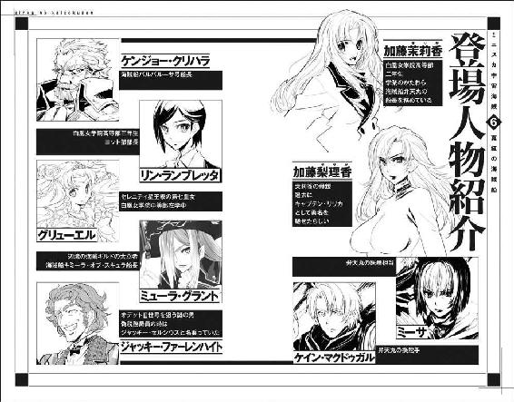
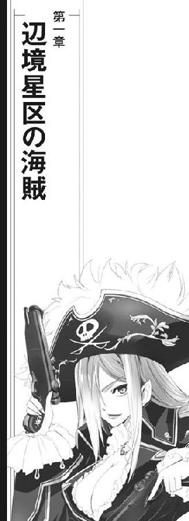
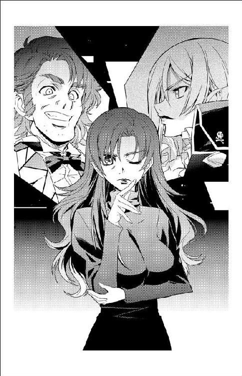
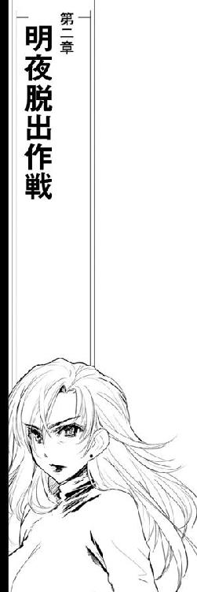
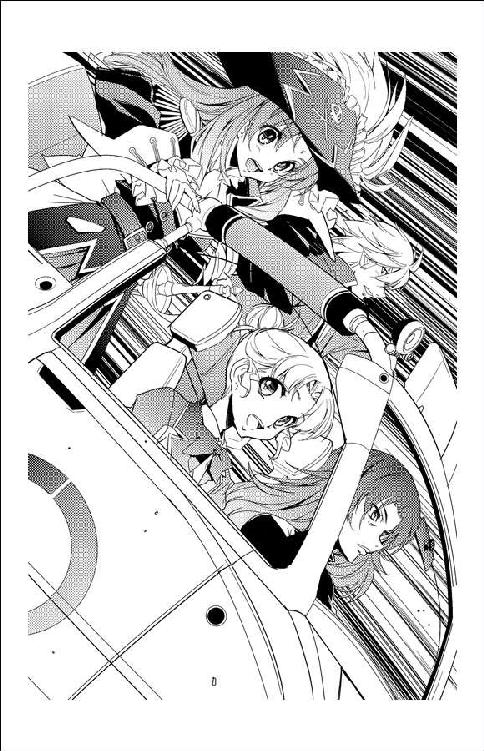
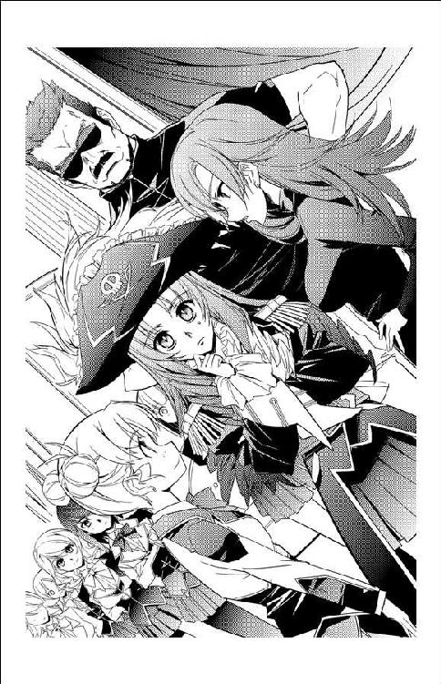
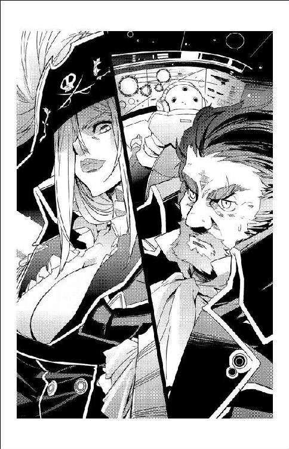
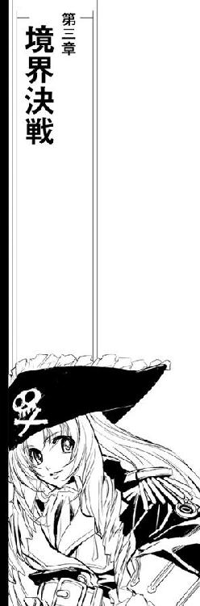
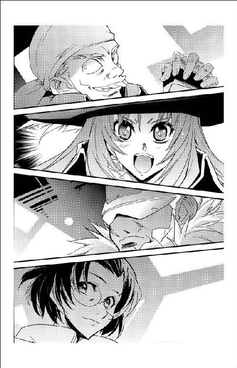
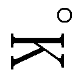

| ミニスカ宇宙海賊 06 真紅の海賊船 | |
| 笹本祐一 | |
| 朝日新聞出版 (2012) | |
イラスト／松本規之
カバーデザイン／シマダヒデアキ＋波澄智子（ローカル・サポート・デパートメント）


「追うわよ。全船、跳躍用意！」
『待て！』
バルバルーサからの野太い声が弁天丸のメインブリッジに響いた。
『待て待て、そう急ぐな』
「だって、ケンジョー船長！」
すぐに追跡すべき理由を頭の中でリストにしながら、茉莉香は反駁した。
『次に跳んでいた巡洋艦の目的地が違う』
「え？」
『もちろん、跳躍跡から正確な飛行計画なんか読めないが、今の観測網なら方向や距離は推測できる。制御ステーションとルナライオンの跳躍跡はあの赤毛が残してったデータとは矛盾しないが、それがどこまで正確かってのはまた別な問題だ』
目の前で行われた超光速跳躍なら、エネルギー反応、重力異常、空間歪曲にはじまる詳細なデータを観測することができる。エネルギー反応からは跳躍に使われた出力が求められるし、重力異常や空間歪曲からは規模や方向を逆算することができる。宇宙船の質量や寸法がわかっていれば、跳躍時の観測データからでもかなり正確な予測データを弾き出すことができる。
しかし、観測データが誤差を伴うように、予測はある程度の幅を持って計算される。宇宙船の質量が大きく、エネルギー反応が大きくなればなるほど誤差は累積されて大きくなる。小型船の近距離跳躍ならば方向も距離も実用に足る精度で計算することが可能だが、跳躍距離が大きくなり、また宇宙船の質量が大きくなるほど予測は不確実性を増していく。
『今も外宇宙に転針したアークトロイが跳んでいったが、こりゃ二隻目とも跳び先が違うぜ』
「つまり、今反乱軍が行なっているのは撤退であって、追跡戦ではない？」
『それも、額面どおりに受け取るならそれぞれの母星系への撤退であって、制御ステーションごと跳んでったうちの練習帆船を追ってるわけじゃない。そらまあ、オデットII世なんてのは非武装の練習帆船だから、力任せに制圧しようと思えば申し訳程度に揃えた巡洋艦でも充分だが、だったらせめてこっちに残ってるおれたち海賊船を足止めしようとするはずだ』
ケンジョーの声にわずかな間が空いた。
『どうだい？ そっちの目で見て、こっちにつっかかってきそうな艦はいるかい？』
「反乱軍全艦艇は、ガーネットＡから離脱する方向に進行中」
クーリエは、弁天丸のレーダー／センサー、及びまだ詳細なデータを送り続けている無人観測機のネットワークからのデータを統合して答えた。
「どこにいるかってそれぞれの事情を考慮しても、バルバルーサや弁天丸への接近軌道を取ってる艦なんか一隻もいないわ」
「弁天丸にもバルバルーサにも、向かってくる艦は一隻もいません」
茉莉香は要約した哨戒状況を伝えた。
『つまり反乱軍の全艦がケツに帆かけて逃げ出してる。この状況であの赤毛のデータを鵜呑みにして帝国版図ですらない外宇宙に跳ぶのは危険だ。なんせ、行き先は辺境区』
手許のデータを確認するように間が空いた。
『帝国艦隊の庇護も援護も期待できない』
帝国領内の秩序と安全は銀河帝国により保証されている。しかし、帝国の版図にない辺境区はその限りではない。
名目上は銀河帝国第七艦隊が辺境区の巡回と護衛の任に就いており、帝国籍の艦ならば安全の保障や護衛を求めることはできる。しかし、ガーネットＡに援護に駆けつけるべく手配されていたのは当該星区担当の第五艦隊であり、帝国の占領区でもない場所に帝国艦隊が大規模に展開するのは事実上不可能と言ってよい。
『で、どうだ？ オデットII世との通信はまだ回復しないか？』
「まだです」
光年単位の距離が離れている宇宙船同士の超光速通信は互いの位置が確保されていないと成立しない。現状では、オデットII世から呼び掛けてもらわない限り、超光速通信はつながらない。
『赤毛の大将が置いてった跳び先の座標に呼び掛けても、通信回線はつながらない。オデットII世もルナライオンもこっちの位置は確保してるはずだから、向こうからならつなげられるはずだ』
「電話がつながるようなところじゃないよお」
クーリエは銀河電信電話公社の営業区域を星図に重ねている。
「帝国内ならなんにもない恒星間空間でも電話つながるのに、帝国領外だし第三勢力とローミング契約しててもこんな中継ステーションもない場所じゃ、呼び掛けてもつながらない」
『そういうわけだから、向こうからの呼び出しをまずは待とうじゃないか。捜索を出すのはそれからだ』
『捜索はこっちの仕事だろうなあ』
サイレント・ウィスパーの百眼が通信に加わった。
『捜索隊の仕事はこっちで引き受けよう。幸いにしてサイレント・ウィスパーには精度の高い跳躍ができる超光速機関がある。バルバルーサや弁天丸と比べれば質量も小さいから、データの座標にぴたりと跳べるぜ』
「居場所がわかればすぐに跳んでいくわ」
船長席から腰を浮かせていた茉莉香はシートに身を沈めた。
「今は、見えている反乱軍の艦艇がそれぞれどこに跳んでいくか、それに集中して。作戦が続行中なら、たぶん一番跳んでいく宇宙船が多いところがオデットII世の行き先だろうから」
「連絡待ちと、跳躍先の観測ね」
クーリエが当面の方針をまとめた。
『その間に、こっちはオデットII世用の超光速ブースターを引っ張っていく算段を整えにゃ』
ケンジョーの声に、茉莉香は思わずああっと声を上げた。オデットII世は本来超光速機関を持たない、カテゴリーIIの亜光速宇宙船である。現在位置がどこだろうと、オデットII世を鯨座宮に連れて帰ろうと思ったら、ここに来た時と同様に超光速ブースターを接続しなければならない。そして、専用の超光速ブースターは切り離されたまま外惑星軌道上を周回しているはずである。
『どうだい茉莉香船長？』
ケンジョーはのんびりと呼び掛けた。
『こっちはオデットII世用のブースターの運転データなんぞ持ってない。そっちでなんとかなるかい？』
「なんとかします」
もちろん、弁天丸にもオデットII世の細かいデータなどない。しかし、超光速ブースターにはオデットII世のメインコンピューターと同様のデータがバックアップされているはずだし、茉莉香自身がオデットII世の扱いを知っている。いざとなればオデットII世に廻されたのと同様の技術資料も手に入るはずである。
『目端の利く奴に超光速ブースターだけ破壊されていっても厄介だ。弁天丸は外惑星でふらふらしてるはずの超光速ブースターを確保して持っていけるようにしてくれ。サイレント・ウィスパーは跳躍の前にうちの副長返してくんな。あとは練習帆船の娘海賊かうちの陸戦隊か、でなければ赤毛の大将が連絡してくるまで待ってみよう』
「オデットII世の超光速ブースターの現在位置は取れてる？」
「把握できてる」
航法席のルカが両手を動かしながら答えた。
「オデットII世の最初のタッチダウン・ポイントで切り離されて、そのままのはず。主機を再立ち上げして制御してやれば、単機でも跳ばせるはずよ」
「それじゃ、弁天丸は超光速ブースターを捕まえに外惑星軌道に行きます」
『あいよ、うまくやっとくれ』
「サイレント・ウィスパーはバルバルーサにノーラ副長をエスコートしてさしあげて。そちらは......」
茉莉香は、あっという間に反乱軍がいなくなってしまったガーネットＡの周辺空域を見廻した。
「このまま待機ですか？」
『え？ いや、おれっちはちょいと行かなきゃならないところがある』
通信モニターの中で、黒髭船長は明後日の方向に指を立てた。
『フォートノース25まで行って、出動依頼を待ち構えてる銀河帝国第五艦隊に今の状況を報告しておこうかねえ。なんせすでに練習帆船一隻、ことによったらあと海賊船二隻が帝国版図外の辺境区に飛び出していくんだ。援護は期待できないにしても、帰ってきた時のために言い訳はしといた方がいいだろうぜ』
フォートノース25は、帝国の大規模補給工廠である。茉莉香は、ガーネットＡでの作戦がはじまる前のミーティングで会った第五艦隊の幕僚や情報監察官の顔を思い出した。
「厄介事押しつけて、すいません」
茉莉香は、黒髭船長に素直に一礼した。ケンジョーは人でも食いそうな歯を見せて大笑いした。
「心配するなら、おれっちじゃなくて跳ばされちまったオデットII世の方にしな。次に会うのは辺境だ、それじゃこっちのことはよろしく頼むぜ」
ケンジョーが通信モニターの中から敬礼を飛ばした。それを合図にしたように、バルバルーサは外惑星軌道に針路を取って動き出した。
「じゃ、弁天丸は超光速ブースターに針路を取って」
梨理香は指示した。
「いつ、オデットII世から連絡が入るかわからないから、超光速ブースターの発進準備を急ぎましょう」
「オデットII世、通常空間に復帰！」
航法士席のマリイが告げた。
「ただ今、現在位置確認中」
高重力源の近所から大質量でむりやり跳んだせいか、オデットII世の周辺空間の乱れがひどい。
「確認急いで！」
梨理香は立て続けに指示を飛ばした。
「オデットII世、船体チェック！ 今の跳躍で船体構造、機能にダメージ出てないかどうか確認して。通信は開放のまま耳を澄ませて、制御ステーションとの回線は接続続行。何か言ってきてる？」
「通信回線には相変らず反応なし！」
リンは、制御ステーション側の回線になんとか潜り込もうと、さまざまな手を次々に試している。
「ドッキングブリッジ異常なし」
グリューエルが伝達した。
「ドッキングブリッジ内、制御ステーション側ともに一気圧の与圧大気で満たされています。有毒成分、なし」
「船体に異常なし！」
リンが報告した。
「構造、推進、制御系、すべて正常！」
「帆走系異常なし！」「通信系問題ありません」「レーダー大丈夫！」「センサー系全系統正常稼動確認！」
「現在位置出ました！ 銀径〇三度四六分五四秒、銀緯一二度二四分三〇秒、辺境区七つ星共和連邦の恒星間空間です！」
数字を読み上げながら、マリイはディスプレイ上に映し出した銀河系宇宙の全天宇宙図に現在位置を赤くプロットした。
「帝国領外か」
梨理香は短くつぶやいた。
「まわりに宇宙船は!?」
跳躍直後の船長席のモニターには、周辺空域に存在するはずの宇宙船の情報はない。安定しない空間状況を無理に透かして得た情報が次々に表示される。
「......近距離に、宇宙船がいない......？」
すぐ横にオデットII世よりもはるかに大きな制御ステーションがあり、その向こうには黒鳥号もドッキングしている。死角が大きいから完全な情報ではないものの、時間とともに有効半径も精度も上がっていくはずのオデットII世のレーダーもセンサーも他の宇宙船を見つけ出せない。
「そのうち前跳躍現象でもなんでも出てくるはずだ、走査続行！」
オデットII世のレーダー／センサー系に引っ掛からない死角に他の宇宙船がいる可能性まで考えて、梨理香は首を捻った。
「待ち伏せされてないはずがないんだが」
オデットII世に艦載兵装はない。ドッキングと同時に超光速跳躍したのなら、目的地にいる待ち伏せ部隊はすぐに姿を見せて、オデットII世を恫喝するなり交渉を呼び掛けるなりするのが常道である。
梨理香は、上陸部隊が待機しているはずのカーゴ・ベイに回線をつないだ。
「ブリッジより上陸部隊、カイエン隊長、シュニッツァー、こちら梨理香。現在位置は辺境区、七つ星連邦の恒星間空間、周囲に敵影なし！」
同じ情報はカーゴ・ベイの情報コンソールにも、上陸部隊の個人装備とつないだデータ回線にも流れているはずである。
『こちらカイエン』
バルバルーサ陸戦隊隊長にして上陸部隊指揮官でもあるカイエン隊長が応答した。
『制御ステーションへのドッキングと同時に内部の情報収集を開始してるが、こっちも成果なしだ。エネルギー反応はあるし空気も詰まってるから稼動してるステーションだろうとは思うが、跳躍が黒鳥号側の主機で行われたのか、それともステーションが超光速機関装備してるのかもわからん』
「少なくとも、制御ステーション側はオデットII世がドッキングしてくることを察知していました。現時点で、周囲に敵影なし」
『そして、投降を呼び掛けるような通信も、なし、だ』
錆鉄色のカイエンの低音が歴戦の勇士らしい笑みを含んだ。
『すまんが、ここで様子を見て時間を無駄にするような教育は受けていない。ここが帝国の版図外である辺境区ならなおさらだ。敵に時間を与えれば与えるだけ態勢も整うだろうし、援軍も駆けつけるだろう。上陸部隊は当初の予定どおり制御ステーションに上陸する。任務にステーションの占拠だけではなく、内部の状況調査が加わるだけのことだ』
「シュニッツァーも同じ意見？」
『同じだ』
シュニッツァーは簡単に答えた。
「わかりました。すでに結合は確認されています。タイミングは任せますから、ステーションへの突入を開始して下さい」
『了解した。では、上陸部隊はただ今から制御ステーションへの上陸を開始する』
「超光速通信は、どうしますか？」
梨理香は、質問を発したグリューエルに目を走らせた。意図しない跳躍に巻き込まれてそのまま長距離を跳ばされたから、設定されていた超光速通信回線は強制切断されている。
「回復させて」
梨理香はすぐに指示した。
「ここは敵地よ。今さら無線封鎖して現在位置を秘匿する必要はない。海賊たちに現在位置知らせて安心させておやんなさい」
「了解しました」
光速で発信される通常の電磁波通信でも、周波数帯によっては正確に目標を照準しないと受信してもらえなかったりする。超空間を経由する超光速通信は、相手の現在位置を正確に確保しないと通信回線が維持できない。グリューエルは、通信機に残っていた最後の弁天丸とバルバルーサの位置を再確認して、超光速回線の設定を開始した。
『ルナライオンよりオデットII世』
猛烈なノイズとともに、とぼけた声がオデットII世のブリッジに流れた。
『非常時なんで強制介入で失礼する』
「ジャッキー！」
梨理香は鋭い声を上げた。
「どこにいるの!?」
『君たちのすぐそばだ』
ブリッジクルーにルナライオンの現在位置を探させるつもりだった梨理香に、ジャッキーはあっさり答えた。
『こいつは通常通信だ。もし間に合ったなら、超光速通信はちょっと待ってくれ』
「理由は？」
グリューエルに手を挙げて、梨理香は訊いた。
「こちとら、ドッキングしたらいきなりそのまま敵地のど真ん中に跳ばされたんだ。味方に連絡とっちゃいけないって理由があるなら聞かせてもらおうじゃないか」
『それがまさしくその理由だよ。通常通信なら現在位置は光速でしか伝わらないが、超光速回線を設定したらその瞬間に君たちの正確な現在位置が仲間の海賊だけじゃなくて反乱軍にまで届く』
「ルナライオン、見つかりません」
リンは口惜しそうに報告した。
「通常通信のタイムラグを考えれば、半径一〇万キロ以内にいるはずなのに、レーダーにもセンサーにも反応なし......」
「ルナライオンってのは厄介なステルス機能装備してるって話じゃないか」
梨理香は言った。
「ジャッキーってのがその気にならない限り、隠れてるルナライオンをこっちから見つけ出すのは不可能なんだろう？」
『今、君たちは全部の装備を使って周辺空域を走査しているはずだ。目が届く限りの空域に、敵の宇宙船は見当たるかい？』
「現時点で、発見できていない」
同じ情報を得ているだろうルナライオンに、オデットII世のレーダー／センサー性能を秘匿する必要はない。梨理香は、現状をジャッキーに伝えた。
「ルナライオンを含めて、の話だが」
『あーすまない』
応答に笑い声が混じった。
『この辺りはこっちにとっても安全な空域じゃないもんでね、念には念を入れさせてもらってる。制御ステーションと黒鳥号が一緒じゃ積極的に身を隠すこともできないが、ご覧のとおり少なくとも現時点では反乱軍は君たちの正確な現在位置を把握していない。だが、この空域は恒星間空間とはいえ七つ星連邦の領空内だ。ここで超光速回線を設定されると、反乱軍に正確な現在位置を把握されちまう』
「時間の問題じゃないのかい？」
タッチダウンして時間が経てば、周辺空域は安定する。精査された最新の観測データでオデットII世の現在位置を再確認しながら、梨理香はジャッキーに切り返した。
「これだけの大質量の跳躍だ。そのつもりで待ち構えてれば、少しばかり離れてたって出現地点の見当はつく。あとはその辺りに調査艦を集中されれば、ここが見つかるのも時間の問題だ」
『だが、少なくとも反乱軍が駆けつけるまでに時間がある』
ジャッキーの声は落ち着き払っていた。
『いくらアクティブステルスできるって言ったって、こんな辺境に跳ばされたオデットII世が超光速ブースター抜きで反乱軍から逃げおおせることはできない』
「援軍が来るさ」
重ねて、まだ超光速回線を開かないように梨理香はグリューエルに手を挙げた。
「現状で、正確な現在位置はわかっている。現在位置を通告すれば、弁天丸もバルバルーサもすぐに跳んでくる」
『だが、そこまでだ』
ジャッキーの声に揶揄するような調子は見えない。
『ここは辺境だ。反乱軍は好きなだけ戦力を集中できるが、君たち、いや、こっちはそうはいかない。帝国領内のガーネットＡなら星系軍や防衛艦隊だけじゃなくて帝国正規艦隊だっていくらでも跳んでこれるが、帝国領外の辺境となれば平気で出てこれるのは海賊船と、......あとは？』
「戦力比が不利なのは、今にはじまったことじゃない」
梨理香は微塵も不安を感じさせない声で言った。
「それに、こっちの目的は反乱軍を蹴散らすことじゃない。ステラ・スレイヤーを潰せればそれでいいんだ」
『知ってる。簡単だ。制御ステーションをぶち壊せば当面の目的は達せられるだろう。だが、そうなったら今度は君たちがただじゃ済まない』
「君たち？ 誰のこったい」
梨理香は確認の意味も込めて訊いてみた。
『君たち、オデットII世に乗り組んでいるヨット部員と梨理香船長、あなただ』
梨理香はブリッジクルーの顔を見廻した。
『制御ステーションが破壊されれば、反乱軍はステラ・スレイヤー再建のために必要な部品の奪取に全力を挙げるだろう。君たちが素直に練習帆船を反乱軍に引き渡す気がない以上、戦闘になるのは見えている』
「よくわかってるじゃないか」
『それも、あんまり考えたくない戦闘だ。現状でオデットII世の戦力は、ステーションを占領するための陸戦隊だけ。これでは、白兵戦しか戦えない』
「海賊らしい戦い方だろう？」
『それじゃあ勝てない』
諭すような口調で、ジャッキーは言った。
『白兵戦に持ち込めば、間違いなく非戦闘員であるヨット部員たちにも被害が出る。よしんば一隻目を制圧できたとしても、二隻目からはわざわざドッキングしてくるような手間をかけずに艦砲射撃に移行するだろう』
「その頃には援軍が到着してるさ」
『戦力比が偏りすぎてるから、あてにはできない。そりゃあ、君たちなら辺境で実戦に鍛えられてる反乱軍が相手でも戦えるだろうが、それは最後を先に延ばすことにしかならない。そんなことも想像できないキャプテン・リリカじゃないだろう？』
梨理香は答えず、ジャッキーが喋るに任せた。
『忘れないでくれ、ステラ・スレイヤーを起動させるのに一番重要な部品は、再建が利く制御ステーションや赤色巨星を相手にした観測網じゃない。照準用の単分子結晶、つまりオデットII世の船首マストだ。そして、それは何をやろうが、そう簡単に壊れるもんじゃない。反乱軍は、超光速できない練習帆船を乗組員ごと灼き尽くしてからでも、必要な部品をゆっくり回収すればいい。ここじゃあ、練習帆船を非戦闘員ごと全滅させても、大した不都合はないんだ』
「なんかうまい手がある、って言うのかい？」
梨理香は、画像が切れたままの通信モニターに目を走らせた。表情が見えれば、言葉と声色以外の情報が得られる。
『今なら、まだ反乱軍が駆けつけてオデットII世を包囲するまで時間がある。その時間を使って、君たちを安全な状況に置くことができる』
「ずいぶん恩着せがましい言い方するじゃない。いいわ、策があるなら言ってみなさい」
『おう、とりあえず聞く耳持っていただいて感謝するぜ。絶対に損はさせない話だ、耳かっぽじって聞いとくれ』
「手短にお願い」
梨理香はちらっと船長席まわりのディスプレイとモニターで現状を確認した。
『今すぐ制御ステーションからドッキングアウトして、黒鳥号の側に廻ってくれ』
「黒鳥号？ あのニセの難破船に？」
『いや、あれでも船殻は本物なんだぜ。詳しい説明はあとで行う。黒鳥号はお察しのとおりニセの難破船で、その実体は内部に強力な反重力機関を抱え込んだ工場船だ。構造は原型無視した改造をしてるが、あれは必要な部品だけつなぎ合わせた工場船にかつての黒鳥号の船殻が被せてあるだけの作業船だ』
「......それで？」
オデットII世のセンサーには、まだ周辺空間に飛んでくる宇宙船の反応はない。
『船首部分に密閉型の浮きドックが組み込んである。寸法は確認してあるから畳まれてるオデットII世なら収まるはずだ。今開ける』
「黒鳥号に小規模エネルギー反応！」
リンが声を上げた。
「黒鳥号の外殻に形態変化確認！......船首が、開いてる!?」
『黒鳥号の中に入ってくれ。ステーションにあんなスピードでドッキングした君たちなら、簡単だろう』
「そのあとは？」
『練習帆船が黒鳥号に入ってくれれば、どこへでも逃げられる。言っただろ、あれは工場船を改造したはりぼてだ。追跡を目眩ましするのに充分な出力の反重力機関も、超光速機関も積んである』
「なるほど、そうやってうちの宇宙船を確保するつもりだったのね」
つぶやいた梨理香は続けた。
「あら、ごめんなさい。うちの上陸部隊、もうステーションに突入しちゃってるの」
『なに!?』
「ちょうど今、メインコントロールを制圧したって連絡が入ったわ」
ジャッキーは即座に反応できなかった。
『......なんだ、ってええー!?』
『繰り返す、シュニッツァーよりオデットII世ブリッジ』
梨理香が切り換えたチャンネルがブリッジに流れた。
『上陸部隊は制御ステーションの中央司令室制圧に成功した。民間非武装の職員しかいない。損害ゼロ、現在制御ステーションはこちらの制圧下にある』
「ご苦労さま、シュニッツァー。続けてで申し訳ないけど、二隻も宇宙船抱えてどうやって跳んだのか、もう一度跳べるかどうか確認して。聞こえてる、ジャッキー？」
『ああ、ばっちりだ』
「お聞きのとおり、現在制御ステーションは我々が制圧しました。状況が変化したと思うけど、そちらのプランに変更はあるかしら？」
『......時間稼ぎしたね』
舌打ちが聞こえた。
「あら、あなたの話し相手になってあげてただけじゃない」
梨理香は微笑を湛えたまま答えた。
「外に連絡を取らない、って以外には急ぎの話もなさそうだったし、制御ステーションの中の状況が見えていない以上、探るのは当然でしょう。うちの陸戦隊、こんなに仕事が早いとは思わなかったけど」
『早すぎだ！ まったく、スケジュールががたがたになっちまう』
「今、中央司令室を制圧したうちの陸戦隊に、制御ステーションがどうやって跳んできたか調べてもらってるの」
ステーション側から開かれた回線に、情報がどさあっと載せられて入ってきた。リンは悲鳴を上げながら、必要そうな情報を選り分けて片っ端から空いているディスプレイに表示する。観測アンテナを拡げたままの制御ステーションの全体構造図が船長席のディスプレイに映し出された。
梨理香は、平面ディスプレイに映し出された制御ステーションの構造図に触れて回転させた。
「内部に超光速機関らしき主機は見当たらず、と。てことは、オデットII世を制御ステーションごと跳ばしたのは黒鳥号ね？」
応答が返ってくるまでに、ちょっとした間が空いた。
『ああ、そうだ、そのとおりだ。制御ステーションには超光速主機なんかないはずだが、黒鳥号にはこんなこともあろうかと自重が一桁増えても跳べるような大出力の主機を積んである』
「黒鳥号は、今、あなたのコントロール下にあるの？」
梨理香はさりげなく確認した。
『ああ、そうだ。完全じゃないが、黒鳥号は今こっちから動かせる状態にある』
「そうよね、ドッキングアウトして黒鳥号に食われろって指示を出すってことは、黒鳥号は今あなたのコントロール下にある、ってことよね？」
梨理香は軽く溜息をついた。
「弁天丸よりカイエン隊長、ブリッジから次の指示してもいいかしら？」
『早速来たか。次のご注文はなんだ？』
「中央司令室まで行ってればあともう少しだと思うから、ステーションの反対側にドッキングしてる黒鳥号を押さえてもらえる？」
司令室から流れてくるデータには、ドッキングブロックに固定されている黒鳥号に関する最低限のデータしか載っていない。
「それじゃあ、制御ステーションがガーネットＡから跳んだ時、黒鳥号のコントロールはどこにあったの？」
即答はなかった。梨理香は、もう一度ゆっくりと繰り返した。
「制御ステーションとオデットII世のドッキングを確認してから、黒鳥号を跳躍させたのは、いったい、誰？」
『オデットII世が制御ステーションへ隠密航行中には、黒鳥号のコントロールは反乱軍にあったはずだ』
ジャッキーは答えた。
『コントロールが制御ステーションにあったのか、反乱軍のどの艦にあったのかまでは把握していない。お望みなら黒鳥号の記録を調べれば特定できると思う』
「それじゃあ、それはあとで余裕があればゆっくりやることにして」
溜息混じりに、梨理香は切り出した。
「今、黒鳥号のコントロールがあなたの手にあるなら、ステーションとドッキングしているオデットII世まるごと、もとの場所に戻してもらえないかしら？」
『そいつは......』
通信の向こうで、ジャッキーは絶句したように聞こえた。
「ここは、銀河帝国の外、帝国の法も帝国艦隊の援護も期待できない辺境区なの」
すべての事態を承知しているはずのジャッキーに、梨理香は噛んで含めるように言った。
「たとえ反乱軍が待ち構えているとしても、もとの空域に戻る方があたしたちにとっては有利だわ。もしあなたが黒鳥号のコントロールを握っているなら、今すぐに制御ステーションとオデットII世をもとの場所に戻してくれないかしら？」
『できない』
ジャッキーは簡潔に答えた。
「なぜ？」
『理由は二つ。工場船改造の黒鳥号は連続跳躍できるようにはなっていない。オデットII世がドッキングしたことによる質量増加はそれほどでもないが、制御ステーションを含む総質量は黒鳥号が一度に跳ばせる限界に近い。今、主機はクールダウン中で、すぐに次の跳躍を行うことは不可能だ』
そこまでは、梨理香も予測していた答えだった。
「もうひとつは？」
『知ってのとおり、制御ステーションのもとの座標はガーネットＡの直上だ。超光速跳躍に伴うさまざまな制限を知らないわけじゃないだろう』
「巨大重力源のそばでの跳躍は、重力による空間歪曲があるため誤差が大きくなるから危険。常識ね。でも」
梨理香は、ジャッキーの反応に耳を澄ましながら付け加えた。
「黒鳥号はその危険な空域から跳んだわ。だったら、その逆も可能でしょ？」
『巨大重力源の近距離座標への跳躍は、逆の場合よりもさらに誤差が大きくなる。今さらそんな講釈が必要な君たちでもあるまい？』
「だったら、ガーネットＡの直上でなくてもいい。そうね、最大限譲歩して銀河帝国の領内ならどこでもいいわ。最短距離なら百光年も離れてないでしょう」
『ひとつめの理由により、すぐの跳躍は不可能だ』
「どれくらい待てば行けるかしら？」
『もとが工場船だからね、そこら辺の宇宙船よりも出力には余裕があるが、扱いが厄介なんだ。制御ステーションとオデットII世を合わせて、バランス調整もなしに後先考えない跳躍を行なったから、次の跳躍のための再調整とエネルギー充填にしばらく時間がかかる』
『制御ステーション中央司令室より弁天丸ブリッジへ』
カイエン隊長からの連絡が入った。
『黒鳥号との回線を押さえた。艦内データをチェックしてみたが、データを偽装しているのでない限り、黒鳥号は無人で運用されている可能性が高い』
「念のために内部調査をお願いします」
梨理香は手早く伝えた。
「それと、黒鳥号との回線を中央司令室経由で構わないからオデットII世に直結して下さい。リン、黒鳥号のコントロール乗っ取って」
「ここから？」
電子戦卓のリンがブリッジを見廻した。
「システムもわかってない、帝国船籍ですらないだろう難破船を？」
「何やってもいいわよ」
梨理香はびしっとリンを指した。
「できること何やってもいい。黒鳥号のコントロールを有線で接続されているわけでもないあの赤毛が握ってるなら、乗っ取って好き勝手に動かすこともできるでしょう」
「了解」
電子戦卓に向かったリンは、拡げたまま固定されていたＨＡＬ坊とコンソールを猛烈な勢いで叩き出した。
「グリューエル、中央司令室経由の黒鳥号の回線をこっちに固定。できるだけ太い線が欲しいわ、つなげられるだけの回線はこっちにつないで。手空きの人はこっち来て。手が何本あっても足りないわ」
『他に質問がなければ、急いで黒鳥号に逃げ込んでくれ』
相変らず切実感のない声で、ジャッキーはしばらく反応がなかった通信回線に伝えた。
「あら、スケジュール変更になったんじゃなかったの？」
『そのとおりだが、もし間に合うなら当初の予定どおりに話を進められればいろいろ楽かな、と思ったんだが......』
「前跳躍現象感知！」
航法士席のマリイが声を上げた。
「大質量、大型艦！」
『ああ、もう間に合わないか』
ジャッキーの声が自嘲を含んだ。
『できれば君たちを安全にこの場から逃がしてやりたかったんだが、もうそれもできないかな』
「バルバルーサでも弁天丸でもないわね」
観測されたパターンからリストになって表示された予測データの中に弁天丸もバルバルーサの名前もないのを見て、梨理香はジャッキーに訊いた。
「反乱軍？」
星の光に照らし出されるだけの暗い恒星間空間に、新たなる宇宙船が姿を現わしつつあった。
『違う。できれば教えたくなかったんだが、紹介しよう。あれはスキュラ。キミーラ・オブ・スキュラ』
巡洋艦級の主砲でも届くような距離に、星間物質を渦巻かせながら大型宇宙船がタッチダウンしてくる。観測された前跳躍現象データの照合に、オデットII世のコンピューターは早々に該当船なしの結果を弾き出していた。
『クラスは高速戦艦になるが、艦種は海賊船だ。辺境でも、自分から海賊船だなんて名乗る宇宙船はそう多くないが、スキュラは数少ない例外のひとつ。白状しよう、あれが、君たちと会わせたくなかったこの僕のスポンサーだよ』
「全センサー解放、取れるだけのデータを取っておいて」
梨理香は指示した。
「ただしこちらからのアクティブ観測はなし！ こっちが動いてることを気づかれないようにおとなしくやって」
梨理香は通信に戻った。
「やっと、あなたを雇ったスポンサーのお出ましってわけね」
言ってから、梨理香は気づいた。
「......海賊？ あなたのボスって、反乱軍じゃなかったの？」
『帝国から見たらどっちも同じようなもんじゃないのかい？ そう、今回の仕事には辺境の主だった星間国家や連合がいろいろ協力してくれてるけど、立場も利害関係も違う彼らをまとめて作戦に参加させたのはあいつら、海賊ギルドの連中だ』
「海賊ギルド？」
梨理香は呆れ声で訊き返した。
「まだ、実在してたの？」
『帝国領内に私掠船免状持った海賊がいて、縦だけじゃなくて横の連絡も欠かさないのに、辺境に追い払われた海賊がそのまま滅びたなんて思ってたのかい？ まあ、昔ながらの海賊稼業だけじゃなくて、今じゃいろいろ手広くやってるようだがね』
エネルギー転換した星間粒子を稲妻のようにまとわりつかせながら、鋭角的な宇宙船が超空間から通常空間に実体化した。
『海賊船スキュラの名前は聞いたことがなくても、海賊ミューラの名前なら聞いたことがあるだろう。通称、真紅の海賊。君たちみたいな免状持ちじゃない、かつては帝国とも百年戦線を戦ったほんものの海賊の末裔だ』
「光学観測、最大望遠です」
前跳躍現象の中心に高倍率光学観測設備を向けていた観測班からの画像を、マリイがブリッジに転映した。メインスクリーンといくつかのサブスクリーンに、揺れる星空をバックに有機的な曲線で彩られた細身の鋭角的な船影が映し出された。星明りに照らし出された宇宙船の色は、恒星の直射がなくてもわかるような鮮やかな赤色だった。
「直線距離二万キロ、トランスポンダーの反応なし」
「ほんものの、海賊......」
メインスクリーンに映し出された鋭角の船影に、梨理香はつぶやいた。ブリッジがざわめく。
『ひょっとしたら、これが最後の忠告になるかも知れない。しばらくはそちらからは発信せずに黙って話を聞いていることをお薦めする。これから、ギルドの重幹部も務める海賊ミューラと話をしなきゃいけない』
「ルナライオン確認！」
レーダー席の一年生が声を上げた。
「距離五〇〇〇キロ、いきなり出現しました！」
ふんと鼻だけ鳴らして、梨理香はこちらからの応答も省略して発信を切った。
「通信には耳だけ澄まして。それから海賊船スキュラと海賊ギルド、海賊ミューラに関する資料が船の中にあるかどうか調べて」
指示しながら船長席のコンソールに指を走らせた梨理香は、制御ステーション中央司令室への回線が他に流れていないことを確認した。
「ブリッジよりカイエン隊長、聞いてた？」
『こちら中央司令室、カイエンだ。ああ、聞いていた』
制御ステーションから聞こえてくる陸戦隊隊長の声は楽しそうなリズムに乗っていた。
『まさかご同業が敵とはね』
「真紅の海賊を、ご同業って......」
つぶやいて、梨理香は微笑んだ。
「相手は、こっちが海賊免状貰う前から賞金首の海賊ギルドの大立者よ。相手にとって不足はないわ。黒鳥号は押さえられそう？」
『黒鳥号にはシュニッツァーが向かっている。そろそろ到着する頃だ。無人運用されてる船ならボーディングブリッジが接続されてなくても文句は言えないが、その辺りはつながっているらしい』
「黒鳥号に到着したら、物理回線を固定するように伝えて下さい」
ＨＡＬ坊のキーボードを忙しく叩きながら、電子戦席のリンが言った。
「今のまんまじゃ、黒鳥号側から回線切られたらそれでお終いだから」
「カイエン隊長、聞こえた？ そういうわけでご同業であの詐欺師のボスが近所に来てるらしいから、こちらからの発信は例え近距離用の微弱電波が窓から漏れ出すような事態も避けたいの」
『物理回線の固定だな。今メッセンジャーを出した。それで、ジャッキーは海賊ミューラとの話を聞かせてくれるのかい？』
「そう言ってたわね。海賊ミューラって......」
梨理香は質問してみた。
「知ってる？」
『名前だけだがね、百年戦線当時の戦闘記録にもちらちら名前が出てくるような古手の海賊だ』
「海賊ミューラ、データにありました」
機関士席のヤヨイが声を上げた。
「メインスクリーンに出します！」
ブリッジのメインスクリーンに、古いエンサイクロペディアの一ページをそのままコピーしたようなページが現われた。記念写真の一部を切り出したようなきらめく銀髪の女船長が、冷たい瞳でこちらを見ている。
「データの日付、五十年も前ですけど」
『スキュラよりルナライオン』
鈴を鳴らすような声がブリッジに流れた。通信パネルに目を走らせた梨理香は、通信モニターに現われた銀髪の同じ顔を見た。
「長命種か」
『こちらミューラ・グラント船長。ジャッキー・ファーレンハイト、お仕事ご苦労でした』
『はいこちらルナライオン』
サブモニターに、ごちゃごちゃの操縦室を背景にしたジャッキーのにやけ顔が薄汚れたレンズ越しに映し出された。銀髪を長く流したミューラ・グラントはその細面をあからさまにしかめた。
『どもども、海賊ミューラ船長自らの通信とは、このジャッキー身に余る光栄』
『この仕事が終わる時までには船の中を片付けると聞いたような気がしますが』
ミューラは、濃いアイラインに縁取られた大きな瞳でルナライオンの操縦室を見廻した。銀髪の下から見え隠れするピアスの緩やかにつながれた白い結晶質がきらきらと音をたてる。

『ご覧のとおり、前とは見違えるように片付きましたでしょう』
カメラから身を引いたジャッキーは、派手な効果音とともにシートを引いて操縦室内に片手を拡げてみせた。
『ガーネットＡでいろいろ準備しながらたう星系にも行かなきゃならないわで、その間にルナライオンの初飛行以来って大掃除して、もう大変だったんですから』
『その件についてはゆっくりと話し合う必要があるようですね』
眉をひそめたまま、ミューラ・グラントが首を振る。プレートメールのような凝ったネックレスがなめらかに動く。
『よければ、うちの特殊部隊をお貸ししますよ？』
『冗談冗談、滅相もない』
ジャッキーは慌てて両手を振った。
『ミューラ配下の特殊部隊なんぞ送り込まれたら、うちの船なんかダストひとつ残さずにこの宇宙から片付けられちまう。こっちゃあもっと平穏な航海をするつもりなんで、どうぞ、お構いなく』
「レーダー波、来ました」
緊張した声で、アイが伝えた。
「射撃管制用の細かいの、うちと制御ステーションを舐めるようです」
「させときなさい」
梨理香は、電子戦席でグリューエル他ヨット部員たちを叱り飛ばしながら作業を続けるリンを見た。
「今さら、見られて困るような船じゃないわ。こっちの動きだけは見せないように気をつけて」
『白鳥号を、持ってきてくれたようね』
ほとんど真っ暗なブリッジで通信用のカメラ照明と手許のディスプレイの照り返しを受けているミューラが、視線を動かさずに言った。
『へい、本当だったらもっと前に持ってこれたはずだったんですが、いろいろと予定外が重なりまして遅れました。その代わり、ご注文の単分子結晶衝角だけじゃなくて本体も無傷、今すぐにでも動かせる極上状態ですぜ』
『時代遅れの帆船なんかに興味はないの』
ミューラはわずかに首を振った。
『単分子結晶さえあれば、用は足りるのだから』
『制御ステーションは、まあ、おまけみたいなもんだと思って下さい』
聞いていないように、ジャッキーは続けた。
『残念ながらガーネットＡまでお持ちすることはできませんでしたが、ステーションの中には最近一世紀分の観測データもある。あとは、シミュレーション解析すればどこの赤色巨星でもステラ・スレイヤーが使えるようになるでしょう』
「我々があの詐欺師にステラ・スレイヤーの奪取を持ちかけた時、すでにその買い手は決まっていたのですね」
リンの横で電子戦卓のコンソールをあちこち触りながら、グリューエルが顔も上げずに言った。
『遅れた分は契約書どおり計算して引いておきます』
サークレットから眉間に下がる紅いティアドロップ型の宝石を揺らして、ミューラは小さくうなずいた。
『確認しました。白鳥号及び制御ステーションと黒鳥号。コントロールは、今誰が持っているのかしら？』
『黒鳥号は、今こっちのコントロール下にあります』
ディスプレイの中で、ジャッキーは染みひとつない白手袋の掌を上げてみせた。
『名義変更が確認できたら、黒鳥号のコントロールをそちらに渡しましょう』
「取れねえ！」
猛烈な勢いでＨＡＬ坊と、片手は電子戦卓に伸ばしてタッチディスプレイを指先で叩きながらリンが叫ぶ。
「なんて固いプロテクトだ！ 難しいコード使ってるわけでも厄介な暗号化してるわけでもないのに、破れねえ！」
「指揮官が弱音吐かない！」
梨理香はぴしゃりと言った。
「大丈夫、まだ手も時間もあるから、落ち着いてやって頂戴」
『相変わらずね』
ミューラは通信モニターの中で小さく肩をすくめた。
『第一帝国銀行に開設済みの当座預金口座。指定どおり核恒星系のペーパーカンパニー名義よ』
ミューラは、細い爪飾りの長い指先を、ディスプレイの中から投げるように廻した。
『届いた？』
「口座名義とキーコードをデータ通信で送付したね」
通信モニターから目を離したジャッキーに、梨理香はつぶやいた。
『あいよ、ちょいと待っておくんな、残高確認しますから、と』
伸ばした手でサブコンソールを叩いたジャッキーが、満足した顔を通信モニターに戻した。
『遅刻の分はこっちの責任だが、きっちり計算どおりとは厳しいねえ、ボーナスなしかい』
『辺境に連合を組ませるのにどれだけ苦労したと思ってるの』
濃いアイラインに縁取られた赤い瞳をわずかに細めて、ミューラは妖艶な笑みを浮かべた。
『こっちの必要経費も嵩んでるのよ。予定価格を値上げしなきゃならないかも知れない』
『それは、そちらの営業にお任せします、フルパスを送っていただければ、黒鳥号のコントロールをお渡ししましょう』
『いいでしょう。時限解放型のフルパスを送ります。時間は、標準時で一分後でいいかしら？』
『よござんす。んじゃ、こっちのタイマー解放も一分後にセットして、同時に送信ということで』
「人質と身代金の交換みたいね」
梨理香が洩らした感想に、ブリッジクルーの何人もが笑った。
『制御ステーションよりオデットII世、シュニッツァーから伝言だ、通信回線の物理固定完了』
カイエン隊長の声はリンにも届いた。
「ありがたい、間に合った。マリイ、ルナライオンからの送信データ盗って！」
「入るかな、大丈夫かな」
『では、一、二の三』
ジャッキーの声と同時に、ルナライオンとスキュラの間で短いデータが交換された。
「取れた!?」
ルナライオンからのコントロールキーの傍受を期待したリンが訊く。
「駄目です！」
マリイが答えた。
「両方ともデータ交換は指向性通信使ったらしくて、ノイズも引っ掛かりませんでした」
「傍受できても、暗号化されてるだろうからたぶん無駄ね」
梨理香は力を抜いた姿勢で首を振った。
「海賊と詐欺師が交換するパスキーだもの、解きほぐすだけで何世紀かかかるはず。チャンスがあるとすれば」
「黒鳥号のコントロールがルナライオンから紅いのに移る瞬間」
リンは、ＨＡＬ坊を叩く手だけを止めた。
「あと三〇秒」
『受信確認。割り符との適合も確認しました』
『こっちもだ。パスキーが解放され次第、書き換えさせてもらうよ』
『どうぞご自由に』
わずかに顎を引いたミューラが、冷たい表情で言った。
『ところで、次の仕事は決まっているの？』
『さあて、決まっているような、決まっていないような』
のんびりコンソールを叩きながら、通信モニターの中のジャッキーは目を逸らした。
『今回の仕事で一息はつけますがね、なんせほら、こちとら仕事中毒で休むと死んじゃうから』
『次はどこへ行くの？』
『鍵が開いたら、とりあえず銀河の反対側にでも逃げ出しますよ』
ジャッキーはちらちらサブモニターを見ている。
『海賊ミューラ相手の大仕事が終わったんだ。とっとと逃げなきゃ、結果にどんな難癖つけられるかわかったもんじゃない』
「黒鳥号のコントロールを抜いたら、やることはわかっているわね」
普通に喋っても相手に聞こえることはないと頭ではわかっているのに、梨理香の声は低くなっていた。
「今使えるエネルギーを使って、短距離跳躍の三段跳び。ジャッキーの説明どおりなら帝国領内に戻るような長距離は跳べないはずだから、エネルギー量確認して三回分に振り分けるのよ」
「了解」
リンは額に滞留する汗を拭った。
「紅い海賊船が接近してくるまで待てば、それだけ黒鳥号のエネルギーを上げることができます」
こちらは手を動かしたまま、グリューエルが提案する。
「ぎりぎりまで敵を引きつけてからの方が、跳躍距離を稼げるのでは？」
「時間稼ぎして有利になるような甘い相手には見えないわ」
梨理香は、銀髪の女海賊を映し出す通信モニターを見つめた。
「それに、超光速宇宙船相手に距離を稼いでも無駄だ。それよりは、短距離でも跳躍数を稼いだ方が目眩ましになる。そろそろ時間かい？」
『開いた』
ジャッキーが嬉しそうに言った。
「取った！」
リンが叫んだ。梨理香は船長席から飛び出しかけた。
「ほんとに!?」
「確認してる間がありません、すぐに跳びます！ マリイ、短距離跳躍の目的地、できるだけなんにもなさそうなところ」
「これ！」
航法席から廻されてきた数値データを、リンは素早くＨＡＬ坊のキーボードを通じて黒鳥号の超光速機関制御システムに打ち込んだ。
「事前チェック全部省略、跳びます！」
「行って！」
梨理香の指示を待たずに、リンはコマンドを放った。黒鳥号の主機が超光速跳躍態勢に入る。
制御ステーション、及びドッキングしたままのオデットII世もろとも黒鳥号は跳んだ。
「負けたな」
銀河帝国第五艦隊司令本部から派遣された情報監察官は、端的に状況を要約した。
「やられました」
磨き抜かれた漆黒の円卓の端にただひとり着いているケンジョー・クリハラ船長は表情も変えない。
「ガーネットＡから、ステラ・スレイヤーの作動中心核となる中央制御ステーション、及び発射装置としてのステラ・スレイヤーの照準システムに不可欠な単結晶衝角を持つオデットII世を奪われた。これは、作戦の結果としては負けと判定せざるを得ない」
「事実関係については報告にあるとおり、今さら付け加えることはありません」
ケンジョーは飄々と言う。
「それをどう解釈するかも、もちろんあなた方帝国艦隊の自由だ」
「解釈した結果を伝えるだけなら通信で済む」
情報監察官は、まるきり感情のない声で応えた。
「わざわざケンジョー船長にご足労願ったのは、レポートにない言い訳を聞くためだ。言いたいことがあるだろう？」
「さすが、付き合いが長いといろいろ手順を省けるんで助かります」
ケンジョーは、漆黒の円卓の向こうにずらりと居並ぶ第五艦隊の幕僚たちの顔を見廻した。半分以上はこの場に実在しない立体画像だが、それでも顔も出さずに代理出席を立てているものは一人もいない。
「反乱軍はステラ・スレイヤー稼動実験のためにガーネットＡに制御ステーションを設置、照準システムに必要なオデットII世の単分子結晶衝角を奪取するという作戦予想には、誰も異議を唱えなかった」
ケンジョーは居並ぶ閣僚たちの顔を見廻した。
「ところが、反乱軍は予想に反して制圧前にオデットII世を奪取、中央制御ステーションもろともガーネットＡからその全戦力を引き揚げた。これはそちらの予想にもなかった展開だ」
「認めよう」
情報監察官は淀みなく答えた。
「ステラ・スレイヤーは開発初期段階の未熟なシステムだ。反乱軍がステラ・スレイヤーを単なる超新星爆弾としてではなく、本来の構想にある長距離エネルギー転送システムとして稼働させようとしていたことも含めて、我々の調査では確認できていなかった」
「まあ、作戦開始の前に我々がそれを知っていたからといって以後の展開がそれほど違ったものになる、とも主張しませんがね」
ケンジョーは、何人かとは顔馴染みである幕僚たちから目を離さない。
「最大の齟齬は、反乱軍の目的が乗組員ごとのオデットII世の奪取にあると見抜けなかったことだ。そして、その点においては我々はまさに反乱軍に踊らされ、目的を達成されたことになる」
ケンジョーは残念そうに両手を拡げてみせた。
「報告書にも記したとおり、はるばる帝国領内に遠征してきた反乱軍に対して我々が与えた損害は微々たるもんだ。ガーネットＡのまわりに展開された無人観測網の観測機をいくつかと、展開していた哨戒アンテナを数えるほど潰しただけに過ぎない。それに対して、現時点で我々の損害はオデットII世、及びこちらの手に入るはずだったステラ・スレイヤーの制御システム。なるほど、損得勘定で数えれば数えるだけ、こちらの負けは込んでますな」
「それだけではない」
監察官はすらすらと指摘する。
「ステラ・スレイヤーの基幹システムは、現在すべて帝国領外に持ち出され、反乱軍の手の内にある。肝心の赤色巨星抜きでも、反乱軍がステラ・スレイヤーの解析を行うことは可能だろう。その結果、辺境区のどこかの恒星系にステラ・スレイヤーが建設されれば、反乱軍のリストに加わる秘密兵器がまたひとつ、増える」
「まあ、自分のところでステラ・スレイヤーをゆっくり分析しようなんて気がなければ、オデットII世を制御ステーションごと持ち出そうなんて気にはならないでしょう」
ケンジョーは認めた。
「その点についても、異議はありません。というわけで、作戦行動中の海賊がわざわざ遠廻りまでして第五艦隊に見参したのは言い訳のためじゃない、これからの相談だ」
ケンジョーはぐいっと身を乗り出した。
「ご存知のとおり、オデットII世は今銀河帝国領内にはいない。辺境区に連れ出されて、正確な現在位置も不明だ。そして、連れ出されたのは宇宙船だけじゃない。乗組員もまたまるごと連れていかれて、状況も不明だ。もしここで、オデットII世を我々の手に取り戻すことができれば、少なくとも反乱軍はステラ・スレイヤーの研究を今以上に進めることはできなくなる」
「オデットII世を取り戻す、と？」
監察官は、ケンジョーの言葉を確認するように繰り返した。
「そうです」
ケンジョーは力強くうなずいた。
「現状のまま引き下がったら負け戦、どころかこれから先どんどん負けが込むって分析も、そちらとそうかけ離れてはいないと思いますが。こちとらなにより僚船が乗組員ごと持ってかれちゃったもんでしてね。海賊が宇宙船ごと海賊されたんじゃお話にならない」
「第五艦隊としては、今までのような協力は約束できない」
監察官の口調に相変わらず変化はない。
「オデットII世号が跳ばされたのは、辺境区七つ星共和連邦の星間空間だという話だな。そこは我々第五艦隊の管轄空域ではなく、帝国の版図ですらない」
「承知しておりますよ」
今さら何をという顔で、ケンジョーはうなずく。
「だが、そちらとしてもこの作戦を負けってことでこのまま終わらせるよりも、オデットII世を再び我々の手に取り戻すために引き続きできることをやる方が、いろいろと都合がいいはずだ」
「そちらというのは......」
監察官の言葉が一呼吸分だけ途切れた。
「帝国第五艦隊のことかね？ それとも、銀河帝国のことかね？」
「両方だ」
ケンジョーはしたり顔で円卓を見廻した。
「ついでに言えば、これは帝国臣民であると同時に私掠船免状を持つ海賊である我々にとってもやるべき仕事であると認識しております」
「今のスコアは、反乱軍に圧倒的有利であり、我々第五艦隊にとっても、銀河帝国にとっても、海賊である君たちにとっても著しく不利だ」
手許のディスプレイでレポートをスクロールさせた監察官は、ケンジョーに顔を上げた。
「ここからでも、逆転できると？」
「不利なのは事実ですが、まだ決着がついたわけじゃないでしょう」
ケンジョーはわざとらしく言葉を区切った。
「これから先の不利を堪え忍ぶ覚悟で、帝国がこれで作戦を終了するってえんなら話はまた別ですが」
「勝てるのか？」
うなずいてから、ケンジョーは口を開いた。
「第五艦隊が辺境区にのそのそ展開するわけにはいかないでしょうが、我々海賊ならオデットII世を救出するために辺境区に出ていくのになんの法的問題も存在しません」
「海賊相手にこんな質問をするのは愚かだとわかってはいるが、こちらも立場上確認しなければならないから聞いてくれ。その場合、作戦成功率は何パーセントと予想している？」
「海賊が、成功率算定してから仕事はじめると思ってるんですか」
ケンジョーはよく使われる決まり文句を返した。
「海賊が仕事をはじめる時に考えるのは、得られる成果のことだけですぜ。それが政治的状況にも経済勘定にも縛られない海賊の強みだと、今さら知らない皆さんでもないでしょう？」
「そして、海賊を止めようとすれば実力をもってするしかない」
監察官も決まり文句を口にした。
「だが、海賊からの報告書ならともかく、帝国艦隊内に廻る公文書にそんな言いまわしを使うわけにはいかんのだ」
「言いまわしはなんとでもお任せしますよ。作戦成功率の数字が必要なら、そうだな、今までの我々の実績から算定した数字でも使って下さい」
黒髭船長は、居並ぶ幕僚たちに派手なウィンクをかました。
「けっこー、いい数字が出てるはずですぜ」
「四六パーセントだ」
「あら」
間髪入れずに監察官が答えた数字に、ケンジョーは椅子からずり落ちかけた。
「半分も行ってない？ おっかしいなあ、こっちの勘定じゃ九〇パーセントは行ってるはずなのに」
ぼりぼりと頭を掻きながら、ケンジョーは椅子に座り直した。
「じゃいいや、報告書に説得力がある数字が必要なら、そうだな、八六パーセントとでも記入しておいて下さい」
「もしよければ、その根拠を聞かせてくれるかね？」
「んなもん口から出任せに決まってるでしょう、と言いたいところだが、実のところそうでもない。現状で、辺境区に跳ばされたオデットII世はまだ反乱軍の手に落ちておらず、健在です。ガーネットＡに集結した反乱軍のうち、七つ星連邦の当該星区に跳んだ宇宙船は全体の一割にも満たない数字で、それも制御ステーションを含むオデットII世と同じ跳躍データを残した宇宙船はいない。これでオデットII世が敵の大艦隊のど真ん中に跳ばされたならともかく、あの艦には乗組員だけじゃなくて海賊が本業でもある実戦慣れした陸戦隊が乗り込んでいる。そして、その指揮を執っているのはキャプテン・リリカだ」
一部の幕僚から感嘆したような声が聞こえた。気づかないふりをして、ケンジョーは続けた。
「我々は、オデットII世に乗り組んでいる仲間たちがまだ諦めていないと信じています。であれば、我々もまだ降りるわけにはいかない。状況は芳しいとは言えないが、ここから逆転できるってえんならそっちにも悪い話じゃないはずだ」
ケンジョーは、円卓にぐいっと身を乗り出した。
「というわけで、ここからが実は本題なんですがね、作戦の勝ちにより確実を期すために乗っていただきたい相談がある。聞いてもらえますか？」
「続けたまえ」
監察官は言った。
「我々も、黒髭船長ともあろう海賊がなんの目算もなしにここに来るとは考えていない。乗れる相談か、乗れない相談か、その結論は話を聞いてから下そう」
「ありがたい。実は、ですな、すでに我々の海賊船弁天丸はオデットII世を追って辺境に跳んでいます。そこで......」
『跳んだ......わね？』
「こりゃまたお早いぶっとばしで」
我ながら下手な芝居だなと自覚しつつ、ジャッキーは次の跳躍のための座標をコンソールにコマンドした。
「ずいぶんとお急ぎですなあ」
ミューラ・グラントは動き出す前に御託を並べるような海賊ではない。ルナライオンを攻撃目標に強力な射撃管制レーダーの照射と、通信回線を通じての素早いアタックが開始されている。気づかないふりをして、ジャッキーは通信モニターに顔を戻した。
「売り先は、もう決まってるんで？」
『引き合いは多いわ』
ミューラはゆっくりと辺りを見廻した。
『今回の作戦に艦艇を提供してくれた辺境国家はもちろん、帝国の軍需産業からもデータの提供を求められています』
「あんたって人はいったい裏で何やってるんだか」
超光速跳躍のための設定をすべて終えて、ジャッキーはミューラの顔を見直した。キミーラ・オブ・スキュラはルナライオンの現在位置を精密測定し、通信回線からコントロールを乗っ取ろうとしている。
「じゃ、そろそろふけさせていただきます」
『あら、ずいぶん急ぐのね。もしお願いできるなら、次のお仕事も付き合っていただきたいのだけれども』
「海賊ミューラから名指しのお仕事？」
ジャッキーはぶるぶると身体を震わせた。
「今回だって知ってたら逃げたのに、そんなもん、恐ろしくて受けられますかい。では失敬」
キミーラ・オブ・スキュラのエネルギー反応が急速に高まった。ジャッキーは超光速跳躍をコマンドした。
「危ねえ危ねえ」
超次元空間に跳び込んだルナライオンの操縦室で、ジャッキーは今しがたスキュラから受けたレーダー照射と電子攻撃の記録を再生した。
「こっちのポジションをばっちり照らし出して照準付けられたのはまあ予測の範囲だとして、一度に十数段ものアタックかけてきやがった。うちの宇宙船じゃなかったら簡単にコントロール乗っ取られて、ごあんなーいされるところだぜ」
初歩的なクラッキングから速度優先の電子妨害、主機のコントロール乗っ取りからデータセンサーのエラー誘発まで、およそ考えられるありとあらゆる攻撃の記録がリストになってずらっとうずたかく立体表示されている。
「いや、電子攻撃を撥ねのけたところで艦砲射撃の直撃喰らって、航行不能になるくらいならまだマシな方、下手すりゃ残骸も残さず蒸発ってとこか」
言ってから、ジャッキーは顔をしかめた。
「んにゃ、真紅の海賊がそんな楽な幕切れさせてくれるわけがねえ。使えるものは死者の名誉でも容赦しない海賊ミューラ、宇宙船ごと蒸し焼きにされてからあとでゆっくり事情聴取ってのが順当な展開かね」
ジャッキーは、操縦席の中で悪寒を感じたように首を振った。
「できねえできねえ。ほんとに銀河の反対側に高飛びして、海賊ギルドの半径三〇光年には近づかないようにするのが健康に長生きするための秘訣だな」
ジャッキーは、跳躍寸前に通常空間で得たデータを映し出したままのディスプレイを見やった。オデットII世をドッキングしたまま制御ステーションごと跳んだ黒鳥号の最後の観測データがまだ表示されている。
「残りのエネルギーを小分けにしての短距離跳躍か。海賊ミューラ相手に、うまく逃げおおせられるかな？」
つぶやいてから、ジャッキーは苦笑いして首を振った。
「だから、こっちだって今や追われる身なんだ、海賊仲間に回状廻されてたって文句は言えない。しばらくは小出しに跳躍刻んで航跡くらますか」
「主機出力低下!? ヤヨイちょっと来て！」
「えーだって今超空間よ!? こんなところで主機の出力低下なんか起きたら、どこ出るかわからない！」
機関士席からヤヨイが電子戦席に跳んできた。
「そこ見てくれ、黒鳥号のエンジンコントロールで抜き出せるデータが表示されてる」
リンが指したディスプレイを見たヤヨイは悲鳴を上げた。
「なにこれ!? 跳躍できるだけのエネルギー充填してから跳んだんじゃなかったの!?」
超光速航行に必要なエネルギーの九割は、跳躍開始時に解放される。通常空間の物理法則に支配されない超空間に三次元上の実体である宇宙船を跳躍させるためには莫大なエネルギーが必要であるが、跳躍中にはそれほど大量に必要とはされない。
「主機はクールダウン中だったけど、超光速機関には跳ぶには充分なエネルギーがあったから、三回分に振り分けて跳躍距離設定した、つもり、だったんだけど」
「壊れてる！」
ヤヨイは断言してコンソールに手を伸ばした。
「えーと......」
機関士席とは似ても似つかぬコンソール配置に、ヤヨイの手が止まる。
「何やればいいの!?」
リンが忙しく手を動かしながら言った。
「もとから無人運行前提で設定してあったらしいから、こっちからたいていの機関操作はできると思うけど、何をどうやればいいのかわからない！」
「補機の出力上げて！」
ディスプレイに表示された模式図から主機まわりの機関配置を推測して、ヤヨイは指示した。
「それから、梨理香船長！」
ヤヨイは船長席に背を向けたまま声を上げた。
「なあに？」
「バルバルーサからでも弁天丸からでもいいです、陸戦隊の人たちの中に機関関係扱った経験がある人がいれば大至急呼んで下さい！ こんな旧式な宇宙船、それもリモコンだなんて、調整の加減も見当つかない！」
「昔の船じゃ全自動ってわけにいかないか。オーライ、ちょっと待ってね」
梨理香は船長席のヘッドセットを手にして船内放送とステーションに上陸中の陸戦隊へのチャンネルを全開放した。
「こちらブリッジ、本船ただ今超空間を航行中ですが、お客さまの中に超光速機関に詳しい方、機関部勤務の経験がある方がいらっしゃいましたら、大至急ブリッジまでおいで下さい」
「せんちょお！」
どっと受けたブリッジの中で、噴き出しながらヤヨイが船長席に向き直った。
「非常事態なんですよ!?」
「繰り返します。超光速機関に詳しい方、機関勤務経験がある方は大至急ブリッジにおいで下さい」
梨理香はヘッドセットのマイクから口を離した。
「非常事態だから、急いだ方がいいんじゃないかと思って」
「何事だ」
その巨体に似合わない素早い身のこなしで真っ先にブリッジに現われたのは、シュニッツァーだった。
「黒鳥号のエンジンがむちゃくちゃなの」
梨理香は、リン以下ヨット部員たちが四苦八苦している状況を端的に要約した。
「手伝って」
「今、補機の出力を上げてなんとか姿勢を保ってます」
ヤヨイが航法士席のマリイに現在の超空間状況を聞く片手間に説明した。
「えーと、たぶん、主機もぼろぼろでまともに廻ってないし、超光速機関の数字も当てになりません！」
「よくそんな状況で跳んだもんだ」
電子戦卓のサブディスプレイに間に合わせに表示されている黒鳥号の機関関係の運転状況を見て、シュニッツァーは梨理香に振り返った。
「しかも、遠隔で機関操作？ 無茶やったな」
「あの状況で他に取れる手、思いつかなかったんだもん」
船長席の梨理香は軽く肩をすくめてみせた。
「緊急停止して通常空間に戻った方がいいでしょうか？」
「いや、この状況からブレーキ掛けても、かえってエネルギーを喰われるだけだ。今すぐに使えるエネルギーは保持機にどれくらい残ってる？」
「最初の跳躍の前に出てた数字の七割は残ってるはずなんだけど、インジケーターが狂ってるとその数字も当てにできない」
リンの説明を聞いて、シュニッツァーは巨大な手をコンソールに伸ばした。
「予備エネルギーを補機に戻して姿勢を安定させる。跳躍は、溜め込んだエネルギーの九割を最初の跳躍の時に使うんだ。あとは失速さえしなければ、放っておいても船は超空間から現世に戻ってくる」
「バルバルーサの機関部勤務だが、超光速機関がおかしいって？」「どうした、何が起きた？」
装甲宇宙服や重装戦闘服の装備を外しただけの陸戦隊員数名がブリッジに飛び込んできた。
「黒鳥号の機関まわりがご機嫌斜めだ」
シュニッツァーはさらに要約した状況を伝えた。
「梨理香、指揮権もらうぞ」
「全権あげる」
「余剰エネルギーを使いきってもいいから姿勢を安定させる。制御ステーションにオデットII世までドッキングしたまま充分なエネルギー充填もなしに跳んだから、超空間で姿勢が崩れかけてるんだ。超光速機関と補機を直列で接続して、現世に戻るのを最優先とする」
早口で説明しながら、シュニッツァーの太い指が繊細にコントロール・パネルを駆け廻る。
「三段跳びなんてやるだけのエネルギーは残らないかも知れんが、構わんな？」
「全権あげるって言ったでしょ」
梨理香はのんびり答えた。
「予定と違っちゃうのはちょっと困るけど、できなきゃできないでなんとかするだけよ。今は、現世に安全に戻ることだけ考えて」
「了解だ。大丈夫、ステーション側の姿勢制御まで使えば安定させられる」
「不時着だけは避けてね」
梨理香は言った。
「ダメージも怖いし、タッチダウンの空間異常が大きすぎるから、あっという間にどこに降りたかばれちゃう」
「黒鳥号側の機関リミッターと安全装置を全解除」
シュニッツァーは指示した。
「これから行うのは規格外運用だ。だいぶ無茶しなきゃならないから、機関コントロールにコマンドが止められないようにリミッターと安全装置を全部解除してくれ」
「機関コントロールの禁止事項、全解除」
すでに黒鳥号のコントロール・システムの奥深くにまで入り込んでいたリンは、上位コマンドの禁則事項を全部まとめて一時停止した。
「行き先のわからないショートカットや訳のわからないスクリプトだらけ。どうなってるのよ黒鳥号のコントロールって」
「今回の作戦のためだけにスクラップを寄せ集めてでっち上げたんだろう」
リンから廻された黒鳥号の機関コントロールを電子戦卓から操りながら、シュニッツァーは答えた。
「こんないい加減な構成で、よくも宇宙船として飛ばせるもんだ。補機の出力を全開のまま主機と直結して、超光速機関の運転を安定させる。冷却剤をありったけぶち込め！」
「おいおい、冷却剤タンクほとんど空だぜ」
シュニッツァーに続いて電子戦卓についた装甲宇宙服の陸戦隊員が呆れたような声を上げる。
「数値表示は信用しなくていい、構わないから冷却剤ぶちまけろ」
「主機をバイパスして補機と超光速機関を直結する。リミッターと安全装置は全解除済みだ。指示したとおりに機械が動いてくれるよう祈ってくれ」
機関勤務経験者の大量投入により、制御ステーションとドッキングしたオデットII世を抱えたままの黒鳥号は、通常空間への復帰に成功した。
「現在位置確認！」
梨理香はお定まりの指示を飛ばした。
「マリイ、最初に設定したのはどの辺り？」
「安全第一で、できるだけまわりに何もなさそうな恒星間空間を設定しました」
通常のタッチダウンよりも空間状況の乱れがひどい。
「一応航路帯でもどこの星の防衛圏からも離れてるはずですけれど、たぶんかなりずれたんじゃないかと......」
「タッチダウン成功とは宣言しにくいな」
現在位置の観測はブリッジ要員に任せ、シュニッツァーは所見を述べた。
「跳躍中に乱した姿勢を修正しきれないままドリフトしながらタッチダウンしたから、出現地点に撒き散らした前跳躍現象の数値が普段より一桁は大きいはずだ。敵の観測網の密度にもよるが、このままだと遠からず追いつかれるだろう」
「少なくともオデットII世は無傷なんだから、感謝するわ」
全船から返ってきた異常なしの報告を確認して、梨理香は顔を上げた。
「次の跳躍は、やっぱり無理？」
「命が惜しければやめておいた方がいい」
シュニッツァーは、ほぼ全系統に警告のレッドサインが出ている黒鳥号の機関コントロールを映し出しているディスプレイを見た。
「整備と調整を進言する」
「あの状況じゃあ、そう言うでしょうねえ」
梨理香は溜息をついた。
「だけど、ご存知のとおり整備や調整してるだけの時間はないの。もし、黒鳥号をステーションから切り離せば、跳躍させる質量がどーんと減らせるから機関にかかる負担も少なくなるけど、それでも駄目？」
「同じだ」
シュニッツァーは首を振った。
「今の黒鳥号の機関部は安心して使える状態にない。遭難覚悟で跳躍するなら話は別だが、そんな自殺行為には反対する」
「もっともだわ」
梨理香は難しい顔で考え込んだ。
「前跳躍現象確認！」
グリューエルが声を上げた。
「もう来たの!?」
梨理香は、超光速で伝播される空間異常を捉えた観測機器のデータに目を走らせた。
「早すぎない？」
「遠距離ですけど、間違いありません。だけど」
観測データが集積されるにつれて、コンピューターが自動的にタッチダウンしてくるであろう宇宙船のリストを絞り込んでいく。
「......登録データに、該当なし!?」
「また新手!?」
「トランスポンダー来ました」
気が抜けたような声で、グリューエルが報告した。
「キングス・トランスファーの大型輸送船、チュニック・チューダー60？ 重量物専用の輸送船だって識別信号が来てます」
「現在位置出ました！」
マリイがメインスクリーンに星図を出した。
「銀径〇四度〇九分四五秒、銀緯一二度五一分五〇秒」
星図に、太い航路帯と中継ステーションのシンボルが重ねて表示された。
「うわ、星間航路スカラー・ルートの安全空域上、すぐ目の前に自由貿易都市明夜があります！」
「航路帯のど真ん中じゃない!?」
行き交う船は目的地に向かう最短距離を跳ぶ時代になっても、無限に拡がる大宇宙には航路が存在する。航路は、交通の要衝に置かれた中継ステーションや交易惑星を結ぶように発達し、銀河帝国の管理下になくても主要航路には航法補助設備も整えられている。
明夜は、銀河帝国それ自体と同じくらい古い歴史を持つ宇宙都市だった。これといった可住惑星を持たないスペクトルＧ型星系、冥彩夜に最初に建設された時、それは四つの独立星系と連合の勢力圏が重なる場所を互いに監視するための要塞だったという。
時は流れ、かつての要塞は交通の要衝として発達し、小規模な人工惑星ほどのサイズに成長していた。
自由貿易都市は、独立星系や連合と同等の政治力を持って港を維持している。その力は港を基地とする軍事会社だったり、あるいは駐留する周辺星域の星系軍だったり、純然たる政治力あるいは資金力だったり、それらの組み合わせなどさまざまである。
「えーと、明夜ってのはどの程度柄の悪い港なんだい？」
オデットII世には通り一遍のデータしか搭載されていない。最低限の基礎知識を期待して、梨理香は更新日時だけは新しいデータベースのエンサイクロペディアを検索した。
「辺境区の自由貿易港じゃ一番上等なところだ」
カイエン隊長がメインスクリーンに表示された航路図を見ながら言った。
「治安もしっかりしてるし、設備も業者も信用できるのが揃ってる。帝国外で帝国艦隊の軍艦が軍籍を偽らずに入港できる数少ない独立自由貿易都市のひとつだ」
「帝国艦隊でも入港できるの？」
目を丸くした梨理香は笑みを浮かべた。すべての辺境と戦端を開いているわけではないにせよ、帝国と辺境は準臨戦態勢にある。帝国の拡大主義が迫りつつある星域では、帝国艦隊所属の艦艇がその正体を偽らずに入港できる港はそれほど多くない。
「お誂え向きね。木を隠すなら森の中、船を隠すなら港の中。追っ手がどれだけ黒鳥号に引っ掛かってくれるかわからないけれど、そんなステーションからなら堂々と弁天丸やバルバルーサにも連絡を取れるわ」
梨理香は、エンサイクロペディアにあった自由貿易都市明夜の管制体制をチェックした。いくつかの航路の交叉する冥彩夜星系内で母星冥彩夜を公転する軌道を取る明夜は、周辺空域に対しては管制を行なってきっちり宇宙船の流れをコントロールしている。しかし、公海上の航路までは管制していない。
「カイエン隊長、本職じゃない仕事ばっかりお願いして申し訳ないけれど、大至急黒鳥号に乗り込んで、なんとかもう一回だけ超光速跳躍できるように機関まわりでっち上げてくれない？」
「シュニッツァーが超光速跳躍には反対だって言ってたが？」
カイエン隊長は、黒鳥号を遠隔操作していた電子戦卓から離れたシュニッツァーを見やった。
「それでも、やれと？」
「シュニッツァーも聞いて。跳ばすのは黒鳥号だけ。とりあえずこの場から跳んでくれれば、あとはどこでどうなろうと構わないわ。できればそのあとも自動操縦で跳んで欲しいけど、状況次第じゃそこまでは期待しない」
「黒鳥号だけを跳ばすのか？」
確認するように訊いたカイエン隊長に、梨理香はうなずいた。
「そう。制御ステーションはここで放棄。人質にした保安要員は、申し訳ないけれど邪魔されないように、状況も読めないようにどっか適当な場所に監禁しておいて。黒鳥号は次の跳躍の準備が完了次第跳んでもらう。追いつかれる前に跳んでくれれば、少しくらいタイミングがずれても追手の目の前で消えてもらえば囮の役には立つわ」
「我々は？」
「制御ステーションからドッキングアウト、航路に乗って自由貿易都市明夜に向かいます」
梨理香はメインスクリーンに進入、発進航路まで表示されている宇宙都市に手を挙げた。
「自由貿易都市なら、管制圏内での戦闘行為は禁止されてるはず。この距離なら超光速できないこの船でも半日ちょっとで港に入れるわ。そうすればあとはどうにでも」
梨理香はブリッジを見廻して声を潜めた。
「仲間に連絡を取るのも、護衛を呼ぶのも自由自在。スカラー・ルートなら帝国領内への定期船だって行き交ってるから、時間がかかりそうならうちの乗組員だけ先に帰すことだってできるでしょ」
「素直に帰るたー思えないがね」
同じく低い声で返して、カイエンは梨理香に敬礼した。
「状況了解した。ただ今より陸戦隊は黒鳥号に乗り込み、機関まわりに応急修理を加える」
「急いで。こっちは態勢を整え次第、制御ステーションからドッキングアウトして黒鳥号とランデブーするわ」
何人かがオデットII世に戻ったものの、その大部分は制御ステーションに散っていた陸戦隊は下された命令に迅速に従った。
制御ステーション内に残されていた反乱軍側保守要員十数名は、こちらの動きを妨害しないように催眠ガスで眠らされた上でまとめて倉庫に監禁された。手空きの陸戦隊は全員が黒鳥号に移動、制御ステーションからドッキングアウトして機関まわりの応急処置に入る。
オデットII世も制御ステーションとの結合を解除、黒鳥号とのランデブーに入った。黒鳥号の応急処置に入った陸戦隊は仮設されていた黒鳥号のブリッジから新たな針路を入力し、時間最優先のいい加減極まりない処置を終えて黒鳥号から離れる。
安全地帯とはいえ航路帯に近い空域だから、作業中にもオデットII世はいくつもの前跳躍現象をキャッチした。そのすべてがそれまでに観測されたデータと違う辺境域の宇宙船のものだったが、陸戦隊が黒鳥号から退避をはじめてからキャッチされた前跳躍現象がはじめて記録にあるものと一致した。
「前跳躍現象確認」
グリューエルの落ち着いた声がメインブリッジに響いた。
「観測データ、キミーラ・オブ・スキュラのパターンと一致」
「やっと来たわね」
梨理香は、黒鳥号乗り組みの陸戦隊直結のチャンネルを弾いた。
「オデットII世ブリッジより陸戦隊全員に！ キミーラ・オブ・スキュラがタッチダウンしてくるわ。この交信を最後に本船は無線封鎖、キミーラ・オブ・スキュラに対するアクティブ・ステルスを開始します。そちらは手筈どおり、こちらの動きにかかわらず全員離脱し次第、黒鳥号を発進させて！」
「黒鳥号の陸戦隊はもう退避開始してます」
リンが伝えた。
「大丈夫かな、レーダー吸収塗装の装甲宇宙服ったって、相手のセンサー次第じゃアクティブ・ステルスに入ったオデット世より明るかったりするんだけど」
「心配いらないわ」
梨理香は、光学観測設備から得られた画像を見ている。
「黒鳥号が動き出した。このまま最大加速で跳躍すれば、推進剤の赤外線反応と時空震でこの辺りの空間大荒れになるから」
キミーラ・オブ・スキュラは、主要星間航路であるスカラー・ルートから充分な安全距離をとって通常空間にタッチダウンした。オデットII世はキミーラ・オブ・スキュラの出現座標に対する前面投影面積が最小になるように船首を向け、ステルス態勢を取る。
通常空間に復帰直後のキミーラ・オブ・スキュラのレーダー／センサー系が復活するより早く、最後の陸戦隊員が脱出した黒鳥号は通常推進による大加速を開始していた。トランスポンダーなし、安全帯とはいえ航行方向も無視したまま、亜光速のプラズマ炎を噴いてキミーラ・オブ・スキュラから逃げるように速度を増していく。
自身のタッチダウンによって起こされた空間異常が終息しきるのを待たずに、キミーラ・オブ・スキュラは鋭いレーダー波を全方位に放出、一瞬後にそれは逃げ出した黒鳥号に絞り込まれた。
「かかった！」
キミーラ・オブ・スキュラの探査能力が加速中の黒鳥号に絞り込まれたのを見て、リンが叫んだ。
「普通なら反応のでかいステーション狙うだろうに、即座に動いてる黒鳥号に気づくなんざ、さすが名のある海賊だけあるねえ」
梨理香は他人事のようにキミーラ・オブ・スキュラの動きを見ている。
「レーダー、射撃管制に移行」
長距離用の広域レーダーが射撃管制用の高出力で目の細かい周波数に切り換えられたのを見て、リンが報告した。
「......射ちます！」
周辺空間の微動が収まるのを待たずに、キミーラ・オブ・スキュラは三連装三基九門もの大口径主砲を発射した。
「大丈夫、今のタイミングでの艦砲射撃は威嚇以外にありえない」
ただでさえ長距離な上に、周辺空間の歪みがまだ解放されきっていないうちの射撃は不正確である。梨理香の予想どおり、スキュラの艦砲射撃はそのすべてが至近弾にもならずに全開加速中の黒鳥号を外した。
「けど、当てに来てるわね」
長距離の射程を経てほとんど拡散しないまま宇宙空間に呑まれた大口径ビームをディスプレイ上で見ていた梨理香はつぶやいた。
「警告も一切ありません」
通信チャンネルを開いて聞き耳を立てていたグリューエルが報告した。
「思い切りのいい相手ですね」
「やりにくい相手よ」
周辺空間が静まるのも待たずに黒鳥号に針路を定めて追跡加速を開始したスキュラの動きを見ながら、梨理香は言った。
「警告してこないってことは交渉する気がないってことだし、すぐに射ってくるってことは少しくらいこっちが傷ついても向こうの損にならないと思ってるってこと。当たりどころが悪ければ全壊なんて可能性だってあるのに、肝心の単分子結晶衝角はどうやったって壊れないってわかってる」
黒鳥号を追跡する針路を取ったスキュラは、制御ステーションとすれ違いざまに現状確認のためか鋭いレーダー波を浴びせていった。
「もうすぐ最接近点です」
アイは、接近してくるスキュラに対してオデットII世の投影面積が最小になるように姿勢を変更している。うかつにスラスターを使うと赤外線反応をばらまくことになるから、船首と船尾で慣性制御システムの作動方向を変えるような使い方をするしかない。
「逃げきれそう？」
「辺境区の電子戦は帝国領内のそれより遅れてるって評判が事実なら、こんな雑なレーダーに引っ掛かる心配はありません」
電子戦卓を細かく操作しながら、リンは答えた。
「雑？」
「かなり雑で、おおざっぱです。全方位放射じゃなくて、ステーションとか黒鳥号とか目的のものだけに集中的にレーダーを向けてるのは、航路帯に近いところで戦闘用の強力なレーダー使ってるから、できるだけ余分な発射したくないみたいな事情かも知れませんけど」
「サーチライトみたいな使い方してるのね。レーダーを発射してない方向は受動センサーだけで対処してるってこと？」
「時々、パルスみたいな短いレーダー波が感知できます。でも、銀河帝国内のレーダーみたいに精度もよくないし、まあ自由貿易都市のすぐ近郊って場所のせいもあるんだろうけど、対電子妨害してるようには全然見えないし」
「辺境区の電子戦って、本当に中央より遅れてるの？」
「これを見る限りはそう思います。でも、あの赤毛、あの詐欺師の電子戦の腕がもし辺境でそう珍しくないレベルだとしたら......」
リンは恐ろしげに肩を震わせた。
「辺境ってのは人材豊富なところらしいからねえ」
梨理香は、最接近点を過ぎて黒鳥号に加速していく真紅の海賊船の優雅なシルエットを見送った。
「ま、そういう意味じゃ鯨座宮だって中央よりは辺境な場所だけど」
「スキュラのレーダーが黒鳥号に絞られてます」
タッチダウン直後の空間異常の大波を抜けたとはいえ、全速加速中のキミーラ・オブ・スキュラのレーダー精度は慣性航行中のそれに大きく劣る。長距離砲戦では致命的な射撃精度の低下になるが、にもかかわらずキミーラ・オブ・スキュラは第二斉射の射撃準備に入っていた。
「当たりそう？」
「黒鳥号の全開加速よりスキュラの方が速いのは事実ですが、スキュラは黒鳥号を真後ろから追いかける形になってます」
リンは、他のブリッジクルーにもわかるように、メインスクリーンにキミーラ・オブ・スキュラと黒鳥号の位置関係を表示した。
「距離はまだ充分離れてますし、ただでさえ黒鳥号の通常推進の噴射で照準がぶれるし、スキュラもこんな加速中に精密射撃できるとは思えないから、まぐれ当たりでもない限りはたぶん大丈夫」
リンは、ディスプレイの隅に表示されているタイマーに目を走らせた。現在の黒鳥号は完全無線封鎖状態にあり、外部とのデータ交信は一切行われていない。セットされたプログラムどおりに自動航行中である。
「それに、もうすぐ跳ぶはずですから」
何かの原因で超光速跳躍がキャンセルされたら厄介だなと考えて、梨理香はその場合に取るべき作戦を頭の中で考えてみた。口は考慮した可能性と逆のことを喋り出す。
「応急とはいえ陸戦隊の皆さんがきっちり処置してくれたのよ、心配しないで見てなさい」
「跳躍予定時間です」
黒鳥号の跳躍に合わせてセットしたはずのタイマーにゼロが並ぶと同時に、光学観測画像の中の真紅の海賊船が第二斉射を放った。完全な平行を保ったまま宇宙空間を切り裂いた九条の大口径ビームが、はるか彼方で不自然に拡がった。
「跳んだ？」
「たぶん」
電子戦卓にかじりついていたリンは、やっとコンソールから目を離して身体を伸ばした。
「跳躍予定ポイントで、大規模な空間異常が観測できました。あの状態から、周辺空間にまで照準寄せたのか」
加速を緩めないキミーラ・オブ・スキュラの進行方向を見ながら、リンはつぶやいた。
「黒鳥号が回避軌道抜きの単純な直線加速だったとはいえ、タッチダウン直後から状況確認もなしに連続攻撃とは判断が早すぎる」
「よく見ておきなさい。あれが、あたしたちが相手にしなきゃならない敵よ。長命種の海賊か......」
梨理香はブリッジを見廻した。
「陸戦隊の回収急いで。まだ全員戻ってきてないでしょう」
『カイエンよりブリッジ！』
船内通信で連絡が入った。
『ステーションからの陸戦隊引き揚げ、全員完了した』
「もお全員戻ってきたの？」
『作戦は隠密に行動は迅速にってのが、うちのモットーでね』
無線封鎖中は、遊泳中の個々の宇宙服同士の交信も制限される。左舷艦載デッキからの通信モニターに現われたカイエン隊長は、ヘルメットの複合バイザーを跳ねあげただけの顔で指先を揃えた敬礼を寄越した。
『というわけで、この空域に留まる理由はもうない。都合がよければ動き出してくれ』
「了解」
梨理香は、目の前で標的に跳躍されたキミーラ・オブ・スキュラの動向を見た。黒鳥号の跳躍直後に加速を切ったキミーラ・オブ・スキュラは、慣性航行で跳躍座標に進行中である。追跡のために全センサーを解放して収集できるだけのデータを集めているのは間違いない。
「跳んでくれるかしら」
距離は離れつつあり、積極的な索敵行動を行わないキミーラ・オブ・スキュラに対してアクティブステルス航行中で発見される確率は低いとはいえ、オデットII世はうかつには動けない。現空域にはオデットII世だけでなく、切り離した制御ステーションもまだ健在であり、キミーラ・オブ・スキュラが引き続き黒鳥号を追跡するか、それとも現空域の調査確認を優先するかどうかはわからない。
「キミーラ・オブ・スキュラは、制御ステーションにもレーダーを当ててます」
グリューエルが言った。
「一度見れば、制御ステーションにオデットII世がドッキングしていないのはわかるはずです。ジャッキーの取り引き相手がキミーラ・オブ・スキュラであり、黒鳥号に関する充分な情報を与えられていれば、オデットII世が黒鳥号とともに逃げたと判断すると期待できます」
「どの程度の情報かってのが問題なのよねえ」
梨理香は腕を組んで考え込んだ。
「ジャッキーは、キミーラ・オブ・スキュラが出てくるまでにこの船を黒鳥号に隠そうとした。それが、ほんとにあたしたちを匿おうとしたのか、それともオデットII世を確実に固定するためだったのかまではわからないし、それに黒鳥号の正確な機関データがあのミューラって長命種に渡ってたらどうかしら？」
「ジャッキーはそこまでまめなタイプには見えません」
「男の方がまめじゃなくても、女の方が細かいなんてのはざらにある話だからねえ」
妙に静かになったブリッジを見廻した梨理香は、クルーの視線が自分に集中しているのに気づいた。
「期待できるとすれば、あの赤毛はそういう期待に全然応えないだろうってとこだけど、黒鳥号のあの悲惨な機関状況までスキュラに知られているとしたら、ちょっと厄介なのよ」
キミーラ・オブ・スキュラは慣性航行のまま黒鳥号が跳躍した地点に接近していく。
「どこかと超光速通信しているようです」
通常通信の反応はない。跳躍直後の空間状況にありとあらゆるセンサーを走らせているだろうキミーラ・オブ・スキュラの状況をモニターしているグリューエルが報告した。
「超空間よりに弱い反応があります」
「さあて、どこと交信してるのかな」
梨理香はつぶやいた。
「ジャッキーの言うとおり、あの海賊船が一番のトップだとすれば、黒鳥号の跳躍先に配下の船を廻したのか、それともここに呼び寄せたか」
「ここへ？」
グリューエルが訊く。
「そう。忘れないで、彼らの目的はステラ・スレイヤーを手に入れることよ。そのためにはオデットII世と制御ステーションが必要。ステーションをここに残していくか、自分で調べるか、他人に任せるか。人目の多い航路帯のすぐそばでブービートラップ仕掛けられてるかも知れないステーションの調査には時間をかけるだろうから、そうすると跳んでいった黒鳥号を追いかける余裕はなくなる。目の前で跳躍したから信用度の高いデータを観測できるだろうから、高跳び先に差し向けられるような船がいればそれに追跡させるか、それとも自分で追うか」
「跳ぶみたいです」
グリューエルが告げた。
「キミーラ・オブ・スキュラのエネルギー反応、増大中」
光学観測設備でかろうじて位置がわかるくらいに離れていたキミーラ・オブ・スキュラの通常推進の光が揺れた。アクティブステルス航行中のオデットII世にまで届くような重力波の大波を立てて、真紅の海賊船は超空間に消えた。
「キミーラ・オブ・スキュラの跳躍を確認」
「気を抜くんじゃないよ！」
グリューエルの報告に畳みかけるように梨理香は声を上げた。
「全クルー、通常航行配置！」
ざわつきかけたブリッジのクルー一人一人を見ながら、梨理香は続けた。
「針路、自由貿易都市明夜！ たぶん、近いうちにスキュラの仲間の海賊船か反乱軍の艦艇が跳んでくるからね。航路帯に入る前は航跡残さないように通常推進使用禁止、太陽帆だけで航路帯に向かって。できる？」
「恒星冥彩夜がこれだけ近ければ大丈夫です」
アイは舵輪を握り直した。
「全マスト展開、全帆展帆！」
「航路帯に入ったら通常推進も動員して通常航行に入って。それから自由貿易都市明夜に入港準備」
「トランスポンダーはどうしますか？」
指示した梨理香に、グリューエルが質問した。
「航路帯を規程に従って航行するには、この船もトランスポンダーの発信を義務づけられます。練習帆船オデットII世の識別信号付きでトランスポンダーを発信したりしたら」
「せっかくの偽装工作がまるごと無駄になるようなことしない！」
それ以上の状況説明を、梨理香はぴしゃりと遮った。
「いくらでも擬装用のデータくらい持ってるでしょう、適当に目立たなさそうな無難なの選んで」
「了解しました」
グリューエルは、データバンクの中から擬装用のトランスポンダーデータを探しはじめた。トランスポンダーに使われる船名や船種のデータは、通常なら簡単に書き換えられないように管理されている。しかし、オデットII世のデータバンクの中には偽装のためのトランスポンダーのデータが山のように蓄えられている。
数時間後、スカラー・ルートに乗った帆走輸送船白鳥号は、自由貿易都市明夜のセントラルポートに入港許可申請を発信した。

「タッチダウンする」
ケインが告げると同時に、弁天丸は通常空間に復帰した。
「現在位置確認」
航法席のルカが、復帰と同時に現在位置データを船長席に廻した。
「スカラー・ルート、冥彩夜０コンマ８。予定どおり、誤差変換は必要ないわね？」
「もお現在位置確認できたの!?」
船長席の茉莉香は声を上げた。
「まだ波も収まってないタッチダウン直後なのに？」
「だって、スカラー・ルート上よ」
ルカの声が笑みを含む。
「帝国の基幹航路並みの航法支援設備が整ってることで有名なメインルート。ここなら、航法できなくても天測知らなくても端から端まで行って帰ってこられるわ」
「そんなに......」
説明の間に、実際に観測された現在位置のデータが船長席にも表示された。跳躍誤差はほとんどない。茉莉香は、メインディスプレイに映し出された恒星冥彩夜を見た。たう星と同じスペクトルＧ型の恒星が遠く浮いている。
「メインルート上なら、帝国領内でも辺境でもそれほど事情は変わらんよ」
百眼が、周辺を航行する宇宙船のトランスポンダーをリストにして弾き出した。
「ほれ、ルールどおり航路を飛ぶ宇宙船はみんなトランスポンダー出して、船名とベクトル発信してる。まあいくつか怪しいのも混じってるが、とりあえずこっちに喧嘩売ってきそうな宇宙船は見当たらない」
百眼はわざわざシートを廻して船長席に向いた。
「だからさ、船長ももっと気を抜いていいんだぜ」
「だって」
茉莉香は緊張した顔のまま船長席のディスプレイを見直した。
「辺境宇宙なんてはじめてだから、いったいどこで何がどうなってるのか」
茉莉香は、百眼がリストアップした弁天丸周辺を航行中の宇宙船のリストに目を留めた。半径一〇〇万キロに数十隻。自由貿易都市に向かうルート上だけに、同方向に向かうものが三分の二、残り三分の一は反航するかたちで進行方向により管理されているルート上を整然と飛んでいる。
茉莉香は、リストの宇宙船を母港によってソートした。大半が帝国籍ではなく、辺境籍の宇宙船である。
「見てのとおり、軍艦なんて数えるほどしかいない」
コンソールに向き直った百眼は、船長席のリストをさらにソートした。辺境星区所属の軍艦は二隻だけ、一隻は小型の巡洋艦、もう一隻は練習船らしい。
「戦闘用のぎらぎらしたレーダー発射してる奴なんかどこにもいない。のんびりしたもんじゃないか」
「だって、見えてる範囲の宇宙船だってどれだけトランスポンダー偽装してるか」
トランスポンダーで受信できる船種を見て、茉莉香はぶるっと肩を震わせた。
「うちだって輸送船のふりしてるんでしょ。辺境なら自衛のために武装してる宇宙船だって珍しくないって言ったって、見えてる宇宙船のどれだけが信用できるトランスポンダー発信してて、どれだけが偽装して待ち伏せしてるのかと思うと」
茉莉香は船長服の上からお腹を押さえた。
「胃が、痛い」
「自由貿易都市の周辺でどんぱちするほど状況は切迫してないんだから、安心しろって」
タッチダウンした弁天丸の全系統に異常がないことを確認し、なおかつ通常運航される輸送船のように速すぎる動きを抑えながら、ケインは弁天丸を航路に乗せた。
「もうすぐ明夜の管制空域だ。そうなれば完全に安全地帯。まわり飛んでる宇宙船を全部敵に廻す覚悟でもなきゃ、仕掛けてくる奴あいねえよ」
「誰がその安全を保障してるのよ」
茉莉香は口を尖らせた。
「星系ごとの防衛隊はいても、帝国艦隊はいないんでしょ。明夜だってそんなたいそうな大艦隊が常駐してるわけじゃないのに、勝手に設定した管制空域が安全だなんて誰が保障してくれるの」
「自由貿易都市ってのは砂漠のオアシスみたいなもんだ」
ケインは航路帯に入った弁天丸を巡航態勢に移行させた。
「近所に代替できるような星や中継点でもありゃ話は別だが、銀河系内とはいえ補給基地ってのは何物にも代え難い。明夜はエアシールド付きのでっかい港だけじゃなくて大型船まで入れるようなフルカバードの与圧ドックまで持ってるから、補給だけじゃなくて整備も、その気になれば新船の建造もできる。そして、自由貿易都市だから税金は最低限、人も資材も安く揃えられる。まあ、港に入ればそれなりの必要経費がかかるから、完全にタダってわけにはいかないが、それでも上納しなきゃならない年貢はかなり安い」
弁天丸の運行経費の収支を思い出して、茉莉香はうなずいた。
「それが理由さ」
説明は済んだというように、ケインは弁天丸の自動操縦のチェックに移った。少し考えてから、茉莉香はおそるおそる口を開いた。
「経済的理由？ 明夜がどこよりも安くいろんなサービスを提供できるから？」
「安いだけじゃない。安全で、確実。辺境じゃこの二つは帝国ほどには行き渡ってるわけじゃないからな。もちろん自由貿易都市を名乗って明夜より安いサービスを提供しているステーションだっていくつもあるが、そこそこリーズナブルな値段でこれだけの規模の自由貿易都市が立ち行けるのは、利用者のモラルと協力あってこそってわけだ」
「ふうん」
なんとなく納得しない顔のまま、茉莉香は弁天丸と同じ方向、明夜への入港航路に乗っている他の宇宙船のリストを見た。
「だから、帝国所属の宇宙船も安心して入れるっていうわけ？」
「まあもちろんそれだけじゃないがね」
百眼が続きを引き取った。
「明夜の警備艦隊は、名目上だけの存在でそれほど大したもんじゃない。その代わり、軌道管制及び監視をきっちりやって、危険行為には報復を報奨金付きで推奨してる。どういうことかわかるかい？」
茉莉香は難しい顔のまま首を傾げた。
「賞金稼ぎでもうろついてるの？」
「そこまで暇な宇宙船はいないだろうが、軌道管制の警告を聞かなかったらその場で賞金首に仕立てられるのさ」
「へえ？」
「なんせ辺境。帝国領内と違って、そこら辺の輸送船でも武装してる奴が多い。明夜の報奨金は高額で支払いもいいので有名でね、危険行為で賞金が掛かったら近所の宇宙船がありったけ敵に廻ると思って間違いない」
「すごい」
つぶやいてから、茉莉香は弁天丸のブリッジを見廻した。
「トランスポンダーの詐称って、心配ないの？」
一瞬の沈黙ののち、ブリッジクルーが爆笑した。
「何よ何よ、そんなに笑うことないでしょ」
「悪い悪い。トランスポンダーの偽装くらいで賞金掛けられるのなら、この辺り飛んでる宇宙船の半分が攻撃されちまう」
わざわざ操舵席を下げて身体を二つに折って笑いながらケインが言う。
「トランスポンダーは船名や船種よりもベクトル表示が重視されるからな、そっちに不正してなきゃ誰もチェックいれないぜ」
「だって」
茉莉香は、偽装されたトランスポンダーを表示しているディスプレイを見やった。鯨座宮航天公司所属の中型輸送船、サラスバティー32。輸送会社は実在するが、サラスバティー32の船名は時々しか使われない。私掠船免状を持っているとはいえ「海賊船弁天丸」では立ち廻りに不自由なこともあるため、いくつも用意してある偽名のひとつである。
「んな、びくびくしなさんなって」
シートを戻したケインは舵輪を握り直した。
「そろそろ管制圏内だ。輸送船サラスバティー32、明夜のセントラルポートに入港申請してくれ」
「......了解」
念のために入港申請書類が記入欄を埋められていることをディスプレイで確認して、船長席の茉莉香は明夜管制局に送信した。
返信は自動化されているらしくすぐに戻ってきた。申請希望どおり、自由貿易都市明夜の中央港であるセントラルポートへの入港が許可され、同時に進入路が示される。
「へー」
操舵席のケインが指示された進入ルートを弁天丸側でチェックした。
「反応の早さなんぞ、帝国の一流どころにも負けてねえぞ。完全自動化で人件費省いてるところもポイント高い。さて船長、申請どおり、セントラルポートへの入港が許可されました」
「行って頂戴」
茉莉香は、航路上に大きなシンボルとして現われた自由貿易都市を見ている。
「あそこで、オデットII世が待ってるはずだから」
接近するにつれ、自由貿易都市明夜は周囲に沖留めの宇宙船を大量に浮かべたその全容を見せはじめた。
閉鎖式の港を備えた大型ステーションでも宇宙都市でも、寄航するすべての宇宙船がエアシールドを潜って与圧された桟橋に接舷するわけではない。コンテナ船なら開放式のコンテナ埠頭に荷下ろし、荷揚げをすれば用は足りるし、食糧や推進剤、予備部品も輸送船に配送を頼めば簡略に済む。
入港すれば高価な与圧スペースを占有し、高額の使用料を請求される。
与圧下での積み下ろしが必要な一部の特殊貨物や旅客船を除き、ほとんどの輸送船は港近くに設定された錨泊空域に占位し、自前の連絡艇や乗り合いシャトル、補給船などで用事を足すことが多い。
巨大な宇宙都市の中央とその周囲に建設された港の入港、出港軌道を避けるように設定された錨泊空域に停泊中の無数の宇宙船がライトを灯し、明りを照らし、衝突防止灯を点滅させてきらめいている。自由貿易港明夜は、その中央に悠然と位置してひときわ大きく開け放った港の中の明りを外宇宙に洩らしていた。
自由貿易都市にとって、港湾設備は商売の源である。明夜はその外壁のほとんどが港湾設備に当てられており、セントラルポートは外周をぐるりと囲むように設置されている。明夜に接近した弁天丸は、あらかじめ指示されていた進入経路に従って明夜の南極側に下降、上昇してセントラルポートへの入港態勢を取った。明夜最大の港湾施設であるセントラルポートは南極側が入港経路、北極側が出港経路で統一されており、錨泊空域は入出港経路を邪魔しない赤道方向に設定されている。
「大きいわね」
接近するにつれて増築に増築を重ねた複雑な構造を見せるようになった明夜に、茉莉香はつぶやいた。普段見慣れている海明星中継ステーションとは比べものにならないくらい大きい。
「ああ、そうか」
ケインは宇宙船の操縦は港からの誘導に任せて、動向を監視している。
「こんなでかい港は船長ははじめてか。帝国内にもこれだけの規模の宇宙都市はそう多くないぜ。なんせこの星系、住める星がないもんで、こいつを建設するのに岩石惑星が二つくらいなくなったらしい」
惑星は、その星系におけるもっとも重要な資源の供給源である。
「中が詰まってるわけでもないのに、自前の質量で重力発生するくらいの大きさだからな。よおし、最終進入許可出た」
前方を辺境航路らしい高速客船が進んでいく。茉莉香は、管制局から送られてきた進入許可を確認した。指定された桟橋は、当初のリクエストがそのまま通っている。
「まずは第一関門突破、かな？」
先を行く高速客船に充分な安全距離をとって、弁天丸はカクテル光線に照らし出される自由貿易都市明夜のセントラルポートに接近する。大きく開かれたエアシールドの向こうに、無数の桟橋を並列に並べたセントラルポートが見えてきた。
「うわあー」
今まで見たこともないような規模の巨大な港に、船長席の茉莉香は思わず声を上げた。明夜の赤道上をぐるりと囲むように建造されたセントラルポートは、極方向に無数の桟橋を並行にずらりと並べて港としている。ひとつひとつの桟橋の長さは、弁天丸程度の大きさの宇宙船なら五隻ほども直列に係留できるほど大きい。ほとんどの桟橋にはバラエティ豊かな様々なスタイルの宇宙船が停泊しており、まるごと使われていない桟橋はほとんど見当たらない。
明るいライトに照らし出されたエアシールドに与圧された無重量状態の港を、大小様々なサービス船やロボットシップ、よく目を凝らせば生身の乗組員も飛び廻っているのが見える。
「中で騒ぎ起こすと、これだけの宇宙船全部に迷惑かけるわけかあ」
茉莉香はつぶやいた。
「そりゃあ、うっかりしたことすれば賞金掛けられなくたって袋叩きにされるわよねえ」
「突発事故や災害防止用の隔離バリヤーくらいは装備されてるけどな」
ケインは、ディスプレイの実景に重ねて表示された進入ルートに合わせて弁天丸の針路を調整した。茉莉香は、ずらりと並ぶ桟橋に係留されている大小様々な宇宙船の中でひときわ目立つ鮮やかな紅のシルエットに目を据えた。
「あれが、真紅の海賊......キミーラ・オブ・スキュラ」
茉莉香は、コンソールを叩いて明夜の管制局に入港中の宇宙船に関するデータを照会した。北極側を上にした時計回りに三六〇度の数字が振られた桟橋の中で、２６８Ａ埠頭に係留中の高速戦艦は、呆れたことに種別、海賊船のまま入港している。
「船長、ミューラ・グラント、か」
茉莉香は、他に海賊船を名乗って入港している船があるかどうか調べてみた。現時点では、他の海賊船は港にも沖留めの宇宙船の中にもいない。代わりに表示された、思いつくだけ並べたような種別リストを見て茉莉香は苦笑いした。
「ま、いろんな宇宙船があること」
ふと思いついて、茉莉香は種別リストをソートした。帆走輸送船の種別で入港している宇宙船は呆れたことに四隻、ただしセントラルポートに接岸している船は一隻しかない。
真紅の海賊船の隣の２６９Ｃ埠頭、出港側から順にアルファベットを振られる埠頭の真ん中に、マストを畳んだ細身の練習帆船が係留されている。弁天丸から見る限り、サービスシップも整備ロボットも乗組員の影も周辺には見えない。
弁天丸の入港申請で希望した埠頭は２７０埠頭、出港側のエアシールドに最短距離となるＡ岸壁である。左右の両側に係留スペースを持つ埠頭は右側に調査船と工場船が係留されているものの、左側には一隻の宇宙船もいない。
出港側になる埠頭の先、岸壁に長く埋め込まれた線状のライトの一部が接岸位置を示すように点滅している。
「至れり尽せりだね、こりゃ」
他の空域には飛んでいるサービス船も、弁天丸の進入経路上にはいない。エアシールドを潜った時に循環機構の気流でわずかに持っていかれかけた針路を微修正して、ケインはあらかじめ申請してある弁天丸のサイズに合わせてドッキングアームを拡げている２７０埠頭に宇宙船を寄せていく。
茉莉香は、船外のモニターカメラを操作して２６９埠頭に係留されたままのオデットII世を細かくチェックした。
「船の形はしてるわね」
港内で強力なレーダーを発射するわけにはいかないから、受動センサーで係留中のオデットII世を確認したクーリエが粗データを船長席に廻した。
「ノックしてみたけど自動応答の留守電が返ってくるだけ。ケーブルつないで外部エネルギー供給してるから船内環境も維持されてるだろうけど、ほんとに誰もいないみたい」
「そういう話だもの」
茉莉香は、人気のない桟橋にぽつんと係留されているマストを畳んだ細身の帆走宇宙船をもう一度広角に切り換えてみた。
「入港と同時に、宇宙船を引き払って無人にする。相手がいなければ、海賊が何やろうと被害も出ないんだから」
「着けるぜ」
ほとんどショックのないスムーズな繰船で、ケインは弁天丸を２７０埠頭の定位置に静止させた。ドッキングアームが船体のロックポイントに接続され、宇宙船を固定する。ドッキングアームが船体を噛む特徴的な音がブリッジに響いた。
「はい、接岸完了」
ケインは舵輪から両手を離して操舵席を後ろに下げた。
「機関停止、港からのケーブル接続はさすがに自動接続の規格外だから、こっちから出掛けていって手動で行う」
三代目が機関席から立ち上がる。
「ケーブル接続確認後、管制局に接岸作業終了のレポートを出します」
与圧されているデリケートな閉鎖系内の港では、係留中の宇宙船は機関停止して外部からエネルギー供給を受けるのが通例である。
「えーと、他にやるべきことは......」
茉莉香は、リストにしておいたアクションプランをもう一度ディスプレイ上に呼び出した。
「とりあえずはアリバイ作りのために、入港理由どおりのことやりに行こうぜ」
ケインは操舵席から立ち上がった。
「予備部品調達と、食料品、それに船員募集だったっけか？」
「うん」
茉莉香は、不安そうな顔のまま船長席から降りてきた。ブリッジのモニターに映し出される明るい港の様子は、通い慣れている海明星中継ステーションの港とそれほど変わるものではない。茉莉香は、接岸していない左舷側のモニターを見た。
隣の桟橋に着いているオデットII世の向こうに、真紅の船体色も鮮やかな曲線に彩られた宇宙船とその砲塔が見えている。戦艦級の三連装砲塔は砲身に仰角もかけずに正位置を向いている。
「ええい、んなところでじっとしてたってお仕事にならないんだから、行かなきゃ！」
自分に言い聞かせて、茉莉香はブリッジドアに向かった。
「ハンドガンのエネルギー・チェック、忘れないように」
先に出口に飛んでいたケインに言われて、茉莉香は船長服の空のホルスターを押さえた。営業時の小道具である大型ビームガンはブリッジ勤務には邪魔だから船長席の後ろに挿したままだし、護身用の小型ビームガンは未だに常時携行していない。
「どっちの？」
「ちっこいのとでかいの、両方」
ケインは、船長席の後ろの大型ビームガンを指した。
「持ち込み禁止じゃないの？」
治外法権を持つ宇宙都市では、安全のために一切の武器弾薬の携行を禁止しているところも珍しくない。
「ここは禁止じゃない」
ケインは、使い慣れている細身のビームガンをブーツから抜いてみせた。パイロットとしては、腰まわりにホルスターを着けているといろいろ不便である。
「まあ、だからってみんながみんな持ち歩いてるわけじゃないがね、余所者の宇宙船乗りなら準備しといて損はない。パワーは最弱へのセットを確認しておくこと。うっかり公共の備品を壊したりしたら、請求書が宇宙の果てまで追いかけてくるぜ」
舷側のドアを開けると、ステーションの空気が艦内に流れ込んできた。
「あ......」
推進剤の刺激臭や金属臭などが混じった宇宙港の与圧大気特有の匂いの中に、大規模な閉鎖循環系でしか嗅げない潮の香りを感じて、茉莉香は思わず深呼吸した。
「わあ、ずいぶんいい空気流してるのね」
「自由貿易都市ってのは入口から金かけるもんさ」
念のために開いたハッチから油断なく辺りを見廻したケインが、妙な声を上げた。
「あれま」
「明夜へようこそ」
聞き覚えのある声に、茉莉香は仰天してケインの横から顔を出した。桟橋にガントリークレーンで固定された弁天丸のすぐ横の空間に、オープンシートのエアカーゴがふわふわと浮いていた。どこの港でも見かける重力／無重力環境兼用のカーゴトラックの助手席から、作業服姿のグリューエルがにこにこと手を振っている。
「あと半日早く入ってくれれば、もう少し楽できたんだけどねえ」
「梨理香さん！」
声を上げた茉莉香に、中央の運転席でハンドルを握っていた梨理香は軽く手を挙げてからくちもとに人差し指を当てた。
「与圧環境下だよ。性能のいい聴音スコープで聞き耳立てられたら、港の反対側からでも会話を聞き取られる。外じゃうっかりした単語は口にしない方が身のためだ」
茉莉香はぞっとした顔で舷側から出した首を四方に巡らせた。明夜の赤道部分に沿ってゆるく湾曲しているセントラルポートの全域が見通せるわけではないが、数本先の桟橋に停泊している宇宙船や港湾区域を飛ぶサービス船やコミューターはいくらでも目に入る。
「了解」
「乗りな」
梨理香は、空っぽの荷台を指した。
「飛びながらなら、盗み聞きされる心配も少なくなる」
「はい、お手数かけますね」
先に、弁天丸からケインが跳んだ。荷台のハンドグリップに爪先を引っ掛けて器用に着地する。
「んじゃ、とりあえずゲートまでやってください」
「あ待って」
茉莉香は慌ててケインのあとを追った。こちらも荷台に着地して、運転席の両側にある助手席のうち空いている方に移動する。
「掴まったかい？」
ケインは運転席後ろのロールバーに手をかけた。
「しかと」
「んじゃ、飛ばすよ」
茉莉香がシートベルトを引っ張り出すのも待たずに、梨理香はエアカーゴを発進させた。梨理香の乱暴な運転に慣れている茉莉香は素早くシートベルトを締めたが、予想に反して無重量区域を飛ぶエアカーゴの運転はおとなしい。
怪訝そうな茉莉香に横目を走らせて、梨理香は進路上に目を戻した。
「大丈夫、本物だよ。海賊船船長にお姫さままで乗っけて、港湾地区で事故ってる場合じゃないからねえ」
「船長二人じゃん」
ロールバーで身体を支えるケインがこっそりつぶやく。茉莉香は、運転席の向こうの助手席に収まっているグリューエルを見て、母親に目を戻した。
「グリューエル連れて歩いてるの？」
「うちで一番の爆弾だからね。こんな辺境区にうっかり放したら、どんな恐ろしいこと思いついて実行するかわかりゃしない」
茉莉香は、澄まし顔で前を向いているグリューエルを見て笑った。
「帝国領内の王族が辺境区で海賊相手に大立ち廻りか」
荷台のケインが辺りを見廻した。
「そーいえばこの件、セレニティ星王家はどの程度承知で？」
「知りたくないわね」
「知りません」
梨理香とグリューエルが答えたのが同時だった。グリューエルは真っ直ぐ前を向いたまま説明を付け加えた。
「星王家は、わたくしがヨット部の練習航海に同行しているという表向きの事情しか知りません。もちろん、妹には協力してもらうために真実を伝えてありますけれども」
表情を変えない母親を見て、茉莉香は荷台のケインと顔を見合わせた。ケインは軽く肩をすくめた。
「少なくとも、星王家のプリンセス二人は事情を承知してるってわけだ」
「心強いこと」
「どんなところにも、いくつかの秘密はあるものです」
しれっと言ったグリューエルの言葉に、茉莉香はもう一度もっともらしくうなずいてみせたケインと顔を見合わせた。笑えない。茉莉香は話題を変えた。
「ええと、みんなは元気？」
「うんざりするほど」
抑揚のない即答に、茉莉香とケインは同時に噴き出した。
「辺境に飛ばされて三日、明夜に入港と同時にオデットII世から出てまだ二日目だってのに、陸戦隊上がりの海賊はともかく茉莉香のところのヨット部員たちがあんなに適応力旺盛だとは思わなかった。いったい何食べてあんなに元気なんだか」
「キャプテン・リリカにそこまで言わせるとは大したもんだ」

「元気そうで何より」
茉莉香はほっとして前を向いた。港湾内制限速度を守って低速直線飛行を続けていたエアカーゴが、居住区へのトンネルに入った。無重量区画から人工重力区画に変わる一方通行のトンネルで、自重を支える推力を発生するエアカーゴの唸りが際立って大きくなる。
「もう、大丈夫？」
エアカーゴは、トンネル内の走行車線に降下着陸して地上走行に移った。茉莉香は、つけてくる車がいないのを確認するように後方に視線を巡らせた。
「たぶんね」
梨理香は一方通行のフリーウェイを見廻した。
「事故で経済活動が止まったりしたらそっちの方が損失大きいから、ここの交通システムって安全第一で、実はほとんど自由度ないのよね」
梨理香は、立体運動の操縦も可能なエアカーゴのハンドルから手を離した。走行車線のエアカーゴは進路を微修正しながら速度を落とさない。茉莉香は質問した。
「それで、わざわざ弁天丸をオデットII世のそばに入港させたってことは、少なくともこのままオデットII世を置いて帰るって選択肢はなしってこと？」
「その話は入港前に済んでるわ」
梨理香は、前を向いたままのグリューエルの横顔を見た。
「定期航路だってある明夜からなら、オデットII世さえ置いていけば平和な帝国領内に戻って安全に海明星まで帰れる。だけど、オデットII世に乗って帰らないと勝ちにならないだろうって全員一致の意見よ」
「梨理香さんも？」
茉莉香の問いに、ちらっと娘を見た梨理香は視線を正面に戻した。
「ヨット部顧問なら、全員麻痺させてでも強制送還かけるところなんだろうけどねえ」
梨理香は自嘲気味に首を振った。
「キャプテン・リリカなんて余計な前歴がそうさせてくれないのよねえ」
「グリューエル？」
身を乗り出した茉莉香は運転席の向こうのグリューエルの顔を覗き込んだ。
「あなた、一体どうやって梨理香さんたぶらかしたの？」
「たぶらかしただなんて人聞きの悪い」
グリューエルはにっこり微笑む。
「ここにいる我々ができることをやり遂げた場合と、やろうともせずに逃げ帰った場合の得失を詳しく説明申し上げただけですわ。ご理解いただけで重畳です」
荷台のケインが、助手席のグリューエルをこっそり指差した。
「一番の危険物が何かって話なら、おれは先刻承知してるつもりだぜ」
「だからこうやってそばに置いてるの」
ハンドルに手を戻した梨理香は、車線をアップタウン方面へのルートに変更した。宇宙都市である明夜の立体構造は、セントラルポートから見て北極側のアップタウン、中央のミッドタウン、工業設備が集中する南極側のダウンタウンに分かれている。エアカーゴは、アップタウンに向かうチューブルートに入った。
それまでルート上にいた大型カーゴやトレーラーの数が減り、ぴかぴかに磨かれた高級車や戦車のようなリムジンが増えてくる。茉莉香は、チューブウェイにも配置されている掲示板で行き先を確認した。
「道、間違えてない？」
「間違えるほど複雑な道じゃない」
梨理香は答えた。茉莉香は首を傾げた。
「だって、アップタウンって言ったら、だいたいどこのステーションでも高価いところじゃないの？」
「そうだよ」
チューブウェイの出口が見えてきた。
「ここは、とびっきりだ」
チューブウェイがアップタウンに出た。大きく開かれた空間に、あからさまに空気の匂いが変わった。
「うわ」
眼前に拡がる風景に、茉莉香は感嘆するより呆れたような声を上げた。
限られた空間を生存可能な場として維持するために何よりも効率を重視する宇宙都市で、ただ空気を満たしただけの巨大な空間はそれだけでステータスとなる。明夜のアップタウンは、半径十数キロに達する巨大な腕状の構造の内側に立体都市と自然林を張り付けた巨大空間だった。
覆いのないフリーウェイを走っていても、大気が自然惑星の地表のような微妙な香りを含んでいるのがわかる。人工重力が働く巨大空間ゆえに青空に似せた天井ドームには雲まで発生しているのを見て、茉莉香は目を丸くした。
「なんなのここ？」
「可住惑星のない冥彩夜に作られた地上、だそうだ」
梨理香は、事前調査で目にしたキャッチフレーズをそのまま口にした。茉莉香は、宇宙都市の内部だと知っているのにほんものの空にしか見えない天井をほけーっと見上げている。
「こんな贅沢な宇宙都市、あったんだ......明夜って、ミッドタウンもダウンタウンもこんな作りなの？」
「こんな贅沢で非効率的な運用してたら、いくら自由貿易港だって立ち行くもんかい」
重力制御されているから、半球状のアップタウンの内側は見かけほどきつい坂にはなっていない。梨理香は、超近代的な高層建築が林立する中央区画に向かうルートにカーゴのハンドルを切った。
「ダウンタウンの工業地区は造船もやってるから大空間もあるだろうけど、ミッドタウンの商業地区なんて建て込んだごく普通のブロック構造なはずだけどね」
「......なんとなく、ダウンタウンのジャンクヤードにでも潜伏してるような気がしてたけど」
ほとんどの建物が彩り豊かな植物と併存している。閉鎖系の効率を高めるなら、天然自然の植物を配するよりも生化学系ユニットの数を増やす方がはるかに早いから、地上と同じ緑が多いのはステータス以外の何ものでもない。そして、維持運用に通常よりもコストがかかる区域の土地代は当たり前のことながら高価である。
茉莉香は、宗教施設らしい古典建築や独立星系の出先機関らしい宮殿のような壮麗な建築を胡散臭そうな目で眺めている。
「また、なんでこんなところに」
疑問を口にしかけて、茉莉香は運転席の向こうの助手席に座るグリューエルの横顔に目をやった。
「我々は、ここでは異邦人です」
茉莉香に顔を向けたグリューエルは、すらすらと言った。
「都市構造どころかこの地における力関係も理解しているわけではない場所で、確実に身の安全を図ろうと思うのなら、これが一番の方法です」
グリューエルがそのためにどんな方策を編み出したのかまでは予測できないものの、茉莉香はふと無力感を感じた。
「一番安全で確実な保安対策だそうよ」
梨理香はメインルートからインターチェンジにカーゴを転進させた。南方系の派手な大型植物で飾られた大きなゲートでカーゴを停止させる。
ロボットではなく、びしっと制服に身を固めた生身のガードマンに、グリューエルは作業服の内懐から取り出したＩＤカードを見せた。
「パレス・ホテル!?」
ゲートの脇の巨大な碑に刻み込まれた銀河標準語のロゴを見た茉莉香が声を上げた。実物を見るのははじめてだが、帝国資本による王族や高級官僚、エグゼクティブクラス御用達の最高級ホテルブランドである。
「あんまり大声出すんじゃない」
同じく作業服のポケットからＩＤを出してガードマンに見せた梨理香が言った。
「誰でも入り込めるようなミッドタウンの安宿や、どこに何が仕掛けてあるかもわからないダウンタウンのジャンクヤードより、メッセンジャーの身元まではっきりしてる最高級ホテルの方が安全って、そりゃ言う方は簡単よね」
助手席の茉莉香と片手を挙げて挨拶した荷台のケインを見て、ブースに引っ込んだガードマンは石造りの巨大なゲートを開いた。蔦が絡みついた巨大な石造りに見える門は、シールドで守られた多重装甲の自動ゲートになっている。
左右に開いたゲートの向こうには、幾何紋様に整えられた庭木が整然と並ぶ庭園が続いていた。カーブした庭園内のルートの向こうに、天井ドームまで届くガラスの鍾乳石柱のような巨大建築がそそり立っている。
問答無用で裏口に廻されそうなエアカーゴを堂々と巨大な車寄せのある正面玄関に乗りつけ、梨理香はドアマンに手を挙げた。制服をびしっと決めたこれも生身のドアマンは、全員がカーゴから降りるのを確認してから一礼して運転席に乗り込み、駐車場に向かう。
「ほえー」
帝国内の高級ホテルでもロボットの仕事になっているドアマンやパーキングドライバーを生身でこなす制服を見送って、茉莉香は大きく張り出した屋根が天井ドームからの太陽光を遮っている正面玄関に向き直った。
「みんなで定期便に乗って海明星に帰るより、ここに泊まる方がはるかに安上がりです」
作業服姿のグリューエルは、くるぶしまで沈む真っ赤なカーペットを先に立って歩き出す。
「それに、我々は大仕事を控えている大事な時期です。お金で買える安全なら、惜しむべきではありません」
「だからって、こんな」
茉莉香は、巨大な黒ガラスを組み合わせて作った抽象彫刻のような玄関を見上げて、勇気をふるってグリューエルを追いかけた。
「なんか、いろいろ間違えてない？」
「今までのところは、うまくいってますよ」
巨大な黒ガラスの自動ドアが順次開いて入口を作る。グリューエルは、超新星のような巨大なシャンデリアに人工の池と川まで流れているロビーにすいすいと進んでいく。眼前の風景に思わず立ち止まりそうになった茉莉香は、できるだけきょろきょろしないようにグリューエルの背中だけ見て後に続いた。
「よお、遅かったじゃねえの」
「ぶちょ！」
専用エレベーターで到着したのは、専用フロアをまるごと使った巨大な続き間だった。学校の教室よりは講堂を比較対象に持ってきた方がよさそうなばかでかい部屋に、映画でしか見ないような高級家具がゆったりと置かれ、あちこちに制服姿のヨット部員たちが散っている。オデットII世乗組員全員が続きの間にいるというのに、混んでいる気がしない。
リン部長は、壁一面を占有する巨大な情報システムにヘッドセット付きで取りついていた。ゆったりと配置されたデスクの上の操作卓だけでは足りないのか、配線を引き廻した愛用のコンピューター、ＨＡＬ坊のみならず、旧規格のレコーダーだの基盤剥き出しのディスプレイだのが雑然と置かれている。
「あー、ケイン先生だ！」
「いらっさいまっせー、とりあえず一杯いかが？」
ヨット部員に捕まったケインは、挨拶もそこそこにさっさと一画のカウンターバーに連行された。
「んじゃちょっと行ってきますんで、船長、おあとよろしく」
「......いいの、あれ？」
駆け寄ってきた他の部員たちに手を振りながら、茉莉香は梨理香に訊いた。
「ああ、この部屋入るときに酒とクスリ関係の在庫は全部抜いてもらってある」
梨理香は自分からカウンターバーに向かっているようなケインの後ろ姿を見送った。
「もっともここじゃ年齢制限も薬物規制もないから、外から持ち込んでたら知らないけどね」
「チェックしてないの？」
小声で訊いた茉莉香に、梨理香はにっこりと首を振った。
「大仕事前だって自覚に期待するさ」
「とにかく、全員無事でよかった」
茉莉香は、あらためて部屋のヨット部員たちを見廻した。何か足りない気がする。茉莉香はすぐにここにいない乗組員に気づいた。
「あの、シュニッツァーとか陸戦隊の人たちは？」
呼び出しベルが鳴った。玄関脇のインターホンで来客を確認した一年生がロックを解除する。
「カイエン隊長とシュニッツァーさん、いらっしゃいましたー」
「ごろつきどもは、もちろん隔離してあるわよ」
梨理香は茉莉香に片目を閉じてみせた。グリューエルが付け加える。
「同じフロアですけど、エレベーターは別になってます」
茉莉香は、巨大なスイートを見廻して、グリューエルの顔をもう一度見直した。
「まさか、同じような部屋もうひとつ取ってるの!?」
「こんな大きな部屋じゃなくてもいいと言ったのですけれど」
グリューエルは困ったような顔で溜息をついてみせた。茉莉香は、聞かなくてもいいような気がしながら訊いてみた。
「支払いは？」
「ご心配なく、こんな時のための機密費です」
「機密費って」
茉莉香は呆れ顔でスイートを見廻した。
「グリューエルのところの王室の経済状況が厳しいのって、こんなことばっかりやってるからじゃないの？」
「必要な時に、必要な出費を惜しむものではありませんよ？」
子供の顔のまま、グリューエルはうなずいた。
「この宇宙で、お金で賄えるのはもっとも安いものだけであり、それによる経験やつながりは簡単に買えるものではないのですから」
「ひょっとしたら、グリューエルの一族って昔っからこんなことしてたんじゃないかと思う」
梨理香はさらに小さな声で言った。
「こんな調子で一族のものに経験値稼ぎさせてるから、あそこの王族って今でも存続してるんじゃないかしら？」
茉莉香はぎょっとした顔でグリューエルの顔を見直した。澄まし顔で聞こえていないふりのまま、グリューエルはもっともらしくうなずく。
「思ったより手間取ったな」
カイエン隊長とシュニッツァーが部屋に入ってきた。最高級ホテルの中で装甲宇宙服というわけにはいかないから、二人ともブティックで揃えたような派手なリゾートウェアに着替えているが、どう見ても興行格闘技の主役と悪役にしか見えない。
「......あ、に、似合ってるじゃない」
高級ホテルに相応しい格好をしようとしている努力だけは認めて、茉莉香は笑いをこらえながら感想を述べた。
「他の陸戦隊員は？」
カウンターバーから片手を挙げてカイエン隊長とシュニッツァーに挨拶したケインを見て、茉莉香は声を上げた。
「まさかみんなして呑んだくれてるんじゃ！」
「ないない」
カイエン隊長は手を振った。
「弁天丸の入港予定が廻ってきたところで、こっちの作戦スケジュールも決まってるからね。少なくともバルバルーサの陸戦隊には作戦前に酒やクスリ入れるような命知らずはいない」
カイエンは、ドアの方向を指した。
「他の連中も同じフロアでゆっくり休んでるよ」
「だったらいいけど」
シュニッツァーを見て、茉莉香はリンが座っている壁の情報システムに目をやった。立体ディスプレイの奥行きまでいっぱいに使って、数値情報やらリストやらが大量に並んでいる。
「で、状況は？」
「先に入港したキミーラ・オブ・スキュラが動き出してる」
リンはコンソールを弾いてディスプレイのひとつを切り換えた。セントラルポートのモニターカメラに、桟橋に係留されているオデットII世が映し出される。
「知らせたとおり、こっちは入港と同時にオデットII世を空っぽにしてシステムをロックして逃げ出した。おかげで今に至るまで人的被害ゼロで過ごしてるわけだが」
茉莉香は、ヨット部員たちがたむろっている巨大なスイートを見廻した。
「そりゃあまあ、あの時点じゃ一番安全確実な手だとは思うけど、いっくら辺境じゃ一番信用できる自由貿易港だからって、狙われてる船空っぽにするなんて」
「考えなかったわけじゃないだろ？」
リンに言われて、茉莉香はしぶしぶうなずいた。
「オデットII世の戦力って言ったら、臨時乗り組みの陸戦隊を除けば実質電子戦力だけだから、どう考えても地理関係も構造も熟知してるはずの地元の海賊に敵うわけがない。だから、安全策っていうか、一番確実に損害を少なくするのはオデットII世を空っぽにする手だとは思ってたけど、まさかほんとにそうするなんて」
「入港当初は、ひょっとしたら海賊船キミーラ・オブ・スキュラが追いついてこないんじゃないかって希望的観測もできたからね」
リンは、セントラルポートのモニターカメラを切り換えて隣の桟橋に入港している真紅の戦艦を映し出した。
「せっかく黒鳥号を囮に帝国領内まで引き廻してやるつもりだったのに、黒鳥号がおかしくなったのかそれとも途中で気づいたのか、予想外に早く来やがった。弁天丸があの赤い海賊船より早く、せめて同時くらいのタイミングで入港してくれればまだいろいろと楽できたんだけど」
「仕方ないでしょ。オデットII世の超光速ブースターの引き継ぎとか、いろいろやることあったんだから」
「それで、スキュラはどう動いてるの？」
梨理香はリンに先を促した。
「入港中のオデットII世に強盗にでも入ってきた？」
「やり方としては、もっとスマートですね」
リンは巨大なディスプレイにいくつものサブモニターを出した。
「スキュラの入港前から、オデットII世、正確に言えば白鳥号に偽装してのオデットII世へ、おそらく海賊ミューラの手のものと思われる物理的、電子的接触が確認できてます。管制局のデータ照会は言うに及ばず、入港中の整備や補給サービスの売り込み、サービスシップやロボットに偽装した偵察活動らしいものがいくつか。そのうちどこまでがこの港で普通に見られる営業活動で、どこからが海賊ミューラの手になるものかまでは判断つきませんけれど、辺境区に多大な影響力を保持している海賊ギルドなら、この港にだって関係者がいないはずがありませんから」
「敵は海賊ギルドだけじゃないのよ」
梨理香はいくつものディスプレイを見廻している。
「辺境星区の連合や独立星系。ガーネットＡへの遠征軍に参加した辺境連合軍の領事館や大使館だってここにはいっぱいあるんでしょ」
「まあ、その辺りからも手が廻ってるって考えるのが普通ですね」
リンは、２６９埠頭近辺に現われたサービスシップや無人状態のオデットII世へのアクセスをリストにして並べた。
「おそらく見張りのためと思われるオデットII世への定期的な接触は今も続いています。梨理香船長には報告してありますが、今も一〇分おきに港湾局や辺境星系の駐留大使名義での呼び出しが続行中」
「付き合ってられるわけないでしょ」
梨理香はめんどくさそうに手を振った。
「どうせ向こうだって交渉できる相手だとは思ってないだろうし、情報収集なら付き合うだけ無駄無駄」
「で、こっちが本筋なんだけど」
リンは、壁一面を占める巨大ディスプレイに映したサブモニターをいくつか切り換えた。
「梨理香船長に監視を指示されていた港湾管制局のオデットII世の登録情報及び移動情報に、先ほど変化が出ました」
「あ、やっぱり来た？」
嬉しそうな母の顔を見て、茉莉香は妙な顔でサブモニターのリストを見直した。
「どういうこと？」
「辺境星区の海賊と反乱軍が、喉から手が出るほど欲しがってるのはオデットII世の船首衝角」
リズミカルなテンポでコンソールを叩きながら、リンが言った。
「それが、誰も乗ってない状態で目の前にぶら下げられたら、どうするかしら？」
言われて、茉莉香は敵の立場になって考えてみた。
「罠かどうか確認して、それからオデットII世を手に入れようとする」
「でしょ」
リンは、港湾事務局に提出された書類データをモニターに映し出した。銀河帝国サラトガ中継点に籍を置く東銀河高速運輸所属の帆走輸送船白鳥号の出港届である。
「持ち主不在のはずのうちの船の、まあたぶん入港許可証と飛行計画からＩＤデータ偽造したんだと思うけど、うちの船、近いうちに持ち出されるってさ」
「誰に？」
茉莉香は集まってきたスイートルームのヨット部員たちを見廻した。
「もちろん、白鳥号の乗組員によって。軽修理のためにダウンタウンのドックに移動。ドックの予約ももう入ってるわね、仕事早いこと」
ちょっと考えて、茉莉香は提出されたデータを見直した。
「つまり、その、キミーラ・オブ・スキュラの海賊ミューラが？」
「あっちがどれだけの仕掛けを持ってて、どれだけの網をこの街に拡げてるかなんてわからないから、入港中のスキュラの交信状況なんてモニターしてないけどさ」
リンは溜息混じりの顔でディスプレイばかり巨大な情報システムを見廻した。
「帝国準拠のシステムとプロトコルで助かったわ。独自規格なんて使われてたら、ここまで好き勝手できないところだった」
「それでも、敵戦艦に電子攻撃かけてないんだ」
茉莉香は、リンの顔を見直した。
「そこまで厄介な相手なんですか？」
「相手の手の内が全然見えてないのがひとつ」
リンは忙しく動かしていた手を止めてうなずいた。
「海賊相手の戦闘経験だってないのに、辺境の海賊がどんな手使うかもわからないんだもの。そして、敵の戦力基準になりそうなのがあの赤毛の詐欺師しかいないってのがねえ」
「......ジャッキー？」
七つ星連邦星域から跳んでから、ジャッキーの行方は知れていない。
「あれが辺境の標準的な魔法使いだとは思いたくないが、あの赤毛を雇って使おうって奴だ。ジャッキーと同じような技術を持っていてもおかしくはない」
「敵戦力の推定としては過大かも知れないけどね」
梨理香は壁一面のモニターを見廻した。
「相手は長命種の海賊だ。長命種と短命種の違いは聞いたことがある？」
梨理香は娘を見て、集まってきているオデットII世乗組員たちを見廻した。
「もちろん、寿命以外で、の話ね」
ヨット部員たちはざわつく。誰も発言しないのを確かめてから、グリューエルが手を挙げた。
「メトセラには凡人が多いが、ショートタイマーには天才が多い、そんな話ですか？」
「そう」
梨理香はもう一度部員たちの顔を見廻した。
「寿命なんて、人種や環境、適用できる医療技術によっても違ってくるものだけど、まあだいたい種別平均よりも倍以上の寿命を普通に生きるものをメトセラと呼び、半分以下のものはショートタイマーと呼ばれる。そして、これも一般的な話だけど、寿命が長いメトセラは気が長いのんびり屋で、寿命が短いショートタイマーは気の短いせっかちってことになってる。人の一生にできることは長くても短くても変わりないから、メトセラは細く長く、ショートタイマーは太く短く生きるなんて言われてるけれど、まあだいたい一般的傾向としてはそういうことになってる。カイエン隊長、あなたのところのノーラもメトセラだっけ？」
「ああ」
カイエンは腕を組んだ。
「他のメトセラとは付き合いはないが、バルバルーサのノーラ副長はメトセラだ。正確な年齢は誰も知らないが、うちの副長がバルバルーサ本体より古いのは間違いない。たぶん、船長の五倍くらいの歳かなー」
静かなざわめきがスイートに拡がる。梨理香は、グリューエルに目を向けた。
「グリューエルなら、メトセラも何人か知っているんじゃない？」
グリューエルはうなずいた。
「うちの侍従長ヨートフが、メトセラです。有名ではありませんが、セレニティの王家と付き合いのあるメトセラの方何人かとも親しくさせていただいております」
「じゃあ、いろいろ知ってるはずね。メトセラってのは単一の種族じゃないけれど、とにかくまず絶対数が少ない。黙ってればメトセラだなんてわからないし。そして、長年生きて焦る必要もないから消極的だし、寿命が長い分、身体機能にもそれほど恵まれてはいない。あなたの知っているメトセラは、そんな人たちだった？」
「いいえ」
グリューエルは首を振った。
「それほど数が多くないのは事実だと思います。長い年月を生きて、同族とはいつでも会えるからでしょうか、交流もあまりないようです。しかし、ヨートフも他のメトセラも控えめではありますが消極的ではありませんし、身体機能については......」
グリューエルは言葉を選ぶように少し考え込んだ。
「近衛の隊長が、ヨートフを評して一人で戦争ができる、と言っていたのを聞いたことがあります。ヨートフなら、力ずくで戦争をはじめることも止めることもできるだろうと」
「セレニティの侍従長ってのもまたサンプルとしては特殊だろうけど」
梨理香は苦笑いした。

「まあ、ほんとうにメトセラが世間で言われてるとおり消極的で自分からは事を起こさないような種族なら、海賊なんて商売やるはずないわよね。でも、ミューラ以外に海賊をやってるサンプルが手近にいる。カイエン隊長、どお？ もし、ノーラ副長を敵に廻すとしたら、あなたはどう戦う？」
「この銀河で、一番戦いたくない相手だね」
カイエンは笑いながら首を振った。
「戦闘にしてもなんにしても経験ってのはどこにでも持っていけていつでも役に立つ、失くす心配もない財産だが、メトセラの連中ってのはその経験値がこっちとは文字どおり桁違いだ。ノーラも同族の中じゃ子供扱いらしいが、今の仕事に就いた頃には、わたしはもちろん祖父もまだこの世にいなかったはずだ。そんな相手に、いったい何をどうやれば勝てるのか、ぜひ教えて欲しいね」
「経験が多い方が常に勝つのなら、子供は大人に勝てないし、老人が最強の存在になるはず」
操作卓のリンは、カイエンに顔を向けた。
「でも、子供が大人に勝った例は、この宇宙にいくらでも存在します」
「おお、そのとおりだ」
カイエンは楽しそうな顔でリンの話を聞いている。
「確かに我々には海賊ミューラほどの経験も戦力もありません。でも、ミューラには中央で最新機材を相手に電子戦を戦ったことがあるとも思えないし、梨理香船長みたいにハブ空港の管制官をしたこともないはずです」
カイエンは、コメントを求めるように梨理香に視線を向けた。梨理香は両手を挙げた。
「まったく頼もしいわね。うちの娘がこんな人材に恵まれた部活に所属していることを各方面に感謝しなきゃ」
「だって、あたしより悪いのが揃ってるんですもの」
茉莉香はよそゆき顔のグリューエルとリンを見比べた。
「それで、どうやってオデットII世を取り戻すの？」
明夜に夜はない。銀河標準時には昼夜の区別があり、それに従って運航される宇宙船も多いが、自由貿易港である明夜は眠らない。明夜にあっては銀河標準時は時間を知らせる数字でしかなく、市街区にも港湾地区にも夜間設定はない。
活動を続けるセントラルポートの２６９埠頭、マストを畳んだ帆走宇宙船一隻が係留されている中央のＣ岸壁のまわりに、サービスシップが集まりはじめた。
「タグボートで牽引か」
隣の埠頭ではじまった宇宙船の引き出し作業を船外カメラで見ながらケインが言った。戦闘時にダメージを受けないように船体の奥深くに設置されている弁天丸のブリッジには、直接外を見られるような窓はない。
「オデットII世をステーション外に持ち出すのに、中に人員を一切入れないとはまたずいぶん思い切ったな」
「せっかくリンが張り切っていろいろトラップ仕掛けたのに」
船長席の茉莉香は、もったいなさそうな顔で出港作業が開始された２６９埠頭まわりの様子を眺めている。
「陸戦隊の皆さんも、いっぱいブービートラップ仕掛けて出てきたのに、全部無駄になるんじゃ残念ね」
「敵が必要としてるのは宇宙船としてのオデットII世じゃない」
操舵席のケインは、ゆったりとリクライニングさせたシートの背にもたれかかった。
「単分子結晶の部品さえ手に入れば、あとの構造には用はない。まあ、今どき超光速どころか通常航行にも手間取るような帆装宇宙船なんぞ、スクラップ値段でしか売れないだろうからなあ」
「そりゃ、動かすのにちょっと手間はかかるけど」
茉莉香は、きっちりマストを畳んだまま埠頭に接岸している細身の宇宙船に目をやった。
「帆で走れば推進剤の節約にもなるし、いろいろ考えてみんなで動かさなきゃならないから、勉強するのにはいい宇宙船なんだけどな」
「新人に経験積ませるにはうってつけだがね、動かすのに手間がかかるってのが今の世の中じゃ致命的かな」
「何がいけないの？」
「輸送船なんて効率最優先の宇宙船なのに、ろくな積載量もない上に乗組員ばっかりいっぱい乗せたって人件費がかかるだけだ。帆走宇宙船なんて前時代の代物だからシステムの習熟にも時間と金がかかるし、おまけに超光速もできないときたら、今の世の中じゃ惑星間で使うしかない。まだ続ける？」
「いいわよ、もう」
茉莉香はつまらなさそうな顔でオデットII世に取り付きつつある小型の作業船をチェックした。今どきの宇宙船なら高精度の観測機器と微速制御可能なスラスターを装備しているのが普通である。閉鎖系のステーションに入出港する場合でも、タグボートはほとんど使われない。しかし、無動力の大型コンテナ、あるいは工場船や小型ステーション、あるいは動力を失った宇宙船を動かすために、作業船には余力のある主機を装備しているものが多い。
質量の軽い帆走宇宙船を動かすのに、大型の作業船は必要ない。複数の作業アームを装備したタグボート兼用の小型作業船は、マストを畳んだ状態のオデットII世のほっそりした船体の船首と船尾に接近している。
「タグボートで練習船を港からドックまで引っ張っていくつもりだね」
機関士席の三代目が言った。
「ドックに練習船を入れてそのまんま切り離し作業に入る予定なら、下手すると最初から最後まで練習船の中には人を入れないつもりなんじゃないか？」
「いくらなんでも、ドックで作業を開始する前にオデットII世の中調べて現在の状況を確認すると思うけど」
茉莉香は首を傾げた。
「現状で、練習船の中に時限爆弾が仕掛けてある可能性だってあるわけだし」
「行き先がドックなら、その程度は確認するだろうねえ」
ケインは操作卓に指を走らせた。
「目的が白鳥号の船首衝角だけなら、管制空域外まで船を持ち出して破壊した方が早い。なんせ必要なのは壊れる心配のない単分子の部品だけだ。おれなら、罠の心配なんぞないくらいばらばらに破壊してから必要な部品だけ回収するけどね」
「その前に、探してる部品がほんとうにオデットII世にあるかどうか確認すると思う」
クーリエが言った。
「キミーラ・オブ・スキュラが緊急出港申請。優先順位、最高。空いてる時間とはいえずいぶん裕福な海賊ね」
通常の順位を飛び越えて優先的に出港するためには、追加料金が必要になる。その金額は優先順位と混雑具合によって細かく変化する。茉莉香はクーリエが転送してきた情報を見た。キミーラ・オブ・スキュラは最高額の追加料金を払う用意がある緊急出港申請を管制局に提出しており、周辺埠頭の混雑状況から推測してすぐに許可が出るはずである。
「追加料金で時間を買ったのね」
茉莉香が見ている前で、許可申請が許可済みに切り替わり、出港時間の数字が埋められた。
「先に出て待ってる、か」
茉莉香は、ひとつ置いて隣の埠頭に入っている真紅の宇宙戦艦をディスプレイ上に見た。管制局の公式情報では、２６８埠頭のキミーラ・オブ・スキュラはすでに港との接続を断って主機の運転を開始しており、発進準備を完了している。
「今のタイミングで出港だと、ちょうどオデットII世の移動作業中に管制空域内にいるタイミングかな」
「そのタイミングね」
クーリエは、さらにキミーラ・オブ・スキュラの飛行計画を書き換えた。
「出港後は、明夜近傍の錨泊空域に沖留め。申請してるポジションからなら、ダウンタウンに予約してあるドックを常時監視できるでしょうね」
「接近してくる怪しい船をいきなりどかん、ってことはないだろうけど」
茉莉香は、飛行計画に申請されているキミーラ・オブ・スキュラの新しい係留空域と明夜の位置関係を確認した。
「あんな派手な色の、しかも有名な海賊船が、こんな栄えてる宇宙都市のすぐそばに構えてれば、目立つことは目立つわよねえ」
「向こうもそれを狙ってるんだろうが、さて、こちらはどうする？」
茉莉香は、オデットII世に取り付いているタグボートの作業状況を見た。余剰推力の大きな作業船が、作業用のロボットアームでオデットII世に固定されている。
「今、優先希望なしで出港申請したら、いつごろ出港できるかしら？」
「入港してる船が大挙して出ていこうなんてしない限りは、たぶん今すぐの提出で一時間後、繰り上げがあればもっと早いかも」
「ちょうどいい頃かな」
茉莉香は、白鳥号名義で入港しているオデットII世の出港予定時刻を再確認した。変更されていない。
「んじゃ、こっちも出ましょうか。出港申請、優先はいらないから通常申請で」
「了解」
クーリエは、あらかじめ用意されていた出港申請を港湾管制局に送信した。受理の自動応答は即座に返り、やや遅れて五五分後の出港予定時刻が指示される。
「いいところね」
もとより、弁天丸は明夜に長逗留するつもりではなかったから、出港に手間取るような店の拡げ方はしていない。申し訳程度に行なった推進剤の補給も食材の積み込みも完了しており、埠頭から供給されるエネルギー伝導ケーブルを切断すればすぐに出港できる。
「んじゃ、出港準備」
「スキュラが、埠頭から離れた」
ケインの報告を聞いて、茉莉香は映像を管制局から提供される監視カメラの画像に切り換えた。２６８埠頭に接岸していたスマートな赤い宇宙船を固定していたガントリーアームが解除され、自前のスラスターを噴いたキミーラ・オブ・スキュラがゆっくりと埠頭から離れはじめる。
「自動操縦？」
埠頭側と連携しているようなスムーズな動きに、茉莉香はわずかに眉をひそめた。
「だな」
角度の違ういくつかの画像でキミーラ・オブ・スキュラの埠頭からの離岸を見ていたケインがうなずいた。
「うちみたいなポンコツと違って、あっちはたぶん艦齢二〇年くらいのばりばりの現役艦だ。最新の港湾設備や航法支援設備に合わせていろいろアップデートしてるんだろう。見ろ、あの微速度操舵の愛想のないこと」
キミーラ・オブ・スキュラは行き足を殺すために埠頭と反対側のスラスターを噴射した。最初フラッシュのように瞬いたスラスターの光が、横軸速度減速につれて急速に暗くなって消える。
「湾内航行でスラスターの微調整までやるなんざ、最新式の自動操縦のお得意だよ。あの調子じゃ錨泊空域まで自動操縦しても驚かないね」
「せっかく、そばでスキュラの動き方が観察できると思ったのに」
茉莉香はつまらなさそうに口を尖らせた。
「どうやっても手の内見せてくれないつもりか」
「まあ、港の中での動きなんて非常事態でもなきゃ参考程度にしか対艦戦闘の役には立たないけどな」
操舵席のケインはぱんぱんと両手を打ち合わせた。
「どうする？ こっちの出港の様子も港湾局のカメラつないでれば丸見えだ。警告覚悟で派手な出港パフォーマンスでも決めてみせるかい？」
「やめて」
茉莉香は船長席から、しっしと下向きに手を振った。
「これからひと騒ぎやらかそうって時に、せっかく今までおとなしくしてるのに港湾局に目を付けられるような真似しなくていいから」
申し訳程度にスラスターを噴射して、埠頭から離れて浮かび上がったキミーラ・オブ・スキュラは、セントラルポートの出港側に向けて動き出した。速度は規程の八〇パーセントにも満たない安全な微速推進で、エアシールドの向こうに拡がる漆黒の宇宙空間に船首を向けてゆっくりと前進を開始する。
「役に立ちそうなデータは取れそう？」
茉莉香は、電子戦席に収まっているクーリエに訊いた。入港中だから積極的なセンシングはできないが、弁天丸は受動センサーのすべてを開いて動き出したキミーラ・オブ・スキュラを追っている。
「通り一遍のデータしかとれないわねー」
クーリエはいつもどおりのんびり答えた。
「規程どおりなら、エアシールド内は主機の運転禁止で補機だけで進行することになってるし、こんな狭いところで手の内晒す気は向こうにもないだろうし。外に出て戦闘態勢取るなら主機動かしていろいろ準備するだろうから少しはマシなデータ取れるかも知れないけど、そっちはこっちが入港してれば感知しようがないし」
「錨泊空域までの移動なら、主機を始動するまでもないでしょうね」
茉莉香は、セントラルポートからは目と鼻の先の錨泊空域を希望しているキミーラ・オブ・スキュラの飛行計画をチェックした。桟橋から離れて沖留めに移動するような短い飛行である。
「だけど、向こうもこっちの出港申請は見てるはずだし、こっちの正体もわかってるはず」
トランスポンダーこそ偽装しているものの、明夜のセントラルポートに入港した弁天丸は外観を変更したり、カムフラージュしたりしているわけではない。
「それが、すぐにあとを追って出ていくんだから、戦闘態勢くらいは取ってくれるはずよ。そうでなければ、楽な相手なんだろうけどねえ」
「外からのデータは、百眼に期待しましょう」
クーリエは、特筆するところのないキミーラ・オブ・スキュラの観測データをざあっとスクロールさせた。
「サイレント・ウィスパーからなら、スキュラが主機始動させるだけでももっといっぱいデータ取れると思うから」
「ちゃんと相手してくれるといいけど」
茉莉香は、出港側のエアシールドに向かって動き出したスマートな真紅の戦艦を見送った。
「でも、相手してくれなかったら、こっちの仕事が楽になるから、そっちの方がいいかな？」
「仕事は、丁寧にしてくれてるみたいね」
旧式な帆装宇宙船であるオデットII世の構造強度は、最近の宇宙船の基準からすればずいぶん華奢にできている。折り畳まれているとはいえ船首部分にも細いアンテナやセンサーが装備されているから、場所を選ばずに固定すると船体に傷をつけたり備品を壊すことになる。
前方一隻、後方二隻ずつ取り付いたタグボートは、銀河系の宇宙船なら標準的に表示されているジャッキポイントや重心点のマーキングを頼りに、何本も装備されているロボットアームを展開して固定作業を続けていた。桟橋のガントリーアームに固定されている細身の船体を、いくつもの関節を持つロボットアームで傷つけないように抱え込む。
「業者から名前と機材を借り出して、スキュラの海賊どもが自分たちで作業するんじゃないかと思ってたが」
ケインは、管制局のファイルからオデットII世の移動作業を行なっている業者のデータを引き出した。三隻のサービスシップと乗員名簿まで簡単に出てくる。
「こりゃ本職の仕事だな。傷つく心配もない部品にしか用事がない荒っぽい海賊の手際じゃない」
「罠を警戒して、手を汚さないつもりなだけじゃないかしら」
茉莉香は、そろそろエアシールドにさしかかるキミーラ・オブ・スキュラの後ろ姿に目をやった。巨大な噴射口を見せる主機にも、その周囲に四つある補助機関にもまだ火は入ってない。
「今のオデットII世が無人で動力も切れてる状態だって言っても、中に入って確認したわけじゃないんでしょ。空っぽなのを幸いに、作業ができる場所まで持っていこうとしてるだけ。だとすれば、下手な罠に引っ掛かっても自分のところに損害出ないように業者さん使ってるんじゃないかしら？」
「裕福な海賊らしいもの」
エアシールドを出ていくキミーラ・オブ・スキュラを追跡しながら、クーリエが言った。
「船は新しい、整備状態は良好、配下の船だっていっぱいいるし。海賊ミューラの最近の動きを調べてみても収入に苦労してる節は見当たらないわ。羨ましくなるくらい」
「ふうん」
茉莉香は考え込んだ。
「辺境だと、海賊って儲かるのかな？」
「それだけ勤勉に悪いこといっぱいしてる、ってことだ」
ケインは当たり前のように言った。
「金払いがよければ、信用だって買える。辺境の損得勘定は中央よりシビアだからな、そんなところで海賊商売やりながらいい顔しようと思えば、そりゃあいろんな顔使い分けるだろうさ」
「今は、ルールを守って自由貿易都市に入港しているお行儀のいい海賊ってことね」
私掠船免状を頂いている公認海賊である弁天丸も、帝国領内では航行法に則って行動している。
「そう。外面はできるだけきれいにしておくのが、おれたちみたいな商売の基本だ」
キミーラ・オブ・スキュラの船体がエアシールドを通過した。自動操縦で艦体各部のスラスターを噴射して、真紅の戦艦がエアシールドから見える宇宙空間からステーションの外周方向に消えていく。
「トランスポンダーと、申し訳程度のレーダーだけ」
弁天丸は桟橋に係留されたままだから、エアシールドの外に出た宇宙船に対する探査性能はそれほど高くない。クーリエはセンサーの感度を調整しながら言った。
「このまま何もなければ、主機も動かさずに錨泊空域まで行く気かも」
「いくらなんでも、海賊がそこまで準備不足とは思えないけれど」
戦闘艦は、主機を動かさなければ艦載砲の射撃はおろか戦闘用の強力なレーダーも発射できない。
「でも、最後まで主機も動かさなければ戦闘の意思なしって主張できるわね......海賊ミューラって、そこまでお人好しなの？」
「まさか」
突然クーリエは電子戦コンソールに乗り出して両手を動かしはじめた。
「そんな平和的な海賊が、この辺境で長年同じ看板で商売できるはずないわ」
「どしたの？」
ネットワークを通じてどこかにアタックを開始したようなクーリエの様子を見て、茉莉香は船長席の戦況ディスプレイに目を落とした。
「うちの出港許可が延期になっちゃった」
「ええ!?」
出港許可の予定時刻がいきなり数時間も遅れた数字を映し出す。茉莉香は声を上げた。
「だって、一度許可出たんでしょ!?」
「管制局が海賊に抱き込まれてるのか、それとも外から何かハッキングされたのか。ちょっと待ってて、今なんとかするから。管制局のネットワーク洗っておいてよかった」
「いつの間に......」
茉莉香は電子戦ディスプレイを見た。正規の回線を使わずにどこかを経由して管制局に潜り込み、入出港を管理する電子脳に入り込んで書き直しを行なっているらしいが、画面の切り替えが早すぎて何をやっているのかよくわからない。
「大丈夫、単純に出港順位を後廻しにされただけ。こんなすかすかなスケジュールなのに出港順位好き勝手にいじられたら、すぐにわかるってば」
「大丈夫？」
「正規の手続き踏んでの許可変更じゃなくて助かったわ、ほんとうに出港予定が詰まってるんだったら辻褄合わせるのに大変だから」
管制局の電子脳の中のスケジュールをできる限り壊さないように組み直しながら、クーリエが言った。
「あっちもステーションの中から管制局に入り込んでるみたい。そりゃあ、ギルドの重幹部までやってる海賊なら、港にアジトくらいいくらでもあるでしょうけど」
「なんとかなる？」
「今、なんとかしてる。こっちがスケジュール書き直したんじゃなくて、管制局の不正防止プログラムに引っ掛かったように見せかけてるから、これくらいであきらめてくれればいいんだけど......やっぱりあきらめないか」
「ちょっと早いけど、埠頭からのケーブル切っちゃって」
茉莉香は指示を出した。
「もしすぐに出港できなくなっても、しばらくは船内のエネルギーだけで保つでしょ。相手がなりふり構わずにこっちに電子攻撃かけてきても、物理回線がなければ無線で仕掛けてくるしかなくなるはずだから」
「切れてるよ」
三代目が答えた。
「エネルギーパイプと通信線は出港寸前まで接続しとけって決まりだから、見た目は弁天丸は埠頭とつながってるが、とっくに明夜側との物理接続は切断してダミーがつないである」
「それじゃ、今クーリエはどうやって明夜の管制局に入ってるの？」
「正規の通信線とは別に、公衆ネットワークに接続してるから」
電子戦の片手間にクーリエが答えた。
「ここの通信インフラが中央並みにしっかりしてるんで助かったわ。......んー、スケジュール修正くらいじゃあきらめてくれないかな？」
茉莉香の目の前で、出港予定時間がもとの数字に戻った。クーリエは手を休めない。
「んんー、あんまり積極的に相手しちゃうと、こっちも管制局に手を出してるのばれちゃうしなー、どうしよう」
「今の状態で、こっちの邪魔してる相手って直接攻撃できる？」
クーリエが相手なら、自分の希望を直接伝えた方が話が早い。茉莉香は、攻撃と防御の形態をろくに理解しないまま訊いてみた。
「こっちから攻撃して、相手を黙らせることは可能？」
「できると思うけど、こっちもネットワークに手を出してるって向こうにばれるよ」
「出港時間を遅らせようとしてるのが向こうの策略なら、それができない時点でこっちも対抗してるってばれてると思う。そもそも同じような時間で出ていくって、最初っから宣言してるんだし。いいわ、やっちゃって。ちょっと早いけど、戦闘開始！」
オデットII世へのサービスシップの接続作業を横目で見ながら、弁天丸は管制局の出港スケジュールを書き換えようとする執拗な攻撃を防御した。クーリエは、管制局に幾度となく侵入を試みる攻撃を逆探知し、ダウンタウンのゲーム専用サーバーを一時的に作動不能にした。
「なんか、管制局が意図的に簡単なシステム組んでるような気がしてきた」
別ルートでの管制局への攻撃と、さらには埠頭の通信線から弁天丸に見せかけたダミーコンピューターへの直接攻撃まで開始されるに至り、クーリエの文句が止まらなくなってきた。
「わざと緩いシステム組んで、ある程度外部からの意図的な操作を可能にしてるように見える。いっくら辺境のシステムだからって、これだけの規模のステーション廻してる管制局がこんな緩いガードしか組んでないなんて信じられない」
「それも明夜繁栄の秘訣のひとつかも」
ケインは操舵席をのんびりリクライニングさせたまま、時々出港予定時刻をチェックしている。
「表向き秩序と安全の自由貿易都市、裏に廻ればいくらでも手があるとなれば、そりゃあいろいろ集まってくるぜ」
「こっちがそのシステムの緩さのおかげで仕事になるのも確かなんだけど」
ケインは、時々細かい入れ替えがある出港予定表を見た。
「白鳥号、タグボートとのドッキング完了。係留解いて、これから出港だ」
「作業スケジュール、変更とか入ってない？」
港の中を飛び廻っているサービスシップの運航スケジュールが、すべて公開されているわけではない。管制局にアクセスすれば明夜周辺で動いているすべてのサービスシップやロボットシップの現在位置を確認することはできるが、それらがどんな作業をどんな予定で行なっているのかまではわからない。
白鳥号移動予定は、管制局に提出されている宇宙船の出入港申請の数字に変更があるかどうかで確認するしかない。
「現状で、変更なし」
ケインが答えた。
「時間の読みも作業も正確とは、なかなか信用できる業者だ」
「それじゃ、オデットII世は予定どおりとして、こっち、どうする？」
茉莉香は、当初予定よりかなり早まってしまった弁天丸の出港予定時刻を見た。出港スケジュールの遅延書き換え、書き直しの応酬が続くうちに、弁天丸の出港予定時刻はオデットII世の出港直後になってしまっている。
「こっちから管制局にアタックかければ時間変えられるけど、もとのスケジュールに戻せるかわからないよ」
クーリエが言った。
「こっちの思いどおりの時間に合わせようとしたら、また向こうが変更かけてくるはずだし」
「いいわ」
茉莉香はうなずいた。
「予定どおりにセントラルポートを出ましょう。桟橋を離れれば、非常事態でも起きない限りは管制局も宇宙船を止められないもの」
白鳥号の名前で２６９Ｃ埠頭に係留されていたオデットII世は、三隻のサービスシップにドッキングされて予定どおりの時間にドッキングオフした。自力で航行できない故障船扱いなのに、通常航行できる普通の宇宙船とさほど変わらない速度で港外に向かう。
「だいじょうぶかなー」
茉莉香は心配そうな目で、エアシールドを抜けて宇宙空間に出ていくオデットII世を見送っている。
「あの宇宙船、軽い分やわだから、ちょっと乱暴に振り廻されたらすぐ壊れちゃう」
「海賊船までやって生き延びてる宇宙船だ、簡単には壊れないよ」
ケインは操舵席を前進させた。
「んじゃ予定より早いけどこっちも出るぜ」
出港予定時刻の寸前に予定変更がかかる可能性もあったが、弁天丸から提出された最終出港確認はすんなり管制局に通った。全艦の出港準備が完了しているのを確認して、茉莉香は指令した。
「行きましょう。弁天丸、出港」
「アイ・アイ・サー、弁天丸出港します」
桟橋側のガントリーアームが開いて固定されていた艦体を解放する。サイドスラスターを軽く噴いて弁天丸を桟橋から離したケインは、微速前進で弁天丸を動かしはじめた。
「サイレント・ウィスパー、百眼から入電」
データ通信でのみ弁天丸と接続されているサイレント・ウィスパーからのレポートをクーリエが伝えた。
「錨泊空域に移動中のキミーラ・オブ・スキュラが主機を始動。速度は微速のまま」
「始動したのは主機だけ？」
茉莉香は、港の外で待機しているサイレント・ウィスパーから送られてきたデータを確認した。港の外に出れば、他の船の電子機器の妨害にならないような通常の航行レーダーやセンサーの稼動は認められている。
「......じゃ、ないか」
サイレント・ウィスパーのパッシブセンサーは、セントラルポートから宇宙空間に出たスキュラが通常の航行用レーダーだけでなく戦闘に使われる高出力のレーダーにまで火を入れている状況を捉えていた。
「さすがに兵装まわりのエネルギー反応までは取れてないけど、やる気はあるみたいね」
クーリエはサイレント・ウィスパーから廻ってきた情報を簡単に整理した。サイレント・ウィスパーの現在位置は錨泊空域、船舶は密集しているとはいえ戦闘距離としては近距離だから得られる情報は多い。
「限定電子戦くらいなら、今からでもできる、かな？」
「辺境の電子戦て、どの程度のレベルなの？」
「信用できるようなデータ、いっさいなし」
クーリエはサイレント・ウィスパーから送られてくるデータから目を離さない。
「帝国領内みたいに電子戦が一般的な宇宙戦闘のスタイルに組み込まれているわけじゃないし、帝国艦隊のおかげで電子戦のレベルが底上げされてるわけでもない。レーダーでの索敵くらいはみんなやってるけど、そこから先、原始的な電子妨害だけで済ますか、それともネットワーク戦争みたいなクラッキングまで進めるかなんてのは、ケース・バイ・ケースになるの。いくらこっちが高度な電子戦能力持ってたとしても、敵のシステムがネットワーク化されてないなんて、辺境じゃ珍しいことじゃないし」
「ははーん」
茉莉香は、少なくともクーリエが辺境での電子戦に関して最低限の調査は行なったことを知った。
「で、キミーラ・オブ・スキュラの電子戦のデータは？」
「辺境の海賊船がやることだからねー」
クーリエの声の調子が変わった。
「公式記録なんて期待できない世界だから、確実な情報が出てこないのよ」
「クーリエのことだから、スキュラの戦力見積もりくらいしたんでしょ。電子戦の相手としてはどうなの？」
「いい相手になると思う」
あまり聞いたことのないクーリエの評価に、弁天丸のブリッジにいくつかの感嘆の声が漏れた。
「そんなに？」
「停泊中の艦の装備見るだけでも、ずいぶんいろいろわかるもの。キミーラ・オブ・スキュラは、たぶんバルバルーサと同じような質量の戦艦だと思うけど、装甲は厚くて攻撃力は高い。それから、アンテナ設備は収納されているものまで含めれば必要以上に潤沢だった。今までにどんな相手とどんな戦いをしてきたのか、海賊ミューラに関する噂話以上の信用できる戦闘記録なんか見つからなかったけど、楽できる相手じゃないと思う」
「楽できる相手なんて、この宇宙に実在してるのかしら」
茉莉香はこっそりつぶやいた。
「弁天丸、外宇宙に出る」
ケインが弁天丸のエアシールド通過を告げた。一気圧の与圧大気が満たされた港湾地区から、真空の宇宙空間に弁天丸が進み出る。
「針路上にキミーラ・オブ・スキュラ」
セントラルポートから明夜寄りの出港軌道を取りながら、舵輪を握るケインが言った。
「ばっちり主砲の軸線上に乗ってる。今射てば、あとが楽だぜ」
セントラルポートから錨泊空域に向かうキミーラ・オブ・スキュラは、明夜から急速に離れる軌道に乗っている。対して弁天丸はスカラー・ルートに戻る出港軌道、先に出港したスキュラとの距離は双方とも微速を保っているためにそれほど開いていない。
「オデットII世は、と......」
あえて口に出して、茉莉香は弁天丸とキミーラ・オブ・スキュラの間に港を出たオデットII世の現在位置を確認した。ダウンタウンの整備区に移動中のオデットII世は、船首一隻、船尾二隻のタグボートに抱えられたままさらに明夜に接近して移動中である。その速度は巨大構造物の直近での近距離移動としてはかなり速い。
「慣れてるなー」
茉莉香は、予測より三割は速そうなオデットII世の移動速度につぶやいた。
「大丈夫かしら？」
「あんまり問題にならないと思うわ」
クーリエが言った。
「オデットII世、もうすぐ作戦開始予定空域」
「主機始動、戦闘開始用意！」
茉莉香が指示するまでもなく、すでに三代目は弁天丸主機の始動手順を開始している。茉莉香はこれからの進行予定を頭の中でもう一度繰り返した。
「スキュラと、それから管制局の動きに注意して。相手がどう出るか、わからないから」
「こっちは準備できてる」
電子戦席のクーリエはディスプレイに目を向けたまま言った。
「どうせ明夜の近所で、パワーが必要な電子戦はできないだろうから」
茉莉香は、セントラルポートから宇宙空間に出て明夜の表面構造を這うように整備区画に移動しているオデットII世の現在位置を確認した。
「そろそろ、かな？」
ブリッジに、ＳＯＳを示す甲高い警報が響いた。
「タイミングばっちりじゃない」
白鳥号を名乗るオデットII世が、全銀河共通の救難信号を発信している。単純な救難信号は、すぐに乗っ取りを示す通報に変化した。
「部長ったら、タイマーじゃなくて直接オデットII世弾いたんじゃないかしら」
明夜周辺空間に高らかに響き渡った救難信号に対して、管制局の反応は早かった。自動応答に代わってオペレーターが白鳥号を移送中の三隻のサービスシップを直接呼び出し、最新の状況を確認しようとする。
しかし、サービスシップを直接名指しの呼び出しに、応答はなかった。自動発信の救難信号と乗っ取り通報だけが繰り返され、外から見れば正常な運航を続けているように見える白鳥号を動かしているサービスシップと連絡が取れない。
「オデットII世の接触式電子妨害、うまくいってるわ」
クーリエが報告した。
「船体表面にノイズを流して接触してる他の宇宙船の通信を妨害するなんてシステム、どんな状況なら使えるのかと思ってたんだけど」
「至近距離の宇宙船だけに電子妨害かけて周辺には影響与えないようにするよりは簡単だって、部長が言ってた」
茉莉香は船長帽を被り直してヘッドセットを耳に填めた。
「さあ、管制局に話つなぐわよ」
明夜管制局への非常回線を開く。念のために弁天丸の現在の名前を口の中だけで繰り返して、茉莉香は口を開いた。
「サラスバティー32より明夜管制局へ。こちら現在出港軌道上のサラスバティー32、移動作業中の白鳥号の救難信号をキャッチしました。現在、サラスバティー32は白鳥号に最も近い位置にいます。ただ今より救援に向かいますので、出港軌道の変更許可を願います」
『明夜管制局よりサラスバティー32、救援の申し出感謝します』
きれいな標準語の応答が返ってきた。
『ちょっと待って下さい、現状のまま待機。サラスバティー32より早くダウンタウンの西壁で船外作業中の施工会社、白凰組からも救援申し出がありました』
事前に聞いていなかった建設会社の名前に、茉莉香は必死で噴き出すのをこらえた。
「キミーラ・オブ・スキュラの通信量が跳ね上った」
クーリエが伝えた。
「サービスシップ呼び出して、あとは管制局に手を廻すかな？」
「させないわ。サラスバティー32より管制局、白凰組なら付き合いが長いからこちらの回線で連絡が取れます。大きな宇宙船があった方が救難作業も楽でしょう。本船はただ今より白鳥号の救難に向かいます」
『待って下さい、サラスバティー32、ただ今、警備艦隊が現場に急行しています』
「ほんと？」
茉莉香はクーリエに訊いた。
「嘘」
クーリエはあっさり答えた。
「まだどこからも警備艦隊の出動命令なんか出てない。入港中の警備艦の出港命令もなし」
「警備艦隊よりもこちらの方が早い。事態は一刻を争います。サラスバティー32はただ今より白鳥号救援に廻ります」
『管制局よりサラスバティー32、状況がまだ掴めていません。状況確認までしばらく待ってください』
クーリエはモニターしていた通信回線をブリッジのスピーカーにつないだ。
『こちら白凰組現場監督カイエン！』
熱演するカイエン隊長の声に、茉莉香は精一杯笑いをこらえる。
『白鳥号の内部に隠れていた何ものかにより宇宙船が乗っ取られたらしい！ 今なら間に合う、救援に駆けつけるぞ！』
「管制局としても辛いところよねえ」
状況をあれこれ質問する管制局側のオペレーターの声を聞きながら、クーリエがのんびりと所感を述べる。
「たぶん、こんな近距離の、しかも出港直後に、無人のはずの宇宙船が乗っ取りで救難信号出したことなんかないだろうし、もちろん対処方法なんか考えたこともないだろうし」
「海賊ギルドがどれだけ管制局に食い込んでるのか、どれだけ早く事態に気づいて対応できるのかが勝負ね」
茉莉香はヘッドセットに指先を当てた。
「サラスバティー32より管制局、白凰組の通信をキャッチしました。明夜の安全を守るためにも、サラスバティー32はただ今より白鳥号の救援に向かいます。相手の出方次第では荒っぽいことになるかも知れませんから、白鳥号の周辺に他の宇宙船を近づけないよう管制願います」
「スキュラが動いた！」
クーリエが告げるのと同時に、鈴を鳴らすような透き通った声が弁天丸のブリッジに流れた。
『キミーラ・オブ・スキュラより管制局、白鳥号の救難信号をこちらでも受信しました』
茉莉香は通信モニターに目を走らせた。非常用周波数に流れているのは音声信号のみ、画像はない。
『キミーラ・オブ・スキュラも白鳥号の救援に向かいます』
「そっちで来たかあ」
茉莉香は思わずつぶやいた。
「これはちょっと大変かも」
「予定のうちだ！」
ケインは出港軌道を取っていた弁天丸の船首を、サービスシップに曳かれてゆっくりと移動を続けるオデットII世に向けた。
「明夜の体制を破らない範囲で海賊しようと思えば、使える手は限られる。表向き同じ敵に対するふりをして近づいてくるなんてな、よくある手だ」
「わかってる。スキュラが動いたのなら、管制局もこっちの動きを黙認するはずね」
『管制局より白凰組、及びサラスバティー32、キミーラ・オブ・スキュラ、緊急救助の申し出に感謝します』
「ほら来た」
ケインは、軽い加速をかけた。近距離だから大加速はできない。
『セントラルポート２３０番から３１５番埠頭までの出港を一時的に停止しました。警備艦隊が現場に急行していますが正確な状況はわかっていません、逐一報告願います』
「了解」
茉莉香は管制局に答えた。
「サラスバティー32はただ今より白鳥号に急行し、乗っ取り犯から宇宙船を奪取します」
「白凰組が白鳥号に取りついた」
クーリエが最新情報を伝えた。
「以後は陸戦隊との通信不能」
「スキュラはどれくらいで戻ってくる？」
先に出港したキミーラ・オブ・スキュラも、あえて錨泊空域に急ぐ軌道を取らずにゆっくりと航行していた。明夜近傍空域では非常事態といえども、大型船が戦闘機動のような操艦を行うわけにはいかない。うかつに大推力、超高速の噴射を行うとプラズマ炎でなんの関係もない他の宇宙船を灼いたり吹き飛ばしたりしてしまう。
「五分」
クーリエが即答した。
「出港軌道を逆行することになるけれど、非常事態だから管制局は容認するでしょうね」
「他にもいろいろ容認してもらうんだから、それくらいやってもらわなきゃ。さあ、一発も撃たないでの宇宙船ごと海賊、見てらっしゃい」
カイエン隊長率いる陸戦隊は、装甲宇宙服をはじめとした宇宙用装備のまま明夜のセントラルポート港外、出港側の外壁に待機していた。明夜のセントラルポート周辺には、エアシールド維持システムや各桟橋ごとに独立している誘導システム、航法支援システムなどが装備されている。
港の周辺には、エアシールドの中と外を行き来するサービスシップやタグボートの小さなスポットが集中している。自由貿易港である明夜の港湾使用料は世間の平均よりはずいぶん低く抑えられているとはいえ、大気で与圧された港の中に整備格納庫のみならず集積場まで構えたら土地代がいくらかかるかわからない。そのため、明夜在住の港湾サービス業者は港の外、宇宙船が出入りするから安全規準が厳しく、相対的に地代が安くなる港のすぐ外のブロックにベースを構えているものが多い。
サービス業者のベースが多いから、公共、プライベートを問わず外への出口には不自由しない。バルバルーサを主力に弁天丸の乗組員が加わった陸戦隊は、戦闘服や装甲宇宙服の型式もばらばら、外装も実戦向けとは言いがたい派手な塗色や趣味に走ったマーキングだらけで、著しく統一感に欠ける。この状況を逆手にとって、戦闘要員たちは一目見ただけでも戦闘用とわかるような大口径火器を整備工具や大工道具に持ち替え、それぞれ別個のエアロックから明夜外壁に展開した。
整備改修や構築作業を本業とする流しの職能集団、白凰組として、数十体のスペース・ウォーカーがまとめて管制局に船外作業の届け出を出している。当たり障りのない点検作業や、簡単な整備作業を開始した白凰組の頭上に進み出た白鳥号が救難信号を発信した。
戦闘用の船外作業装備の例に漏れず、陸戦隊は全員自力で宇宙空間を飛ぶための推進システムを持っている。カイエン隊長の救難宣言を待って、明夜のダウンタウン側西壁、白鳥号の予定針路上に散開していた陸戦隊は、宇宙服ひとつで次々に白鳥号に取りついた。
船首に一隻、船尾に二隻取りついたサービスシップは、オデットII世の救難信号発信以前から管制局との交信も互いの通信も切れていた。通信途絶は異常事態だが、それほど珍しい状況でもない。移送先のドック近くまで到着すれば発光信号でも有線でも連絡をつける方法はいくらでもあるから、サービスシップの乗組員たちは慌てもせずに任務を続行していた。
微妙な作業も多いから、多くのサービスシップは操縦室から直接外を目視できるような視界のいい窓を装備している。白鳥号の船首側にロボットアームを固定して曳航中のサービスシップは、流行の泡型キャノピーではなく、与圧環境下で一部の窓を開けるような旧式な大窓を装備していた。
赤と白の派手な塗色の装甲宇宙服の一体が、ヘルメット横のライトを点灯したままサービスシップの操縦席に取りついた。敵意のない印に窓を軽くノックして手を振ってから、コミュニケーション用のコード付き吸盤を窓に張りつける。
『こちら白鳳組、力仕事系作業専門の白鳳組のものだ』
吸盤が直接窓の積層クリアタイトを震わせて操縦室内部に声を伝える。
『聞こえるか？』
『聞こえている。こちらはタラッタ商会のサービスシップ７１８号だ』
近距離で運用される小型サービスシップには、登録番号だけで固有名などないものが多い。着崩した作業服にドカヘルをあみだに被ったサービスシップのパイロットは、サンシールドを色濃くかけているおかげでヘルメットの中の表情が見えない装甲宇宙服に手を挙げた。
『どうしたい？ ドックに持っていく最中に船外作業があるとは聞いてないぜ』
『非常事態だ』
装甲宇宙服は事態を要約して伝えた。
『移送中の白鳥号が何ものかに乗っ取られて救難信号を発してる』
宇宙服は、機械仕掛けの指先でロボットアームの腹の下の帆装宇宙船を指した。
『今、外との通信が全部切れてるんじゃないかい？』
『切れてるよ。だからそっちも糸電話なんてクラシックな手で話しかけてるんじゃないかい？』
『そのとおりだ。この宇宙船に接触するか、あるいは至近距離じゃ、無線が通らなくなってる』
装甲宇宙服はもう一度足もとの帆装宇宙船を指した。
『中で、厄介なことになってるらしい』
操縦席のパイロットは舌打ちした。
『無人船じゃなかったのかよ』
『こっちも他から話聞いてるだけなんで、確実な状況はわからん。とりあえず宇宙船が救難信号発信中なんで、大至急退避してくれ』
『退避って言われてもなあ』
パイロットはコンソールまわりのディスプレイを見て最新状況を確認した。
『現場放棄はうちじゃ敵前逃亡扱いなんだよ。うっかり抜けるとあとが大変なんだ』
『そうか、そっちも大変だな』
装甲宇宙服は話のわかるふりをしてスピーカーの出力を落とした。
『だが、この仕事が海賊からの依頼だってのも承知してるんだろ？』
『ああ、まあ、ギルドのいつものダミーカンパニーからの依頼だったからなあ』
『依頼主は宇宙船の中にトラップが仕掛けてあるなんて説明しなかったはずだ。あと、この通信状況じゃ聞こえてないと思うが、海賊船が何隻か、ここ目指して動き出してるらしい』
『なんだと!?』
操縦席のパイロットは窓の外の装甲宇宙服を見直した。
『明夜の管制空域内でやらかす気か!?』
『どこまでやる気か知らないが、とにかく今仲間が中のトラップを解除するために宇宙船に入ろうとしてる』
装甲宇宙服は吸盤スピーカーのボリュームをもとに戻した。
『悪いことは言わないから逃げろ！ このままくっついてたら、やらなくていい戦闘に巻き込まれて受けなくてもいい損害受けるぞ！』
有線のコードを引いたまま、装甲宇宙服はふわりと浮かび上がった。
『ほら、後ろのサービスシップはもうドッキングオフしてるぜ』
パイロットは舌打ちした。
『判断早すぎだ。まあ、非常事態じゃあしょうがない』
パイロットは手早くロボットアームを解放する手順を開始した。
『で、なんでわざわざギルド絡みだってわかってる宇宙船に手を出すんだい、そちらさんは？』
装甲宇宙服はサービスシップに敬礼を返した。
『実は、本業に正義の味方やってるんだ』
「オデットII世を陸戦隊が開けました。サービスシップ、ドッキングアウト」
クーリエが報告した。茉莉香は訊いた。
「トラップは、なし？」
外部からモニターしている限りでは、梨理香船長とヨット部員、陸戦隊が退去したあとのオデットII世には誰も入り込んでいないはずである。しかし、隙をついて忍び込まれたり、外部からトラップを仕掛けられた可能性は否定できない。
「接触電子妨害、利かせっぱなしだからねえ」
オデットII世に接近、あるいは接触しているサービスシップや宇宙服からの通信は通らない。オデットII世から離れたサービスシップは、管制局と所属の会社司令部に現状報告をはじめた。
「第二陣が到着」
クーリエは淡々と報告した。陸戦隊のごつい装甲宇宙服に続いて、細身のカラフルな軽装宇宙服が明夜の外壁から離れてオデットII世に取りつく。
接触型電子妨害中のオデットII世に乗り込んだ陸戦隊は、弁天丸とはもちろん、見通し距離数百メートルの仲間とも無線が通らない。そのため、陸戦隊と後続のヨット部部員との連絡はあらかじめ打ち合わせされたハンドサインで行われた。舷側のハッチから乗り込んだ装甲宇宙服の一人が再び外に出てきて両腕で大きく丸の印を作り、宇宙服のシールドバイザー越しでも使用可能な電子双眼鏡でそれを確認した部員が合図して次々に明夜西壁から上空を通過するオデットII世に飛び出す。
「今、オデットII世は完全にノーコントロールよね」
状況を確認するように茉莉香はつぶやいた。構造物の至近距離にいる物体が何ものにも制御されておらず、それまでの慣性だけで動き続けているのは危険を放置するに等しい行為である。茉莉香はクロノメーターで経過時間を確認した。白鳥号の救難信号発信、乗っ取りを示す非常信号のおかげで事態は黙認されているが、管制局の判断次第でいつ強制排除命令が出てもおかしくない。
「スキュラは？」
「引き続き接近中」
クーリエが報告した。
「ただし、低速のままだから接触予定時間に変更なし。離れてるとはいえ、オデットII世に何体も宇宙服が取りついたのは光学観測でも見えてるはず」
「オデットII世は梨理香さんに任せる。スキュラの動きに集中して、それから錨泊空域の他の宇宙船もおかしな動きするのがいないかどうか注意して」
言いながら、茉莉香は明夜に入港している船の出港リストを呼び出した。セントラルポート、錨泊空域の中ですぐに動き出しそうな、動き出す準備を整えている宇宙船をピックアップする。
「ええい、リストアップじゃ間に合わない！」
茉莉香は、船長席の立体ディスプレイに明夜周辺に錨泊中の船舶を表示させた。あっという間に卵のような明夜のまわりが輝点で埋められる。
「そんなに面倒見きれない！」
茉莉香は最近一時間前後に出港、移動あるいはその予定が管制局に提出されている宇宙船だけを表示するように、ソートした。表示される宇宙船の数が百分の一以下に減る。
「それでもこんなにいっぱいいるの!?」
「陸戦隊に続いてヨット部員たちがオデットII世の中に入ります」
クーリエが現況を報告した。
「船長、何やってるの？」
「スキュラだけじゃなくて、他にも海賊船が来てるんじゃないかと思って」
茉莉香は、リストアップされた出港船、あるいは出港予定船をさらに大きさで分けた。海賊船はさまざまな局面での使い勝手が重視されるから、大きすぎない機動性の高い宇宙船が選ばれる。
「うちみたいにトランスポンダー偽装してる海賊船なら、仕掛けるつもりで動き出すか、でなければやりやすい場所に移動してるはずでしょ。明夜の管制局を敵に廻してどんぱちするつもりがないなら、プレッシャーかけやすいようにすぐ出てこれる場所に陣取るだろうから、この辺りが怪しいんじゃないかと思うんだけど」
「見せてくれ」
操舵輪を握ったままのケインに言われて、茉莉香は簡単に印を付けただけのピックアップデータを立体画像のまま操舵席に送った。ケインは、再度ディスプレイに表示された立体画像に横目を走らせた。
「ああ、悪くない。この辺りの宇宙船が大挙してこっちに向かってくるようなら、気をつけた方がいい」
「気をつけた方がいいって、相手しなきゃならないでしょうが」
「オデットII世の接触型電子妨害が切れた」
クーリエが伝えた。
「救難信号、乗っ取りともに解除」
先にオデットII世に乗り込んだ陸戦隊が船内に異常がないことを確認して、次にヨット部員たちが乗り込んでオデットII世のコントロールを復活させる手筈だった。計画は、ブリッジに乗り込んだヨット部員たちがオデットII世のコントロールを取り戻すところまで来たらしい。
『こちら白鳥号』
映像なし、音声のみのグリューエルの声が無線に乗った。
『東銀河高速運輸の白鳥号です。明夜管制局、聞こえますか？』
『明夜管制局より白鳥号、感度は良好です。状況を説明願います』
『詳しい状況はデータで送ります』
グリューエルは、落ち着き払った声で応答した。
『白鳥号は、外部からのクラッキングにより一時的にコントロールを乗っ取られていました。今、白鳥号は本来の乗組員の手によりコントロールされています。明夜の秩序ある空間管制を乱したことを心よりお詫び申し上げます』
「誰のシナリオ？」
グリューエルの落ち着いた声のメッセージに、茉莉香はつぶやいた。
「それとも、口から出任せ？」
「出任せだろ？」
ケインは弁天丸の針路を微調整している。
「あの演技力のあるお姫さまだ。アドリブだって得意だろうぜ」
「その演技力が、たぶん最大の戦力になるわ」
茉莉香は、その気になればこの空域にいる全艦艇が受信可能な通常通信で流れているグリューエルの声を流すヘッドセットを押さえた。
『危機は回避されました』
グリューエルは伝えた。
『非常事態の解除を申請します。周辺空域を通常管制に戻してもらっても問題ありません』
『管制局より白鳥号、状況は了解しました。現時点をもって西壁と出港軌道の非常事態を解除します。白鳥号乗組員は報告書提出後、警備部の調査に協力して下さい』
『了解しました。白鳥号は......』
グリューエルの台詞は、耳障りな雑音によって断ち切られた。
「来た！」
コントロール・パネルに走らせるクーリエの手の動きが一気に速くなった。
「スキュラからの通信妨害！」
『管制局より白鳥号？』
音声のみならずデータ通信まで一方的に切断された管制局が、クリアな音声で白鳥号を呼び出す。
『どうしました、また異常事態ですか？ 白鳥号？』
再び、白鳥号から救難信号が発信された。
「キミーラ・オブ・スキュラが通信妨害してるの？」
茉莉香はまだ遠く離れているキミーラ・オブ・スキュラとだいぶ接近した白鳥号の現在位置を確認した。
「こんな離れてるのに？」
言ってから、管制局との通信は切れていないことに気づく。
「まさか、オデットII世だけに？」
「キミーラ・オブ・スキュラがアンテナを全開にしてる」
クーリエが伝えた。
「入港中はすっきりした船体だったのに、今はハリネズミみたいにアンテナ拡げてオデットII世狙い撃ちにしてる。あれだけ明夜に接近してるオデットII世だけに電子妨害かけて管制局や他の宇宙船に気づかせないなんて、すごい射撃精度」
「狙ってるのは通信途絶だけじゃないでしょう。オデットII世が自力で動き出したとわかったなら、電子攻撃でもなんでもしてコントロール乗っ取ろうとするはず。......リン部長がいなくてだいじょうぶかしら」
リンは、百眼ともどもサイレント・ウィスパーに乗り込んでおり、オデットII世にはいない。
『キミーラ・オブ・スキュラより明夜管制局』
先ほどと同じ声が非常用周波数で管制局を呼び出した。
『白鳥号の非常事態は解消されていないものと思われます。警備艦隊の出動を要請、本艦は白鳥号救援のために出港軌道に進入します』
「警備艦隊の出動まで要請して、こっちが使った手をそのまま返すつもりみたい」
クーリエはコントロール・パネルに走らせていた手を止めた。
「このまま、オデットII世に乗りつけて白兵戦、ってあたりがありそうな予定かしら」
「オデットII世の中には陸戦隊のみなさんもいるから、簡単にはやられないとは思うけど」
キミーラ・オブ・スキュラから見れば小舟のような規模でしかないオデットII世の大きさと乗組員の数の違いを考えて、茉莉香は首を振った。
「でも、うちの部員たちが白兵戦なんかできるわけないから、乗りつけられたら負け決定じゃない」
「それも、警備艦隊が現場に出てくる前に決着つけるつもりでしょうね」
クーリエは再び指を動かしはじめた。
「港に入ってる護衛艦が出港準備に入ったけど、今のペースならたぶんスキュラがオデットII世に接触する方が早いわ」
『......白鳥号より管制局』
途切れ途切れのグリューエルの声が非常用周波数に戻った。
『本船はただ今、何ものかによる電子攻撃に......』
一度は聞こえた声は、管制局にとって判断材料になるような情報を伝える前に再び断ち切られた。
「やるじゃない」
強電子妨害下にあるはずのオデットII世からの通信を聞いて、クーリエは微笑んだ。
「あの電子攻撃喰らって、通常通信でこれだけ聞き取れる声を出せるなら大したもんだわ」
「サラスバティー32より管制局、本船も白鳥号の救援に向かいます」
茉莉香は、管制局とキミーラ・オブ・スキュラに引き続きの参戦を宣言した。
「スキュラとオデットII世の間に割り込んで」
茉莉香は指示した。
「スキュラからの電子攻撃を弁天丸で受けるから。現状で、スキュラへの電子攻撃は可能？」
「やってやれないことはないと思うけど、相手にしてもらえないんじゃないかな」
クーリエは答えた。
「スキュラへの電子攻撃は、たぶんサイレント・ウィスパーもやってるはずだから、こっちから下手に手を出すとかえって邪魔することになるわ。オデットII世がアンテナ拡げて動き出したから、そっちの援護に廻る方がいいと思う」
それまで明夜の西壁に近い空域を管制飛行でのろのろ飛んでいるだけだったオデットII世が、ゆっくりと船首を巡らせながら畳んでいたマストの展開を開始していた。
「少なくとも、オデットII世のコントロールまでは乗っ取られてないみたいね」
戦闘意欲を示すように船首を外宇宙へ巡らす帆装宇宙船の様子を見て、茉莉香はうなずいた。
「そりゃ、今どきの宇宙船と動かし方ぜんぜん違うもの。キミーラ・オブ・スキュラがいくらいっぱい攻撃相手のパターンデータ揃えてたって、人力で動く宇宙船までは乗っ取れないわ」
三列九本のマストを拡げながら、オデットII世はゆっくりと船首を巡らせていく。茉莉香は、最初に自分が乗り込んだときよりもずいぶん手際よくマストを展開するオデットII世の様子を見て気づいた。
「ちょっと待って。スキュラとオデットII世の間に割り込むの中止！」
「どうした？」
ケインはちょいと舵輪を動かして針路を微調整した。
「オデットII世が拡げてるのは、たぶんアンテナじゃなくてセイルだわ」
「アンテナマストでしょ？」
「オデットII世のセイルって、表と裏の反射率をいくらでも変更できるの。普通は、進行方向に対する反射率を最低に、後ろ向きの反射率を最高にして光を最大限に推進力に変えられるようにするんだけど、設定だけの問題だから裏と表入れ換えるのも簡単なのよ」
茉莉香は、近傍の恒星光をほぼ一〇〇パーセントの効率で反射するマストとセイルの構造を思い浮かべた。
「推進力になるのは、目に見える光じゃなくてセイルで反射できるものならもちろん赤外線から紫外線まですべての電磁波。通常通信の電波ももちろん電磁波だから、セイルを拡げて、放射されてる電子攻撃をそっくりそのまま全部反射させようと思ってるんだと思う」
「お得意のアクティブ・ステルスじゃないの？」
両手を動かしながらクーリエが確認した。
「キミーラ・オブ・スキュラのアンテナ狙って直接やり返そうなんて考えてるんじゃないの？」
「リン部長が乗り込んでるなら、そりゃあもちろんアグレッシブにやり返すと思うけど、今部長は百眼と一緒にサイレント・ウィスパーで敵戦力の分析中でしょ。それに、セイル拡げて敵の電子妨害そっくり反射させるだけなら、オデットII世に電子戦の専門家が乗り込んでいる必要もない」
「ソーラー・セイルの反射で、妨害電波を跳ね返そうっていうの？」
クーリエがおっとりと確認する。
「どこに？ うっかり方向定めずに反射したら、オデットII世からこの辺り全部に電子攻撃かけることになっちゃう」
「怒られるだろうなあ」
茉莉香は素直な感想を述べた。
「他の宇宙船からの攻撃を反射させただけだって、言い訳通じるかな？ 物理攻撃じゃなくても賞金掛けられちゃうかしら」
「試すつもりかしら？」
「ううん、たぶんそうじゃなくて、全部の妨害電波を全部発射源であるスキュラに返すつもりだと思う」
茉莉香は、オデットII世で行なった最初の練習航海の時のことを思い出した。
「前に、ちょっかい出してきた密輸船の光学観測系に、たう星の光集めて焼いてやったことがあるの。相手の位置さえ確実なら、セイルの微調整は全自動だからそんなに難しい技術じゃない」
誰かが覚えていたのか、それとも応用編を思いついたのか考えながら、茉莉香は続けた。
「重装甲の戦艦が相手でも、自分の電子攻撃そっくり集中反射されたらただじゃ済まないと思うわ。オデットII世のセイルはリフレクション・フィールド込みで考えれば見かけよりずっと大きいし、個々のセイルはひとつずつ微調整が可能だもの」
「あんときゃ船長室で知らんぷりして、はらはらしながら状況見守ってたっけ」
ケインは軽く逆噴射をかけて弁天丸の行き足を落とした。
「あの時のオデットII世は最初っからセイルを拡げて太陽光で飛んでいた。だが、今回は事前の調整なんぞできないぜ」
「わかってる」
ケインはなおも続けた。
「セイルを拡げる瞬間に照準がスキュラに合ってなければ、スキュラの強指向性妨害電波が辺りかまわず撒き散らされることになる」
「そしたら、困るのはスキュラの海賊ミューラじゃないかしら？」
茉莉香はゆっくりと船長席の背もたれに身を預けた。
「それに、練習航海で密輸船狙ったときより、的までの距離はずいぶん短いわ」
あの時、オデットII世を狙ってきていた仮装貨物船は、肉眼では識別できないような遠距離にいた。今、錨泊空域から出港軌道に入りつつあるキミーラ・オブ・スキュラは点滅する航法灯が見分けられるほどの距離まで接近している。
「こんなに近かったら、事前の準備とか調整なんかいらない。照準座標の入力さえ間違わなければ、全セイル展帆と同時に、浴びせられてる妨害電波がそっくり全部スキュラにお返しされるから」
船首を旋回させながら、オデットII世の三列九本のフォアマスト、ミズンマスト、メインマストが真っ直ぐに立ち上がった。それぞれのマストに折り重なるように収納されていた横桁が展開を開始する。
「宇宙船廻しながらのマストとヤードの展開なんて、最初はヤードが絡まっちゃってマスト上げるのにも苦労してたのに」
茉莉香はこっそりつぶやいた。
「ずいぶん手際いいじゃない。みんな、レベルめきめき上げてるのかな。スキュラの電子攻撃パターンは変わらず？」
「変化なし」
クーリエが答えた。
「たぶん、このまま白鳥号に外部と通信させないまま接触、白兵戦で強引に制圧って予定を変更してないんじゃないかなあ」
「このまんまじゃ弁天丸は無視か」
正面戦闘能力はもちろん、シュニッツァーがいない今の弁天丸の白兵戦能力を思って茉莉香は溜息をついた。オデットII世と二隻がかりだったとしても、キミーラ・オブ・スキュラの相手になるとは思えない。
「明夜の目の届く範囲では対艦戦闘できない、ってのは、こっちに有利なルールよ」
クーリエが両手を動かしながら言った。
「まともに撃ち合いしたら、弁天丸があのクラスの戦艦に敵うはずなんかないんだから」
「わかってる。だから、なんとかしてこっちの勝ちになるように持っていかないと」
茉莉香は、船長席の外部モニターに目を落とした。オデットII世は、すべてのマストとヤードを展開し終え、スキュラからの強指向性電子攻撃を浴びているとは思えない優雅な動きで旋回を続けている。もうすぐ、オデットII世の船首が正確にスキュラを指向する。
オデットII世のすべてのマストに、太陽帆が煌めいた。通常態勢なら背後からの太陽光を受けるはずの太陽帆は、正面からは目視できない。通常帆装態勢で全帆を一度に展開したオデットII世は、次の瞬間すべてのセイルを反転させた。
すべての電磁波は光と近似の性質を持つ。ほぼ一〇〇パーセントに近い高効率で太陽光を反射するオデットII世のセイルは、キミーラ・オブ・スキュラからピンポイントで打ち込まれ続けている集中豪雨のような電子妨害を正確にその発信元に反射した。
『白鳥号より明夜管制局』
打って変わったグリューエルの明瞭な声が弁天丸のブリッジでも受信できた。
『本船は、先ほどから今まで外部からの電子攻撃に晒されていました。現在は受動対抗手段をとって何ものかの電子攻撃を避けています』
「受動対抗手段だって」
茉莉香はくすりと笑った。
「一体誰が考えたのかしら」
『先ほどの救難信号は、白鳥号から発信されたものではありません。現在本船は本来の乗組員によるコントロール下にあり、本船内には外部に救難を要請すべき事態は発生していません』
「スキュラの電子攻撃、どうなった？」
茉莉香は訊いた。クーリエが答えた。
「さすがね、すぐ止めたみたい。さっきまでは指向圏外のこっちから見ても嫌なノイズばりばり発生させてたのに、今は静かなものよ、あの真っ赤な戦艦」
『管制局より白鳥号』
管制局の応答があった。
『白鳥号が、電子攻撃を受けていたということですか？ こちらのデータにはそのような事実は観測されていませんが』
『本船が受けた電子攻撃のデータはすべて記録してあります』
グリューエルは、自分の声が管制空域すべてに響いているのを承知しているように説明した。
『おそらく、非常に指向性の強い電磁波で狙撃するように本船だけが狙われたのだと推測します。本船は電子戦艦ではありませんからこれを分析評価はできませんが、然るべき施設であれば、誰がどんな方法でどんな意図のもとに本船を電子的な攻撃下に置いたのか解析可能でしょう』
「さあ、どう出る？」
管制局の応答はちょっと遅れた。
『管制局より白鳥号、状況は了解しました。白鳥号が得た電子攻撃のデータを管制局に転送願います』
「やったあ」
クーリエが嬉しそうに言った。
「これで少なくとも出港時に電子攻撃されたってデータが管制局に残る。まあ、ギルドの影響があるなら、観測データくらいいくらでも改変されたり消去されたりするかも知れないけど、キミーラ・オブ・スキュラもこれで表立っての攻撃はやりにくくなったはず」
『白鳥号、了解しました。電子攻撃データを管制局に転送します』
わずかな間のあと、グリューエルは続けた。
『白鳥号の危機にあたり、救援を申し出てくれた二隻の宇宙船、サラスバティー32及びキミーラ・オブ・スキュラには深甚な感謝を捧げます。しかしながら、本船を襲ったものの正体は未だに判明しておらず、危機が完全に去ったとは思えません』
何を言い出すのかと思って、茉莉香はイヤホンマイクに耳を傾けた。
『白鳥号は、これより出港します。救援に駆けつけていただいた二隻の宇宙船にこんなことをお願いするのは心苦しいのですが、もし可能ならば白鳥号が明夜の管制空域を出るまで本船の援護をお願いできないでしょうか』
「えええー!!?」
茉莉香は声を上げた。
「ちょ、ちょっとグリューエルったら何言い出すの!?」
「船長、返信」
ケインは出港軌道に入ってくる白鳥号と並進するように弁天丸の軌道を調整した。
「早くしないと、海賊ミューラに先越されるぜ」
「あああ！」
茉莉香はあわてて通信チャンネルを弾こうとした。一瞬早く、海賊ミューラが通信モニターに現われた。
『キミーラ・オブ・スキュラ、船長のミューラ・グラントより白鳥号へ』
きらめく銀髪の女船長が、涼しげな表情のまま言った。
『どうやら深刻なトラブルに見舞われておいでの様子ですね。どこまでお手伝いできるかわかりませんが、大した手間ではありません。この空域の安全と秩序を守るためにも、このキミーラ・オブ・スキュラは白鳥号の援護に入りましょう』
通信パネルに指先をかけたまま、茉莉香は口をぱくぱくさせた。ケインが口を開く。
「これも、シナリオのうちか？」
「聞いてないわよ！ 梨理香さんったら言うに事欠いて、攻撃してきてる当の親玉の真紅の海賊に援護お願いするなんて！」
『白鳥号よりキミーラ・オブ・スキュラ、ミューラ・グラント船長の申し出に感謝します』
非常回線のままの白鳥号からの通信は音声だけである。
「ほれ、船長」
ケインは茉莉香に声を掛けた。
「こっちは、どーすんだ？」
「決まってるでしょ！」
茉莉香は通信パネルを弾いた。
「サラスバティー32より白鳥号、こちら船長の加藤茉莉香。サラスバティー32の出港航路も白鳥号と一致しています」
茉莉香は、そこから先は打ち合わせどおりの台詞を口にした。
「管制空域からスカラー・ルートに戻るまで、ご一緒しましょう」
『キミーラ・オブ・スキュラよりサラスバティー32、加藤茉莉香船長？』
非常周波数のまま、銀髪の女艦長は茉莉香を呼び出した。茉莉香は、通信モニターのミューラと目を合わせた。
『はじめまして。短いフライトになると思いますけれど、よろしく』
笑みを含んだミューラの顔に、茉莉香は平静を装って一礼した。サラスバティー32からの映像通信もキミーラ・オブ・スキュラに届いているはずである。
「こちらこそ、よろしくお願いします。......厄介なことにならないことを祈ります」
セイルをいっぱいに拡げたオデットII世は、メインエンジンの噴射も動員して出港軌道に乗った。その後方に弁天丸が、前方には一度は全展開したはずのハリネズミのようなアンテナをきれいに流線型の艦体に収納したキミーラ・オブ・スキュラがつく。
「妙な展開になったな」
それぞれの宇宙船は自分の噴射を後続に噴きかけないように軸線をずらしている。間に帆装宇宙船を挟む形で出港軌道を進む最後尾の弁天丸の針路を維持しながら、ケインはディスプレイに映し出される真紅の海賊船の後ろ姿を見ていた。
「今ならこっちの主砲で狙い放題だが、向こうの大砲もばっちりこっち狙えるだろうしなあ」
弁天丸の主砲が仰角をかけていないのと同様に、後方に向けて装備されているキミーラ・オブ・スキュラの三連装主砲もまた照準されていない。しかし、大昔の軽巡洋艦を原型とする弁天丸と最近の戦艦の艦殻をそのまま使っているキミーラ・オブ・スキュラでは、主砲の威力が違いすぎる。
「いくら近距離でも、弁天丸の主砲が戦艦なんかに効くの？」
茉莉香は船長席に沈み込んだままである。
「そりゃまあ、狙いどころさえ間違えなければなんとか」
「勘弁してくれ」
三代目が口を挟んだ。
「砲身が保つぎりぎりまでエネルギー充填したって、うちのクラス40じゃ戦艦の装甲抜くなんて無理だ。あっちの主砲はクラス１２０、狙わなくったってこっちのどこだって紙みたいに抜けらあ」
「うう」
茉莉香が情けない唸り声を上げた。
「グリューエルならともかく、そのあたりわからない梨理香さんじゃないはずなのに、なんでそんなのと仲良くうちの帆船エスコートして飛ばなきゃならないのよ」
「シュニッツァーやカイエン隊長も一緒のはずだから、戦闘判断は確かなはずよお」
クーリエが答えた。
「どっちみち、武装どころか装甲もないオデットII世がいるこっちが、戦艦を持ってる海賊ミューラと撃ち合いになるようなら、その時点で負け確定だもの。エスコートしてもらえば、敵を目の前に置いたまま管制圏内では対艦戦になる心配はないから、そんなに悪い展開じゃないと思うな」
「そりゃまあ、明夜の管制空域から簡単に逃げ出せるとも思ってなかったけどさあ」
茉莉香は恨めしそうに文句を言いながら、三隻の針路をチェックした。出港軌道はこの先さらに設定空域を拡げつつスカラー・ルートまで続いている。
「ええと、明夜の管制空域での戦闘を避けるくらいの分別が海賊ミューラにあるとすれば、なんかはじめるとしたらこの先、明夜の管制空域が終わったところからスカラー・ルートに入るまでの冥彩夜北天上空か」
もちろんいくらでも例外はあるが、航路帯は、恒星や惑星軌道上を避けて設定される。冥彩夜周辺の航路帯は黄道面と平行に北天上を通過するように設定されている。冥彩夜を周回する明夜の位置によって入港軌道、出港軌道は変化するが、管制空域と航路帯の間には航法支援設備も設置されていないし管制もない。航路帯から明夜を目指す宇宙船、あるいは明夜から出発する宇宙船は自分の都合と性能に従った軌道を取る。
「明夜からもスカラー・ルートからも丸見えじゃない」
茉莉香はブリッジに顔を上げた。
「こんなに人目のある目立つところで仕掛けてくると思う？」
「明夜の目の前、しかも管制空域でも平気で仕掛けてくるような相手よお」
クーリエがのんびり答えた。
「人目なんか気にしてたら、海賊なんかできないわよお」
「......そうでした」
茉莉香は、船長席で船長服を着ている自分の両腕を拡げてみた。
「ええと、それじゃあ、他の宇宙船の動きはどお？ スキュラやうちと同じようなタイミングで出てきた宇宙船のうち、管制空域出たところで一緒になりそうなのってどれくらいいる？」
「七隻か八隻ってところね」
航法士席のルカが答えた。
「船長がチェックした宇宙船の半分以上が、タイミング合わせて錨泊空域から動き出してる。いい読みしてるわ」
「八隻も出てくるのお!?」
茉莉香はうんざりしたように出港予定船のリストをディスプレイに呼び出した。
「こんなところで当たってもあんまり嬉しくない」
中型の輸送船、調査船、練習船。たまたま同じタイミングで出てくるだけの宇宙船も少しはいるのかも知れない。しかし、辺境区では自衛のために物騒な大口径艦載砲を搭載している船はそれほど珍しくないことを考えると、リストアップされたすべての船が海賊ミューラ麾下の海賊船団に見えてくる。
「とりあえず管制空域内で戦闘する心配はないってことだ」
制限速度を守った安全航行を続けるケインが言った。
「ついでに、管制空域を出たところで、まともに戦闘する気もない、と」
「当たり前じゃない。結果が見えてる戦闘なんてやるだけ無駄だわ」
茉莉香は首を振った。
「管制空域を出て、どんぱちやっても他人様に迷惑かけず文句も言われない辺りまで来たら、手勢で包囲して降服勧告って考えてるんじゃないの、海賊ミューラ」
「だいぶ展開が読めるようになってきたじゃねえか」
ケインが楽しそうに言った。
「こんなわかりやすい展開、誰だって予測できるわよ」
溜息をついて、茉莉香は拡げたセイルに冥彩夜からの光を受けて飛ぶオデットII世の後ろ姿を見た。
「スキュラがあんなに近いんじゃ、どれだけ内緒話したって聞かれちゃうだろうし、うっかり打ち合わせもできやしない。まったく、梨理香さんったらどんな顔してあの宇宙船指揮してるのかしら」
「梨理香のことだから、いつもどおり平気な顔して生徒たちに意地悪な課題出してるんでしょ」
いつの間にか、ミーサが船長席の横に立っていた。
「大丈夫かしら。やっぱり、むりやりにでもあっちに乗ってた方がよかったかしら」
「戦闘での怪我なら、陸戦隊の衛生兵の方が慣れてるし対処も早いって」
茉莉香は、ミーサのオデットII世への乗り込みを全力で拒否した梨理香の言い訳を思い出した。
「だから、ミーサにはわざわざオデットII世に乗り込んでもらわなくても、弁天丸でお仕事して、って言ってたけど」
「いえ、まあ、表向きはそういうこと言うでしょうけどねえ」
ミーサは物憂げに目を伏せた。
「梨理香ったら、昔っから超能力かって思うくらい、必要なところに必要なもの置いておくの得意だったから、たぶん自分の船には医者はいなくても大丈夫だと考えてるんだろうけど」
「準備しておくのは得意だけど、使い方むちゃくちゃだしなー」
茉莉香は、すぐ目の前を太陽帆を拡げて航行中の白鳥号と、その向こうを行くキミーラ・オブ・スキュラの後ろ姿を見た。
「それで、どお？ 海賊ミューラを相手にしてイカサマを仕掛けられるだけのデータは集まった？」
クーリエの返事は、すぐには返ってこなかった。
「さっきのオデットII世に向けたピンポイント電子攻撃のおかげで、少しは攻撃パターンとれたけど」
先ほどからもうほとんどコンソールに触っていなかったクーリエは、ぽつん、ぽつんとパネルに触れた。
「こりゃまあ、予想してたとおりの厄介な相手だわあ。一体、何を仮想敵にしてこんな装備揃えてるのか知らないけど、これでクラス１２０の主砲がカタログどおりの破壊力で、主機出力がサバ読みなしなら、帝国の正規艦隊とだっていい戦いができると思うわあ」
「相手はそんな金持ちか」
茉莉香はぶーぶー鳴き出しそうな顔で頬をふくらませた。戦闘用宇宙船の戦闘力は、どれだけ潤沢な予算でどれだけ破壊力の高い兵器を装備するか、で決まる側面がある。
「辺境の海賊業ってそんなに儲かるのかなー」
「ステラ・スレイヤーなんて戦略級の最終兵器で商売しようってくらいだからなあ」
ケインは、寄り添うように飛んでいたオデットII世からわずかに離れるように弁天丸の舵を切った。
「そろそろ、管制空域外なんじゃないのかい？ ここから見ても、スキュラがあちこち開きはじめてるのがわかるぜ」
「今の速度で、あと一分三〇秒でまずキミーラ・オブ・スキュラが管制空域を出ます」
ルカが、弁天丸の正確な現在位置と速度から未来予想数値を述べた。
「後続のオデットII世、弁天丸とも有意な時間差はなし。出港側の軌道で、すでに惑星間速度に達していますから」
「開きはじめてるって......」
茉莉香は、ディスプレイを操作して先行するスキュラの後ろ姿を拡大した。
「ああ、ほんとだ」
三つ横に並ぶ主推進機のノズルをオデットII世と弁天丸に見せたまま、漆黒の宇宙空間に輝くような真紅の艦体を浮かべる戦艦は、流線型に整形されている舷側の装甲板を幾筋もの触角のように拡げはじめている。
「......重層装甲の下にアンテナ仕舞ってるのか。ねえ、目の前でアンテナ開いてるなら、あの中狙えば一発じゃないの？」
「そんな素人みたいな艦体設計してる戦艦なら楽でいいんだけどねえ」
ケインは、クーリエ操作のセンサーで得られているキミーラ・オブ・スキュラの表面装甲の分析データに目を走らせた。
「開いているように見える重層装甲は、艦殻構造のいちばん外側の第一装甲で、まだあの下に三層分くらいの複合装甲があるとよ。狙って射てばアンテナ引きちぎるくらいのことはできるだろうけど、うちの火力じゃあの戦艦の全アンテナ使用不能にする前にこっちが穴だらけにされてお終いだろうねえ」
「あんなにいっぱいアンテナ拡げるんだ」
茉莉香は、細身の艦体の両側に何対もの翼を拡げたように艦影を変えたキミーラ・オブ・スキュラに目を丸くした。
「......なんか、動きにくそう」
「電子戦しながら戦闘機動するなんて状況は考えてないんだろう」
ケインは操舵輪を握り直した。
「さあて、そろそろ管制圏を出るぜ」
『白鳥号より明夜管制局』
非常事態を解除したため、通常周波数に移行していた通信回線からグリューエルの声が流れた。
『本船は間もなく明夜の管制空域を離脱します。本船をここまでエスコートしてくれたキミーラ・オブ・スキュラ及びサラスバティー32に感謝します』
『感謝には及びません』
通信モニターに、銀髪の女船長が戻ってきた。
『白鳥号のこれからの航海の無事を祈ります』
『キミーラ・オブ・スキュラとサラスバティー32の未来に幸運があらんことを』
海賊ミューラが、くちもとだけの笑みを浮かべた。
『では、お互い邪魔を気にしなくても済む空域になったことだし、仕事をはじめましょうか。叩き潰してからでもよかったんですけれど、こちらの流儀でやらせていただきます。オデットII世と弁天丸に降服を勧告します』
トランスポンダーや飛行計画で偽装している船名ではなく、ミューラはいきなり二隻の海賊船の真名を呼んだ。
『今さらあなたたちの置かれている状況を説明する必要もないでしょう。一分待ちます。返事がない場合は、実力を行使します』
ミューラの言葉が終わると同時に通信モニターにカウントダウン・タイマーが現われた。アナログ表示とデジタルの数字が同時に動いて、六〇秒からの減算を開始する。
「見込まれたもんだわね」
オデットII世の船長席で、梨理香はディスプレイに大映しになった銀髪の海賊の顔を見ていた。
「ここから反転して明夜の管制空域に逃げ込めば、少なくとも当面の戦闘は避けられるのに、いきなり手の内明かして宣戦布告とはね」
「見込まれた、というのはどういう意味ですか？」
オブザーバー席のグリューエルが質問した。梨理香は答えた。
「こっちの船名がばれてるのは予定のうちにしても、いきなりカードを開いて最後通牒突きつけても逃げない相手だと思われてるってこと。にしてもここまでストレートとは、あのミューラって海賊、気の長いメトセラとは思えないほどせっかちなのか焦ってるのか」
「メトセラだからといって気が長いとは限りません」
グリューエルは言った。
「それは性格の問題だと思います。メトセラは長い年月を経てもその性格を変えないという話はときどき耳にしますけど」
「ああ、そういえば海賊ミューラって手段を選ばないのと同時に判断が早いってデータもあったっけ」
梨理香は、通信モニターのカウントダウン・タイマーを見た。
「スキュラはどうしてる？」
「アンテナを展開したままの状態でゆっくり旋回してます。後部第三砲塔だけでなく、第一、第二砲塔も全部こちらに向かって照準中」
「こんな至近距離で帆船相手に戦艦の主砲とは、気前のいいこと」
微弱な推力しか当てにできない帆装宇宙船として軽量化されたオデットII世に、装甲らしい装甲はない。破壊しようと思ったら、戦艦級の主砲など持ってこなくても輸送艦の自衛用小口径砲で用が足りる。
ブリッジに耳障りなノイズが流れた。ほとんどすべてのディスプレイに瞬間的なノイズが入る。
「キミーラ・オブ・スキュラ、高周波レーダーの照射を開始」
航法用に使われる低出力レーダーではなく、目標の現在位置を特定するための強力なレーダーが容赦なくオデットII世に浴びせられている。マリイは続けた。
「レーダーはオデットII世だけじゃなくて、弁天丸にも向いています。後部第三砲塔はオデットII世を、前部第一、第二砲塔は弁天丸に向いている模様」
「どうしますか？」
グリューエルは、着々と減っていくカウントダウン・タイマーの数字を横目で見ながら訊いた。
「降服勧告を受け入れてから仕掛けますか？ それとも、その前にやりますか？」
「やるなんて下品な言葉遣いはおやめなさい」
自分の言葉遣いは棚に上げて、梨理香は言った。
「そうね、せっかく降服勧告してくれたんだから、乗るふりしてなんて後出しはこっちもなしにしましょう。グリューエル、返事して差し上げて。弁天丸やサイレント・ウィスパーにも聞こえるように、思いっきり派手に降服勧告撥ねつけておやんなさい」
「わかりました」
グリューエルは、通信パネルに指を置いてキミーラ・オブ・スキュラに応答した。
「オデットII世よりキミーラ・オブ・スキュラ、ご丁寧な降服勧告、痛み入ります」
グリューエルは、笑うような一息を置いて続けた。
「でも、こちらも予定が詰まっていますので、残念ながら真紅の海賊にお付き合いするほどの暇はありませんの。もしよろしければ、一昨日おいでになっていただけますか？」
カウントがゼロになった。応答はない。グリューエルはちょっと首を傾げてつぶやいた。
「もっと下品な言葉遣いでないと、理解してもらえないでしょうか？」
「エネルギー反応急上昇！」
センサー席の部員が悲鳴を上げた。
「スキュラ、射ちます！」
充分な予熱もなしに、スキュラの後部三連装砲塔が至近距離から火を噴いた。
「よし、先に射たせた」
三条の大口径ビームが三方向に拡散しながらオデットII世をかすめた。強大なノイズを浴びた船体が鈍く震え、戦闘態勢で非常灯とディスプレイの明りしかなかったブリッジのあちこちでモニターがフラッシュしたり火花が散ったりする。
「こっちが明夜を背負ってる、だけじゃなくて砲身の観測までして微妙に照準がずれてるのがわかってても、気分のいいもんじゃないわね」
「明夜に直撃しなくても、管制空域にビームが入ることを厭わずに射ってくる可能性もありました」
グリューエルは冷静に戦況を分析した。
「そうすれば、目の前の目的達成と同時に、金払いのいい辺境の海賊ミューラが一気に悪役になるわ」
梨理香はくちもとに浮かべた笑みを崩さない。
「メトセラって連中は、短気でもそうでなくても、先の先まで考えて行動するもんよ。あんまり先のことまで考えすぎて目の前で何やってるかわからなくなるのもいるけれど、あのミューラってのがとりあえずまわりの状況を見てくれるくらいには冷静で助かったわ」
「レーダー／センサー系回復します」
至近距離を大パワーの艦載ビーム砲が駆け抜けたおかげで一時的な使用不能状態に陥っていたオデットII世のレーダー／センサー系が回復した。
「キミーラ・オブ・スキュラ、戦闘機動開始！ 本船側面に廻り込んで明夜の管制空域を気にしなくてもすむ射撃位置に移動する模様」
「オデットII世より弁天丸及びサイレント・ウィスパーへ！」
梨理香は自前で開いた回線に叫んだ。
「逃げるわよ、スキュラの砲撃は各自で避けなさい！」
サイレント・ウィスパーから大量のデータが送られてきた。
『現在位置からスカラー・ルートの間にいる船の正確な現在位置と未来位置予定！』
サイレント・ウィスパーからリンの声が聞こえた。
『そっちのレーダーやセンサーには映らないから気をつけて！』
「準備完了」
梨理香は船内通信のチャンネルを切り換えた。
「攪乱幕放出、今すぐ！」
オデットII世の舷側、中央のミズンマストと最後尾のメインマストの間の船体から、カーゴハッチが大きく開いた。待機していた陸戦隊が、小型のコンテナほどもあるドラム缶をパワードスーツや生身の力任せに放り出す。
左右両舷から大きなドラム缶を二つずつ放り出した陸戦隊は、すぐに舷側のカーゴドアを閉じた。放出されたドラム缶は、オデットII世からあまり距離を取らないまま、リモートコントロールでマストの間で起爆した。
鈍い光とともに、オデットII世が両舷からの爆発に押し包まれた。
「やったあ！」
クーリエが声を上げた。
「オデットII世、攪乱幕放出！」
レーダー上で、オデットII世は爆発したように見えた。レーダーだけでなく赤外線をはじめとする各種攪乱粒子が高密度にばらまかれる。
「弁天丸離脱！」
茉莉香は指示した。
「オデットII世と比べたらこっちはおまけみたいなものだけど、あっちが狙えないとなればこっちに照準絞ってくるかも。クーリエ、スキュラに電子妨害！」
「今の位置なら、明夜に迷惑かける心配もないものね」
クーリエは、いっぱいにアンテナを拡げたまま攪乱幕に包まれたオデットII世から距離を取りつつあるスキュラに対する電子妨害を開始した。
「振り廻すぜ」
宣言したケインが舵輪を握り直した。
「さっきから何度もきっついレーダーが弁天丸を舐め廻してる。回避軌道をとりつつオデットII世の援護に入る！」
爆発の勢いそのままに拡がり続ける攪乱幕に隠れるように、ケインは弁天丸を急加速させた。
「射撃管制レーダー来たあ！」
クーリエが伝えた。
「砲撃来るわよお」
「大丈夫、攪乱幕が今の密度なら抜けない！」
弁天丸の電子攻撃に加えてオデットII世が放出した攪乱幕も期待値に加えて、ケインは弁天丸を攪乱幕の陰に滑り込ませた。一瞬遅れて、旋回機動中のキミーラ・オブ・スキュラの前部三連装二基の主砲が六条のエネルギービームを斉射した。
スキュラのクラス１２０のビームが拡散する攪乱幕に吸い込まれた。攪乱幕内にたっぷり含まれている微小反射素子がビームを拡散し、同時に重粒子がエネルギーを吸収して熱と光に点火する。
六条もの戦艦主砲の直撃を受けた攪乱幕は、雷雲のように内側からくぐもった光を放った。
「さすが帝国艦隊御用達品」
ケインはうっかり攪乱幕から出てスキュラのビームの直撃を喰らわないように弁天丸を減速させた。
「戦艦級の主砲斉射きっちり受け止めやがったぜ」
「軽巡や帆装宇宙船相手だと思って、主砲のパワー落としてたんじゃ」
シュニッツァーに代わってブリッジの戦闘指揮席に着いている帝国艦隊出身のベテラン、ヒコザが言った。
「うちみたいな雑魚相手に戦艦のフル・パワーは必要ない。弱装での艦砲射撃ならチャージも短くなるから連射回数も稼げる。じゃが、次は......」
ヒコザは、前回のスキュラの艦砲射撃からスタートしたストップウォッチに目を走らせた。
「たぶん、きっちりチャージしたフル・パワーのビームが来るぞい」
「攪乱幕越しに正確な射撃なんぞできるかい」
噴射による航跡を観測されて現在位置を推定されないように細かく針路を変えながら、ケインは言った。
「フル・パワーの主砲で攪乱幕を焼き払うのがせいぜいだ」
微粒子の集合体を爆発により拡散させる攪乱幕は、宇宙空間では放っておいても拡散して効力を減じていく。爆発力は調整可能で、爆発力を小さく設定すれば高密度の攪乱幕を長時間にわたって維持できる代わりに、拡散範囲が小さくなる。逆に大きくすれば攪乱幕は短時間で広範囲に効力を発揮するが、単位空間あたりの密度が小さくなるにつれて効力も減じる。
エネルギービームのパワーを上げれば、攪乱幕に突入したビームは散乱され拡散されながらも反射素子を押しのけ、重粒子を蒸発させながら進んでいく。パワーが充分であれば、ビームの先端が散乱させられたとしてもクリアになった空間を後続が進み、攪乱幕を貫通することも可能である。照準が正確なら、攪乱幕内に隠れた標的に命中させることも不可能ではない。
キミーラ・オブ・スキュラは、三連装三基九門の主砲を拡散する攪乱幕めがけて斉射した。射撃角度など心配しなくても外れビームが明夜やその錨泊空域に流れないポジションから放たれた九条のエネルギービームが攪乱幕に吸い込まれ、雷雲のように鈍く光らせ、反対側から飛び出してくる。
「攪乱幕に慣れてやがる」
ヒコザがつぶやいた。
「副砲だのなんだので様子を見ずに、いきなりフル・パワーの主砲をきっちり照準散らして射ち込んできやがった」
「至近弾？」
弁天丸のいくつかのディスプレイは真っ白にフラッシュしたものの、ブリッジまで伝わってくるような衝撃はない。茉莉香は、弁天丸のダメージがないことを確認した。
「至近弾」
クーリエは忙しく両手を動かしている。
「センサーにいくつか狂いが出てるけど、大丈夫、すぐ直せる」
「スキュラと、他の船の動きは？」
言いながら、茉莉香は戦況ディスプレイを見た。攪乱幕の向こうにいるスキュラの動きは予測データでしか表示されないが、事前に参戦を予測した八隻の宇宙船のうち四隻がすでに管制圏を離脱、高加速で展開しつつある。
「艦隊戦には慣れてないみたいね」
それぞれ違う軌道で明夜の管制空域を離脱した四隻は、先を争うように攪乱幕が拡散し続ける現空域に殺到しているように見える。予測軌道を見ても、役割を分担した効率的な戦闘を意図しているようには見えない。
「クーリエ、個別対処よろしく」
「はいはい」
クーリエが答えた。
「スキュラの指揮の下、一糸乱れず電子戦に参加、なんてやられたら厄介だと思ってたんだけど、辺境の海賊船ってそこまでみんながみんな装備整えて裕福ってわけでもないみたい」
キミーラ・オブ・スキュラは帝国艦隊の制式電子戦艦並みの装備を整えているが、同レベルの電子戦を闘うためには麾下の艦船にも高級な電子戦装備が必要になる。電子戦下で指揮艦とのネットワークを保持するためには、通常の軍用通信システムだけではなく、高価な付加装備と調整が必要になる。しかし、後続の海賊船はスキュラの指揮も受けずに独断専行しているように見える。
先行する高速仮装商船が、自衛用にしては大きすぎる主砲を攪乱幕めがけて発射した。景気づけとまぐれ当たりを期待しての艦砲射撃か、発砲時の艦体姿勢も安定させていない。
「いい加減な射撃しやがる」
ヒコザは新規参戦した艦船のデータ収集に余念がない。
「いかんな、今のが各個別の勝手な射撃だとすると、海賊ミューラは麾下の船団に対してこちらが期待するほどの指揮を行わないかも知れない」
「そんないい加減な敵相手なら、弁天丸でもなんとかなるでしょ」
勝手に動いているとしか思えない四隻の新規参戦の軌道を見ながら、茉莉香は言った。
「うっかりオデットII世狙おうなんて思わせないように、お願い」
「はいはい」
クーリエがさっきと同じように答えた。
「回避軌道上の他の船の正確なベクトルを確保。あとはスキュラと残りの海賊船の動き次第だけど、なんとか大丈夫かな」
攪乱幕はレーダーやセンサーのみならず通信波も遮断する。至近距離でも、攪乱幕が充分拡散しない限りはオデットII世との通信もできない。
「準備完了？」
確認するように、茉莉香はブリッジを見廻した。
「サイレント・ウィスパーからのデータと未来軌道のセット完了」
ルカが答えた。
「主砲発射準備は完了しとる。いつでも行けるぞい」
ヒコザが答えた。続いて、三代目が片手を挙げる。
「主機、補機ともに出力最大。しばらくは振り廻せるぜ」
「行って大丈夫」
クーリエは電子戦席に向いたまま答えた。茉莉香は念のために船長席の横に立つミーサも見た。ミーサはうなずいた。
「ケイン？」
「あいよ」
両手を勢いよく打ち合わせて、ケインは舵輪を握り直した。
「んじゃ派手にぶちかまそうか」
「行きましょう。弁天丸、出撃！」
主機から高速のプラズマ炎を噴いて、弁天丸は急加速で攪乱幕の陰から飛び出した。一見直線に見えて微妙な変化をつけたランダム軌道で加速する弁天丸に、後続の海賊船の軌道が一斉に乱れる。
茉莉香は、スキュラの現在位置を確認した。逃げ出したように見える弁天丸には目もくれず、全身のアンテナを大きく拡げたままのキミーラ・オブ・スキュラは攪乱幕への接近を続けている。
「さすが、親玉はこの期に及んで目的忘れたりしないわね」
船長席の茉莉香は笑みを浮かべた。
「それじゃあ、ちょっと厄介だけど、お願い」
攪乱幕の中から、太陽帆を煌めかせながらオデットII世が飛び出した。慣性制御システムで自重を最低に落とし、通常推進のプラズマ炎を噴いた全開加速でスカラー・ルートに針路を取る。オデットII世のシンボルがディスプレイに戻ってくると同時に、電子攻撃を浴びせかけられたキミーラ・オブ・スキュラのシンボルが乱れた。
スキュラは、即座には反応しないように見えた。
「ほお」
戦闘指揮席のヒコザが感心したような声を出した。
「追跡より射撃チャンスを優先とは、さすが戦艦の使い方をわかっとるのう」
「この距離なら外さないんじゃない？」
茉莉香は心配そうな顔でスキュラの最新情報を見た。攪乱幕展開前は前部二基と後部一基の砲塔はそれぞれ別の標的を指向していたのに、今のキミーラ・オブ・スキュラは艦体を斜めに安定させたまま三基の主砲塔全部をオデットII世に向けている。
「戦艦の砲戦距離としちゃ至近距離じゃな」
ヒコザはうなずいた。
「狙って外す方が難しいくらいの距離じゃ。あとは、スキュラのクルーが射撃前にまわりを見るだけの余裕を持っていてくれるかどうか、じゃが」
オデットII世の全出力を叩き込む電子妨害をあざ笑うかのように、スキュラは細く絞り込んだ射撃管制レーダーを帆装宇宙船に発射して現在位置を確定した。次は、エネルギービームが来る。
オデットII世は唐突に通常推進を停止した。加速が停止すれば宇宙船はそれまでの速度で進み続けるから、狙う側にしてみればより狙いやすくなる。慣性航行に移った標的の意図を計るようにもう一度射撃管制レーダーを浴びせかけたキミーラ・オブ・スキュラは、しかし艦砲射撃を行わなかった。
「気づいてくれたあ」
クーリエがのんびりと言った。
「よかったあ。これでオデットII世の向こうに何がいるのか気づいてくれなかったら、せっかくの準備が全部無駄になるところだったわあ」
宇宙戦艦の射程距離は長大である。惑星間の距離をおいてさえ、砲戦距離になりうる。現実問題としては距離が離れすぎると敵の探知が困難になり、光速でしか到達しないエネルギービームも敵の移動を予測しての砲撃が必要になる。
真空の宇宙空間では発射された大口径ビームは無限に進行するが、その破壊力がいつまでも保たれるわけではない。どんなに集束して発射されたビームも距離と時間の経過につれて拡散し、単位面積あたりの破壊力を減じていく。しかし、内惑星間の距離を置いても破壊力を保つビームは、外惑星間の距離を経ないと減衰しない。
慣性航行に移ったオデットII世を照準したキミーラ・オブ・スキュラは、軸線の彼方にスカラー・ルートに向かうコンテナ船を発見した。オデットII世は無加速、遠く離れたコンテナ船は航路帯に向けて緩加速中であり、射撃態勢に入ったキミーラ・オブ・スキュラと正確に同一直線上に並んでいる。
全砲撃が正確に標的に命中するならば、流れ弾の心配をする必要はない。しかし、戦艦級の主砲で装甲らしい装甲もないオデットII世を狙った場合、ビームは命中しても、そのまま貫通してさらに直進する可能性が大である。
構わずに射った場合、キミーラ・オブ・スキュラの砲撃は第三者であるコンテナ船まで届く。
キミーラ・オブ・スキュラは射撃位置を変更するために再加速を開始した。慣性航行に移っていたオデットII世は再び両舷のカーゴドアを開いた。
待ち構えていた陸戦隊が、再び攪乱幕を充填したドラムコンテナを放出、カーゴドアを閉じる。
次の射撃位置に向けて移動中のキミーラ・オブ・スキュラの目の前で、二回目の攪乱幕が爆散した。スキュラの高出力射撃レーダーにディテールまで露わにしていたオデットII世の艦影が、ノイズに包まれたシルエットのように膨れあがる。爆散した攪乱幕は前回の半分ほどだが、積極的な追撃を行わなかったキミーラ・オブ・スキュラとの距離は最短レベルの砲戦距離くらいには開いている。
「どお？」
茉莉香は、さらに管制空域を出てきた四隻の海賊船を相手にしているクーリエに訊いた。
「行けそう？」
「今、ロックオンした八隻全部に電子妨害中」
クーリエは両手を忙しく動かしながら答えた。
「通信もできないし、レーダー射撃もあんな派手な機動しながら命中を期待できないくらいには見えなくなってるはず。あと、ここが肝心なんだけど」
クーリエはたん、と両手をコントロール・パネルに置いてコマンドを送り出した。
「八隻とも、もちろんスキュラも、電子妨害かけてるのがこの弁天丸だってわかってるはず」
「それじゃあ、表面装甲が灼けるくらい熱いレーダー当ててあげて」
茉莉香は船長席に座り直した。
「それから、うちの主砲もできるだけ派手にぶちかまして。みんなが頭に血を上らせて弁天丸を追っかけてくるように」
「拡散させながら二斉射」
ヒコザは第一砲塔と第二砲塔にそれぞれの目標を指令した。
「相手が六隻以下なら一度の斉射で済むんじゃが、八隻ともなるとな。ケイン、転針たのむ」
「あいよ」
ヒコザから送られてきた船体姿勢と艦首を向けるべき方向を確認して、ケインは大きく舵輪を回転させた。
「こっちだってスキュラの射程圏内だってのに。向こうが気まぐれ起こしてこっちに目標変更しないように見張っててくれよ」
スキュラに対しては無防備になるように船体を旋回させた。行き足はそのままに、後方から二組に分かれて接近してくる海賊船団に船首を向ける。
あらかじめ入力されていた射撃データに従って、鎌首をもたげた二基の三連装主砲が大光量のビームを発射した。破壊力は二の次、威嚇と目眩まし目的でろくに絞られないまま打ち出された六条のビームが、艦隊も組まずに突撃してくる先の四隻に向かう。続いて、今度は全砲塔の照準を変更して二射目。
電子妨害の成果かそれとも素早い姿勢変化と艦砲射撃のためか、あとから戦場に雪崩れ込んできた八隻の海賊船はいずれもろくな回避軌道を取れなかった。派手に拡散しながら戦闘空域を駆け抜けた弁天丸の二射十二条のビームは、そのまま明夜からはるかに離れた虚空に吸い込まれる。
「オデットII世、再加速開始」
進行方向に軸線を廻す弁天丸のブリッジで、クーリエが告げた。膨脹し続ける攪乱幕の暗雲の中からオデットII世が航跡を曳いて飛び出した。
「スキュラは？」
今威嚇射撃を加えたばかりの八隻の追跡はクーリエに任せて、茉莉香はスキュラの動きを追った。
「オデットII世との距離を詰めながら広範囲にレーダー照射中」
クーリエは事務的に伝えた。
「さっすがあ、スカラー・ルートまでにいる他の宇宙船のポジションを確保してるわあ」
「こっちの電子妨害は？」
「効いてない」
さほど残念でもなさそうに、クーリエは答えた。
「やっぱり、あそこまで装備の整ってる電子戦艦相手にしようと思ったら、サイレント・ウィスパーくらい持ってこないと駄目みたい」
「つまり」
茉莉香はほっとしたように息をついた。
「うまくいってるのね」
「広域レーダーでもこの出力かい」
スカラー・ルート近くまで先行しているサイレント・ウィスパーの操縦席で、百眼はうんざりしたような声を上げた。
「前面投影面積が三倍まで増えるみたいなアンテナは伊達じゃないってことかい」
「その代わり、受信データが書き換えられてるなんて思いもよらないみたい」
オペレーター席のリンはヘッドセットのグラスディスプレイ越しにいくつものデータを重ねて見ながら両手を動かしている。
「きっと、こんな場所であれだけの電子装備があれば無敵だったんだろうなあ」
「今までに自分の装備と戦法に疑問を持つような相手がいなくて助かったぜ」
百眼は刻一刻と更新されていく明夜とスカラー・ルートの間の空間に占位している宇宙船の現在位置を横目で見た。出港軌道からスカラー・ルートまでの空間は一方通行に設定されており、よほどの非常時でもない限りは逆走する宇宙船はいない。
「まあ、この密度でほとんど全部がトランスポンダー出してる堅気の宇宙船だ。周辺空域の宇宙船を最初っから追跡してるような準備でもしてなきゃ、どれが本物でどれが囮かなんて見分けはつくまい」
現在、明夜の出港軌道とスカラー・ルートの間の空間を飛んでいる宇宙船は数十隻を越える。サイレント・ウィスパーははるかに先行した位置から直接キミーラ・オブ・スキュラのレーダーに反応を送り込む方法で、その数を百隻以上増大させていた。同じデータはオデットII世と弁天丸にも送られており、回避軌道はすべての宇宙船が実在する前提で組み立てられた。
「スキュラが加速を停止した」
リンが伝えた。
「そろそろ次の斉射準備に入る頃だろうけど」
リンは、高精度立体ディスプレイでオデットII世の現在位置を確認した。キミーラ・オブ・スキュラとオデットII世を結ぶ一直線上に、小惑星に貼り付いた低速の工場船がいる。鉱物資源が豊富な小惑星の表面に無人精錬プラントを設置して、長い飛行期間中に資源生成を行う小惑星船である。
「おー、さすが。まだほとんど掘り荒らしてないアステロイド・シップ相手なら無茶して射つかと思ったが、砲撃しないねえ」
「あれは本物」
リンは答えた。
「重金属ばりばりな小惑星だから、たぶん戦艦から見てもレーダーだけじゃなくていろいろ反応とれてるはず」
スカラー・ルートまでの空域に存在する宇宙船は、三分の二はサイレント・ウィスパーが生成した囮だが、三分の一は実在する本物の宇宙船である。
「さあ、悩んでる悩んでる......」
射撃位置につけたもののそのまま動きのないキミーラ・オブ・スキュラを見ながら、リンはつぶやいた。
「......んじゃない！ 使える手に気づいた！」
キミーラ・オブ・スキュラから、高エネルギー反応を発する小型高速の飛行物体が離れた。加速するオデットII世に向かってミサイルが発射されたのである。ミサイルならば誘導できるし自爆も利くから、目標を外してもその先で他の宇宙船に命中する心配は少ない。
オデットII世にしても、追うキミーラ・オブ・スキュラのビーム砲が使えないとなれば次はミサイルで狙われるだろうことは予測していた。帆装宇宙船や戦艦をはるかに上廻る大加速で急速接近する二基のミサイルに、電子妨害が集中する。
ミサイルの誘導手段は、あらかじめインプットされた目標めがけて目を閉じたまま突進するもの、レーダーで指定された標的を探りながら突撃するものから、目標など定めずに飛行するものまでさまざまである。戦艦に搭載されている対艦ミサイルなら、最初にモードをロックされていない限り発射後にさまざまなパターンでの飛行が可能であり、戦闘終了まで命中しなければ回収すら考えられている。
「タイプまでわかるか？」
「自分でレーダー持ってる自己誘導型だけど」
リンは、ディスプレイに表示されたデータを読み取った。
「型式まではわかんない。軍の最新型と比べれば馬鹿みたいな加速じゃないから、大丈夫だとは思うけど」
弁天丸は、すでに針路を変えながら射撃姿勢に移っていた。スキュラよりオデットII世に近い位置にいる弁天丸は、単純な直進軌道をとるミサイルが最短距離になるのを待って主砲全門を動員した迎撃を行なった。多少の照準誤差を見込んで拡散気味に放たれた三連装二基六条のビームは、ほどなく二つの太いビームに混じり合い、ミサイルを捉えた。
それほど絞られていないとはいえ巡洋艦級のビームに直撃されれば、ミサイルは耐えられない。二基のミサイルはほぼ同時に爆発して、高温の光球を宇宙空間に華開かせた。
「うは」
オデットII世のような華奢な帆装宇宙船なら簡単に蒸発してしまいそうな爆発データに、百眼は声を上げた。
「爆発制限かけてないのか、それともこっちのビームで弾頭まるごとエネルギーにしちまったか？」
「ひどい波」
戦艦級の装甲でも貫く大爆発のおかげで、電磁波にもひどいノイズが乗っている。リンは、サイレント・ウィスパーからキミーラ・オブ・スキュラに送り込まれているレーダーの偽装反応に実物同様のノイズが乗っているのを確認した。
「それでも、爆発があれば自動で反応の揺らぎまで再現してくれるんだから、楽でいいわ」
「軍用だからな。ビーム砲だのミサイルだの撃ち合って、大荒れになる中で仕事するのがこいつの役目だ。お、第二波攻撃」
キミーラ・オブ・スキュラはさらに二発のミサイルを発射した。弾かれたような大加速でスキュラから離れたミサイルは、しかし慣性航行で姿勢を安定させていた弁天丸の艦砲狙撃により発射直後に爆発した。
先ほどの爆発よりは小さな爆発がキミーラ・オブ・スキュラを照らし出す。
「うまい！ さっすがヒコザの艦砲射撃だ、いい仕事するねえ」
目の前での爆発に、キミーラ・オブ・スキュラは自分に目潰しをした格好になる。
「よおし、これでしばらくスキュラは心配ない。オデットII世は今のうちにとっとと逃げちまえ」
推進主機も全開なのだろうが、弁天丸に乗り慣れている百眼から見ればオデットII世の動きはじれったくなるくらいのろい。キミーラ・オブ・スキュラを足止めできれば、少しは安全距離が稼げるはずだった。
「そうでもないみたい」
オペレーター席のリンがつぶやいた。
「なに!?」
「目の前で爆発して、あのクラスの弾頭なら光も熱もしばらくはそこに留まるはずなのに、キミーラ・オブ・スキュラったら気にもしないで爆発かすめる軌道とってる」
発射直後に弁天丸のビームで迎撃されたスキュラのミサイルは、進行方向直近に巨大な光芒を生んだ。キミーラ・オブ・スキュラは自ら生み出した爆発の影響下にいながら、最低限の回避軌道しかとらずに強引に爆発をかすめて進行を再開した。両舷に全開にしたアンテナを閉じて爆発による光熱の影響を最低限に抑えながら、全力加速で接触時間を最低限にして前進する。
「これがキミーラ・オブ・スキュラの最大加速かしら」
二発のミサイルの爆発のおかげでデータのぶれはあるものの、キミーラ・オブ・スキュラの加速率はアンテナを閉じると同時に跳ね上った。クーリエは出港後から現在に至るまでのスキュラの航行データをグラフにしてみた。
「スマートな艦型してるから機動性重視かと思ったけど、意外とそうでもないみたい」
「新しい割に、びっくりするような加速じゃないもんね」
茉莉香も、あっという間に爆発炎を過ぎて加速するスキュラのデータを見ている。
「バルバルーサと同じか、下手するとちょっと落ちるくらい？」
「それだけ重いんじゃろう」
ヒコザは得られたデータから質量と比重、外殻の平均の厚みを計算した。
「艦体を太らせるような改造をしてないからそう見えないだけで、あの戦艦の装甲は相当に分厚いと見た」
「もうひとつ、最大加速中にはアンテナ閉じたり拡げたりできないみたい」
爆発を乗り切ったスキュラは、ほんの一時だけ見せた加速度をかなり落としていた。ちょっと焼け焦げた真紅の艦体の両舷に、大きくアンテナの展開を開始する。
「まあ、あんな大きなアンテナ拡げたまんまじゃ戦闘機動するのも一苦労だろうし、辺境の普段の対艦戦じゃ電子戦しながら戦闘機動なんて機会はないんだろうけど」
今の弁天丸は、まさにキミーラ・オブ・スキュラを含む九隻の海賊船に電子戦を仕掛けながら戦闘機動で敵の砲撃を避けている。しかし、通常は、電子戦は戦闘の初期段階に行われ、砲雷撃戦をしながらの戦闘機動は最終段階で行われる。
「そっか」
ヒコザが暫定的に推定したキミーラ・オブ・スキュラの装甲の厚さを見て、茉莉香は溜息をついた。もとより弁天丸のような巡洋艦級の主砲が効くような相手だとは思っていなかったが、スキュラの装甲はバルバルーサよりも厚い。まともな撃ち合いで弁天丸がキミーラ・オブ・スキュラを沈めるのは不可能に近い。
「そりゃ、弁天丸一隻でなんとかできるような相手だとは思ってなかったけどさあ、こりゃあしんどそうな相手だわね」
「忘れないで、茉莉香船長」
クーリエが珍しく船長の名を呼んだ。
「わたしたちは、キミーラ・オブ・スキュラを沈める必要はないんだから。逃げ切れれば、それで充分なんだから」
「そう思って見れば、あんまり足の速くない逃げ切りやすい相手、か」
茉莉香は、オデットII世とキミーラ・オブ・スキュラとの現在位置を見比べた。キミーラ・オブ・スキュラがいろいろと手間取ってくれているおかげで、砲戦距離はあまり縮まっていない。それでも、帆装に通常推進まで使っているオデットII世よりもキミーラ・オブ・スキュラの方が速い。
アンテナの再展開を終えたキミーラ・オブ・スキュラが、再び強力なレーダーで全天の走査を開始した。弁天丸のブリッジに耳障りな警報が鳴った。
「ほら来た」
クーリエはあたりまえのことのように言った。
「今度はオデットだけじゃなくて、こっちの現在位置も確認するようにレーダー射ってきた。次はたぶん、こっちとオデット同時に来るんじゃないかなー」
「ミサイルの迎撃担当が弁天丸だってわかれば、手っ取り早くこっちを潰してから、そうでなくてもこっちに圧力かけながらオデットにミサイルを発射、ってのが素人でも思いつく手順だろう」
ヒコザがわかりやすく説明する。
「スキュラの前部主砲が動き出した」
艦首を先行するオデットII世に向けたまま加速するキミーラ・オブ・スキュラが前部に二基装備しているクラス１２０の三連装主砲塔が、弁天丸めがけて旋回した。砲撃を予告するように、高密度高出力のレーダー波が断続的に弁天丸に浴びせかけられる。
茉莉香は黙って経緯を見ている。やることはわかっているし目的も決まっているのだから、仕事は専門家に任せておいた方が早いし確実である。
「先にこっち狙ってからミサイル発射、かな」
クーリエはキミーラ・オブ・スキュラの戦術を予測した。
「大丈夫、スキュラ向けにこっちの位置データがずれるような反応送ってあるから、こんな感じで回避機動、そのあとでスキュラがミサイル発射したとして迎撃チャンスは三、四回ってところ？」
キミーラ・オブ・スキュラ向けに送り込まれた偽装のレーダー反応、及びそれをもとにしたスキュラの射撃予測、それに応じた弁天丸の回避機動と、その間にスキュラがミサイルを発射した場合の迎撃パターンがクーリエからブリッジの全席に送られる。
「あいよ、回避機動了解」
ケインは、立体座標と加減速パターンで表示される軌道を読み取った。正確にどの瞬間にスキュラが弁天丸めがけて艦砲射撃を行い、弁天丸にミサイルを発射するかは予測値でしかないが、基本となる軌道はクーリエが組み立てた機動パターンのバリエーションの中に収まるはずである。
「主機はまだ充分余裕がある」
三代目は通常推進機関の現在の状況をチェックしている。
「行けるぜ」
「これだけ迎撃チャンスがあれば上等だ」
ヒコザが答えた。再び、ブリッジに警報が鳴った。
「スキュラからのレーダー照射」
クーリエが言った。
「エネルギー反応急上昇。たぶん、次は艦砲来るわよ」
「んじゃ振り廻すぜえ」
さらにもう一度浴びせかけられた高出力レーダーを避けるように、弁天丸は急加速した。大光量のプラズマ炎を噴いて加速した弁天丸めがけ、キミーラ・オブ・スキュラは前部二基三連装六門の主砲を発射した。
鋭く絞られたビームがパルス状に弁天丸に襲いかかる。斉射時間を短く抑え、さらに六門の主砲の発射タイミングをばらばらにずらして機関砲のように連射するモードで、スキュラは回避機動をとる弁天丸に一撃を加えようとする。
弁天丸は、高出力推進主機をフル稼動させての機動でスキュラのパルス状の艦砲射撃を回避した。弁天丸への砲撃を続行しながら、キミーラ・オブ・スキュラは加速中のオデットII世めがけてミサイルを発射した。
「今度は四つ行ったあ」
電子妨害をかけているからスキュラの砲撃は必ずしも正確ではない。回避機動に振り廻されるブリッジに、クーリエの声が上がった。
「大丈夫、見えてる」
ヒコザが答えた。
「この程度なら、こっちから指示飛ばさなくても砲塔の連中が自力で対処可能だ」
回避機動開始前に、第一、第二砲塔とも次のスキュラのミサイル発射に備えてエネルギーチャージを完了していた。砲塔指揮所で短いやりとりがあってから、弁天丸はスキュラが発射した四基のミサイルを迎撃するための主砲射撃を行なった。
回避機動を取りながら第一、第二砲塔の順で発射された弁天丸の主砲は、正確に四基のミサイルを捉えた。キミーラ・オブ・スキュラとオデットII世のほぼ中間地点で迎撃された四基のミサイルは、大きな四発の火球を天空に華開いた。
一発の命中弾も得られないまま、スキュラから弁天丸への射撃がやむ。
「これで、ミサイル八発無駄射ち」
船長席の横で戦況を眺めていたミーサがつぶやいた。
「そろそろ、違う方法考える時期じゃない？」
「オデットII世の前にこっちに戦力を集中するか、それとも今までどおり射撃チャンスを待って攻撃を続行するか」
茉莉香は、キミーラ・オブ・スキュラが取りうるこれからの行動を口にしてみた。
「でなければ......」
キミーラ・オブ・スキュラはオデットII世だけでなく、弁天丸及びスカラー・ルートに対してレーダー照射を続けている。
「スキュラの加速率再び上昇」
クーリエが告げた。
「素直に加速すればオデットII世に追いつけるから、当初の予定どおり強引に押さえ込んで白兵戦、って予定かな？」
「あるいは、その前に主砲の直撃を狙うか」
オデットII世とスキュラとの距離が詰まれば、射撃チャンスも増える。スカラー・ルートまでの空間に無数の宇宙船がいるわけではないから、接近すれば流れ弾を気にしなくても射撃可能になる。実在するスカラー・ルートに向かう宇宙船も、サイレント・ウィスパーが作り出した幻も、すべて特有のベクトルを持っているから、キミーラ・オブ・スキュラ側で計算すればいくらでも他船に影響を与えないで済む射撃ポジションは得られるはずだった。しかし、スキュラは一直線にオデットII世との距離を詰めるコースを取っている。
「射撃チャンスを作るようなコースじゃないわあ」
クーリエは、手早くオデットII世の予定軌道にキミーラ・オブ・スキュラの未来軌道を重ねた。
「一番早くオデットII世に追いつくコースねえ。計算めんどくさかったのかしら。このまんまだと最接近時の速度差が結構あるから、突っかけるだけでも船壊れちゃうかも」
宇宙船の速度差が充分に大きければ、体当たりでも破壊力は大きい。
「衝突の瞬間に慣性制御が充分に利いてれば、敵の運動エネルギーも吸収できるからそんな簡単には壊れないとは思うけど」
「なら、気にしないでアンテナマストへし折りながら強引に接舷してくるかも」
帆走態勢で三方向にマストを拡げ、さらに太陽帆まで展開しているオデットII世にキミーラ・オブ・スキュラの艦体を接舷させるためには、マストやヤードの破壊が不可欠である。
「そこまで接近する前に攪乱幕喰らう、って予想できないわけじゃないわよねえ」
「攪乱幕も無敵ってわけじゃねえからな」
ヒコザは、オデットII世とキミーラ・オブ・スキュラの予想軌道図を横目で眺めている。
「いくら高密度に撒いたって至近距離ならレーダーも抜けるし、戦艦級の主砲が止められるわけでもねえ。目標に煙幕かけられる前に充分に接近してれば、あの出力であれだけのアンテナ拡げてる艦だ、帆船掴むくらい造作もないって考えてるんだろうよ」
「スカラー・ルートに入ったって、帝国みたいに強力な交通機動艦隊が取り締まりしてるわけでもないもんなあ」
茉莉香は、まだ距離があるスカラー・ルートの設定空間を見やった。
「辺り構わず他の艦に流れ弾当てながら航路帯で艦隊戦したらそりゃ袋叩きされるだろうけど、海賊流に強制ドッキングして中で白兵戦やってる分には外には迷惑かからないだろうし、海賊が何か怪しいことやってたって堅気の船なら見て見ぬふりだろうし」
「後続の海賊船八隻もだいぶ接近してきたわよお」
クーリエがのんびりと伝えた。
茉莉香はディスプレイに表示された八隻分の艦種リストに目を走らせた。旧式とはいえ高速な軽巡洋艦と重巡洋艦が一隻ずつ、あとは建造当時は軍用だったらしい補給艦や高速輸送船に空っぽのコンテナ船、観測船、弁天丸のデータバンクでは原型を判断できない宇宙船も混じっている。潤沢な補給なしに長期間の作戦を行わなければならない辺境らしく、フリゲートや護衛艦のような小さな海賊船はいない。さすがに、クラス１２０などという帝国艦隊の重戦艦とも撃ち合えるような大口径砲を装備している艦はいないが、それでも今までの攻撃からクラス60という弁天丸より二回りも強力なビーム砲が確認されている。
「どの艦もろくな電子装備してないから、弁天丸一隻で逃げ廻るなら大丈夫だけど」
茉莉香は、先行する民間船の現在位置に合わせて細かく軌道を変えながら加速を続けるオデットII世を、ディスプレイ上に見た。
「一隻でも本来の目標に気づいてあっちに廻られると厄介なのよねえ」
いくつか都合の悪い未来予測を重ねてみて、茉莉香は首を振った。
「それに、スキュラが航路帯でも無法するつもりなら、こっちには現状でそれを止めるだけの実力はないし」
現在、弁天丸がとっている戦法は、オデットII世の安全を図りながら航路帯を目指す時間稼ぎに過ぎない。キミーラ・オブ・スキュラの速度がオデットII世を上回っている現状では、破局点はいずれ訪れる。
「あ、駄目」
クーリエが情けない声を上げた。
「スキュラが、ピンポイントセンシング開始しちゃったあ」
「ピンポイントセンシングってなに!?」
初めて聞くような言葉に、茉莉香は訊き返した。推測してみる。
「えーと、一点集中でセンサー使うの？」
「そう。スキュラったら、オデットII世の未来位置と重なりそうなところを飛んでる他の民間船に対して、ピンポイントのアクティブセンシングはじめたの。レーダーだけじゃなくて、レーザーと赤外線も使って先の空間をスキャンしてる」
オデットII世が次の攪乱幕を展開した。スキュラは針路を変えずにまっすぐに目標に詰め寄っていく。
「それってつまり......」
茉莉香は顔色を変えた。
「サイレント・ウィスパーが作り出した囮か本物か関係なしに、流れ弾が当たりそうな先を飛んでる宇宙船の確認を開始したってこと!?」
飛行中の宇宙船が他の宇宙船を確認する手段はレーダーだけではない。可視光線による光学観測はもちろん、直射しても標的に影響が出ない弱いレーザー光線を発射しての命中判定や、赤外線サーチライトの照射による熱反応の探知も有効である。
レーザースキャンによる空間走査は広範囲の探査には効率が悪い。高出力の赤外線サーチライトを照射すれば、自分の位置を大声で宣伝することになるから不利である。だから宇宙戦闘で普通に使われる手段ではないし、サイレント・ウィスパーにもそれらの探知手段に対して偽の反応を返す装備はない。
「今スカラー・ルートに向かって飛んでる宇宙船の半分以上が囮だってばれちゃうじゃない！」
「もうちょっと時間があれば、そんなセンシングされてもちゃんと反応返せるようなバルーンダミーや囮配置しておけたんだけど」
レーダーのみならずレーザーや赤外線に対しても実物同様の反応を返す風船の偽宇宙船や囮を配置しておく方法がある。風船でもレーダー波やレーザーを独自に発射したり、囮が軌道を変更しながらエネルギー反応を変化させたりすれば、探査側には実物同様の反応が出る。しかし、電子戦に特化しているサイレント・ウィスパーや弁天丸はそのような準備なしに敵に実在しない宇宙船の反応を見せられる代わり、他の探知手段を欺く装備はない。
爆発力を大きめに調整された攪乱幕は、オデットII世をその陰に隠しながら、後続のキミーラ・オブ・スキュラの探知不能域を急速に拡大した。接近してくるスキュラに対してオデットII世が唯一通用する隠蔽手段を使っている今までと変わらない戦況だが、オデットII世が慌ててスキュラに真実を隠しているようにも見える。
「ばれたわね」
茉莉香は手っ取り早く結論を出した。キミーラ・オブ・スキュラがこちらが仕掛けたトリックの確認を開始した以上は、遠からずスキュラは射程内に捉えたオデットII世に艦砲射撃を開始するだろう。もし、射線上に流れ弾が当たる心配がある第三者の民間船が存在しないとなれば、スキュラには攻撃をためらう理由がない。
「スカラー・ルートまで逃げ込めれば、いくらでも楯代わりに使える他の宇宙船がいるだろうからなんとかなるかなと思ってたけど、その前に気づかれたら、スキュラは次の射撃チャンスに遠慮なくオデットII世を撃つでしょうね」
ミーサが冷静に予測する。
「相手の足を殺してからの方が強制ドッキングも楽だし。その前にもう一度降服勧告してくれるかしら？」
「しないと思う」
茉莉香は、オデットII世が展開した攪乱幕をほとんど無視するように進むキミーラ・オブ・スキュラの軌道予想図を見た。クーリエは、キミーラ・オブ・スキュラが得るであろう数度の射撃チャンスをすでに予想図に重ねている。
「可能性があるとすれば、オデットII世の方から負けを認めて白旗上げる方だと思うけれど、ここまでやっておいて今さらミューラ・グラントがそんなこと聞いてくれるかどうか」
「梨理香が自分から両手挙げるような真似、するわけないでしょ」
ミーサの言葉に、茉莉香はうなずいた。
「しばらくは攪乱幕で持ちこたえるだろうけど、でも、あとは......」
「だいじょうぶ」
クーリエの声がひときわのんびりとブリッジに聞こえた。
「間に合った。前跳躍現象、バルバルーサのパターンと一致」
「遅いー！」
茉莉香は叫んだ。
「ぎりぎりじゃない、間に合わないかと思った！」
「その代わり、場所ばっちり」
クーリエは、戦況ディスプレイに観測された前跳躍現象から予測されるバルバルーサの出現地点をポイントした。
「オデットII世のすぐ前。うちやサイレント・ウィスパーから最新状況を伝えておいた甲斐があったわあ」
「タッチダウンします」
バルバルーサのブリッジで副長のノーラが告げた。
「航路帯のはずれ、自由貿易港の出港ルートに直接タッチダウンとはね」
船長席のケンジョーは、サイレント・ウィスパーや弁天丸から得られている最新状況が重ねられたタッチダウン先の戦況ディスプレイを眺めている。
「帝国内でこんなジャンプしたらいったい何通の始末書提出して、いったい何カ所の監督省庁廻らされるやら」
「復帰先は戦場です」
ノーラは、黒髭船長にもう何度目になるかもわからない忠告を繰り返した。
「弁天丸もオデットII世も、自由貿易都市明夜の出港軌道上で反乱軍と戦闘中です」
「闘ってる相手はガーネットＡに出張ってきてた反乱軍じゃなくて、おれっちと同業の辺境の海賊どもだって話じゃねえか」
ケンジョーは最新状況に更新された戦況ディスプレイから、敵と味方の宇宙船の配置を読み取っている。
「おまけにその指揮を執ってるのは海賊ギルドの重鎮、真紅の海賊として知られたミューラ・グラント。タッチダウンと同時にキミーラ・オブ・スキュラにうちの主砲を叩き込む。準備はできてるな？」
「アイ・アイ・サー」
ブリッジ内と、射撃準備を伝えてある全主砲塔から応答が返ってきた。
「タッチダウン直後のポジションと目標確認は後廻しだ。弁天丸が教えてくれたキミーラ・オブ・スキュラの現在位置に照準付けて、現世に戻ると同時に全門斉射！」
「出ます」
ノーラが告げると同時に、バルバルーサは超空間から通常空間にタッチダウンした。大質量の高出力艦が長距離を跳んだ時に起きる空間異常とともに、バルバルーサの巨体が宇宙空間に現われる。艦のレーダーやセンサーが歪められた空間から最新状況を観測するより早く、黒髭船長はだみ声を張り上げた。
「主砲発射！」
跳躍前の姿勢予測により側面を向いていたバルバルーサの艦首上面に四連装主砲二基、下面に一基、艦後部にも一基装備されている合わせて一六門のクラス90の大口径ビーム砲が、対装甲貫徹用にきつく絞られたエネルギービームを発射した。
タッチダウン直後の周辺空間は人為的に引き起こされた空間異常や重力変異により歪められ、圧縮され、かき乱されている。余剰エネルギーを解放しながら歪みや密度変異を拡散させていく空間の中央から放たれた一六条の対艦用エネルギービームが宇宙空間を貫いた。
事前の情報により目標の正確な座標を入力されていても、自艦の座標も定まらず空間状況に応じた修正も行われない斉射では、まぐれ当たりしか期待できない。案の定、放たれた一六条のビームは、通常の艦砲射撃なら並行に延びるはずが不自然に拡散しながら真紅の海賊船から離れた空間を切り裂いた。
「次発発射、現在位置確保」
お定まりの命令に続いて、ケンジョーは最大出力に上げた無線のトークボタンを押した。戦場にだみ声が轟く。
「こちらバルバルーサ、待たせたな。黒髭の海賊船、たった今到着したぜ」
弁天丸やサイレント・ウィスパーからの挨拶より先に、膨大な戦闘情報が束になって送られてきた。副長席のノーラが手際よく情報を読み取り、肝心な部分だけを船長席に廻す。
「戦艦一隻に中型船八隻？」
ケンジョーは瞬時に敵の陣容を読み取った。
「それだけ揃えてる割には、ずいぶん手間取ってるじゃねえか。こっちは弁天丸以外には足の遅い帆船一隻だけなんだろう？」
「高性能の電子偵察機が一機」
ノーラが味方の戦力を付け加える。
「忘れてた」
ケンジョーはあっさり認めた。
「にしても、一度にこれだけの戦力投入してくるってのに、ガーネットＡの辺境軍よりずいぶん手際悪いじゃねえか。辺境の海賊ってのはこんなに程度低いんかい？」
『うちの海賊どもの手際を褒めていただきたいわね』
安定しきらない空間状況をかいくぐって、オデットII世の梨理香船長から応答が入った。
『ご覧のとおり、目の前の真っ赤な戦艦が敵の親玉よ。相手して頂戴』
「へいへい、もちろんそのつもりで跳んできたんですがね」
ケンジョーは、まとめられた敵戦艦キミーラ・オブ・スキュラのデータに目を走らせた。
「クラス１２０の主砲九門かい。おまけにこんなたいそうな電子戦装備付きとは」
ケンジョーはにやりと笑って、クリアになりつつある周辺状況を映し出す戦況ディスプレイと周辺空間の艦の配置を表示する全天モニターを見廻した。
「正面からやり合ったら、どう転んでもそっちの損害の方がでっかいぜええ？」
バルバルーサとキミーラ・オブ・スキュラの全長はほぼ同クラス、質量はキミーラ・オブ・スキュラの方が大きく、機動性は出力に優れるバルバルーサが勝る。主砲の口径はキミーラ・オブ・スキュラの方が大きいが、バルバルーサのクラス90の主砲が通用するかどうかは実際に撃ち合ってみなければわからない。そして、高価な電子戦兵装とそれを生かすために何対もの翼のように大きく羽を拡げたキミーラ・オブ・スキュラが戦艦級と砲雷撃戦に入れば、無傷では済まない。
「主砲再充填完了」
ノーラが涼やかな声で告げた。
「二斉射目、いつでも撃てます」
「ちょいと待ちな」
ケンジョーは、キミーラ・オブ・スキュラの主砲がオデットII世ではなく新しく出現したバルバルーサに向いているのを見た。
「あのクラスの戦艦と殴り合ったら、こっちだってただじゃ済まないんだ。今ここでやり合うのかどうか、向こうに決めてもらおうじゃねえか。帆船と赤いのの間にバルバルーサを入れろ」
ケンジョーはバルバルーサの針路を指示した。
「こちらの意思をはっきり見せてやる。いつでも撃てるように、こっちのレーダーで赤いのをマメに叩いてやれよ」
「了解......キミーラ・オブ・スキュラの電子妨害がこっちを向いたようです」
ノーラは笑ったようだった。
「なるほど、レポートにあったように凄い電子妨害。辺境でこれだけの電子戦能力があれば、たぶん敵はいなかったでしょうね」
「残念だったな、こちとら電子戦にはそれほどの金はかけてないが、仲間に慣れてるのが揃ってるんだ」
黒髭船長はにやりと歯を見せた。電子戦艦は本来もっと敵から離れた場所で運用される艦種である。目の前に出てきて砲雷撃戦を行うべき艦種ではない。
「この距離でやり合えば、互いにかなりの損害が確実に出る。電子戦装備ってのは、こっちの装甲よりずいぶんとお高くつくんじゃないかな？」
ケンジョーはもう一度戦況ディスプレイに表示される戦場を見廻した。
「赤いのにこっちの横っ腹を向けたままで構わねえ。主砲は全門奴に向けたまま、帆船の前に出ろ」
艦体側面をキミーラ・オブ・スキュラに向けたままだと、敵に対する投影面積は最大になる。その代わり、バルバルーサは後部の主砲も側面に向けて標的を狙えるから、クラス90の主砲合わせて一六門が戦力になる。
対するキミーラ・オブ・スキュラが正面に指向できる主砲は前部三連装二基六門のみ。しかも、両舷に大きく電子戦アンテナを展開しているから、前面投影面積はそれほど小さくなっていない。
太陽帆をいっぱいに拡げて加速中のオデットII世が、一方通行のはずの出港軌道を横切るバルバルーサの鼻先を通過した。バルバルーサは正面方向への速度を減じながらサイドスラスターを噴いて、側面から接近中のキミーラ・オブ・スキュラに速度を合わせるように横向きに艦体を滑らせはじめる。
「撃ってこねえか」
ろくな電子妨害を行なっていないバルバルーサに対して、キミーラ・オブ・スキュラはディテールを確認するような射撃管制レーダーを何度もぶつけてきている。戦艦級としては短い交戦距離でしかなく射撃準備もとっくに完了しているだろうに、艦砲射撃開始の兆候はない。
「他の八隻は？」
言いながら、ケンジョーは戦況ディスプレイに目を落とした。
「明らかに戸惑っています」
ノーラは、弁天丸が一手に引き受けていた八隻の海賊船の動きを追っていた。
「敵は、こちらがキミーラ・オブ・スキュラと同級の海賊船であり、なおかつスキュラの正面に立ち塞がっているという状況を見て、標的を変更すべきかそれとも現状を維持するか判断しあぐねているようです」
「そりゃそうだろう」
黒髭船長はにやりと笑った。
「おれっちが構えてるのはクラス90の四連装だ。速度勝負の軽い宇宙船じゃあ、かすめただけでも装甲ごっそり持っていかれるぜえ」
重装甲の戦艦相手に使われるべき大口径艦載砲は、小型艦相手にはすさまじい威力を発揮する。逆に、戦艦級の重装甲に対して小口径ビームはほとんど無力である。
「二隻が、弁天丸の追跡軌道から離脱」
ノーラが告げた。
「通常の出港軌道に戻っただけ、とも言えますが、弁天丸を追わずに急速に距離を開けていきます」
「判断が早いのはいいが」
ケンジョーは、通信モニターで周辺空間の通信状況を見た。僚艦との通信回線は十分に確保されており、サイレント・ウィスパーや弁天丸とは太いデータ回線も維持されている。しかし、キミーラ・オブ・スキュラを中心とする攻め手側は、弁天丸とオデットII世が執拗な電子妨害を繰り広げているせいもあって個艦同士の通信もろくにつながっていないはずである。
「せっかく指揮官の肝が据わってて目標が定まっていても、無線もつながらない寄り合い所帯じゃ艦隊の意志統一もできねえか。今までに引けなくなるくらいの損害でも受けてりゃ別だろうが、ここまで派手にやって無傷となれば、そりゃあいろいろまわり見る余裕があるだろうねえ」
ケンジョーは、軌道を変えずに接近してくるキミーラ・オブ・スキュラのデータを注視した。
「スキュラの加速が止まりました」
ノーラが告げた。
「進行方位は変更なし。スキュラ、接近してきます」
キミーラ・オブ・スキュラに側面を向けたまま横向きに出港軌道に乗っているバルバルーサと、オデットII世を追っていたスキュラの軌道はほぼ一直線上に乗っている。割り込んできたバルバルーサよりも追っていたスキュラの速度の方が高いから、二艦の距離は時間とともに縮まっていく。
「さあて、あの赤いの、どう出ると思う？」
ケンジョーは、ノーラに訊いてみた。
「引かないでしょうね」
ノーラは答えた。
「長きにわたり真紅の海賊として辺境で勇名を馳せてきた海賊ミューラです。一隻だけならともかく、同業が八隻もいるこの空域で自分から引くことはありえません。しばらくはこのままこちらとチキンレース、充分に接近してからこちらの機関部に斉射を集中して足を止めてから再びオデットII世を追うというシナリオでしょう」
「だが、その前にこっちが撃てばどうする？」
「向こうがこちらを一撃で倒せないのと同様に、こちらも向こうを瞬時には沈められません。損益分岐点を越えるような損害が予想されるような戦闘はもちろん避けたいのが本音でしょうが、海賊という人気商売には戦闘被害だけじゃない損益もありますから」
「まあ、こっちとの戦闘に少しばかり手間取ったところで、超光速ブースター抜きの帆船が航路帯に入っても手が届かないところまで逃げられる心配はない、か」
ケンジョーは、弁天丸を追っていた残り六隻の海賊船のうちさらに二隻が徐々に距離を取っているのに気づいた。
「それに、追っ手役には不自由しない、と」
ケンジョーは無線のトークボタンに指を置いた。
「それじゃあ、きっかけくらいはこっちで作ってやろうか」
ケンジョーはトークボタンを押した。最大出力で発信された通信が、タッチダウン直後と同じように電子妨害をかける側受ける側、敵味方を問わずに通信機から流れ出す。
「こちらバルバルーサ、鯨座宮の海賊船バルバルーサ、船長のケンジョー・クリハラだ。真紅の海賊船、キミーラ・オブ・スキュラの海賊ミューラ、もし聞こえていれば応答願いたい」
通信用なのに電子妨害並みの暴力的な出力で発信されたケンジョーの通信は、暗号変換もなしに出港軌道全域に響き渡った。
「こちらバルバルーサのケンジョー船長。キミーラ・オブ・スキュラのミューラ船長、応答願う」
即答はなかった。ケンジョーは注意深くキミーラ・オブ・スキュラの航行情報を見た。無加速のまま、スキュラはバルバルーサとの距離をじわじわと縮めてきている。
ケンジョーは、繰り返さずに返答を待った。さらにもう一隻の海賊船が、弁天丸の追跡から離れるように距離を取った。
たっぷり一分近く、戦場では無限にも近い時間のあと、バルバルーサの通信アンテナが返答を捉えた。
『こちらキミーラ・オブ・スキュラ、船長のミューラ・グラントです』
鈴を転がすようなきれいな声とともに、銀髪のメトセラが通信モニターに現われた。きらびやかなアクセサリーに彩られた長命種の女海賊に、ケンジョーは親しげに片手を挙げた。
「よお、ミューラ船長。はじめてお目もじさせていただく、バルバルーサのケンジョー・クリハラだ」
濃いアイラインに縁取られた赤い瞳が黒髭船長を射た。ケンジョーは、モニター越しの銀髪の海賊船長にゆっくりと敬礼を送った。
「歴史的な海賊ミューラと直接顔をつないでもらえるとは、いい土産話ができたぜ」
『挨拶はもっと利害関係のない時にしましょう』
ほとんど無表情にケンジョーを見たまま、ミューラの口だけが動いた。
『用件はなに？ 今さら降服受諾でもないでしょう？』
「なあに、大した話じゃない」
ケンジョーは、通信モニターの向こうのミューラに片手を挙げてみせた。

「これからのこっちの予定を話しておこうと思ってね。ああ、もちろんそっちにもそっちの都合があるだろうから、聞き流してもらって構わない」
ミューラの赤目がわずかに見開かれた。
「ミューラの瞳を見ないで」
ノーラが小声でケンジョーにささやいた。
「赤い瞳に魅入られたら、敵に手の内を読まれます」
「まあ、とはいえ大した予定じゃない。このあと三隻ばかり、仲間の海賊船とここで待ち合わせしてから、おれたちはスカラー・ルートで銀河に帰る。なんせ足の遅い帆船が一緒だ、こっちの都合に合わせた急ぐ旅ってわけにはいかないだろう」
『わざわざ予定を教えて下さるの？』
通信モニターの向こうのミューラはわずかに首を巡らせた。
『その発言は、何を担保に保証されるのかしら？』
「担保だなんて」
ケンジョーは大げさに両手を拡げた。
「麾下の宇宙船はそっちが多いんだ、送り狼でもつければ確実だぜ。ちなみに、もうすぐここに来るはずの仲間の海賊船はグラマラス・リディスとシンドバッド、それから迦陵頻伽だ」
ケンジョーはわざとらしく考え込んだ。
「他にもデスシャドウとか黒真珠号とか約束してる宇宙船はいるんだが、なんせまともに宇宙船乗りできずに海賊やってるような連中だからか、揃いも揃って時間にルーズでねえ」
ケンジョーは首を振った。
「一体いつになったら追いついてくることやら。どうだい、辺境で仕事してる海賊なら、ちっとは時間に正確かい？」
『海賊ミューラと一緒に仕事をする宇宙船乗りは、常に時間に正確よ』
口のはじを引き上げて、ミューラはきらりと牙を輝かせた。それがミューラの笑いだと気づいて、ケンジョーは笑い返した。
ミューラの応答はともかく、ケンジョーの通信は戦闘空域に大出力で発射されている。ケンジョーは引き続き回避軌道を取りながら、オデットII世の援護についている弁天丸を追う海賊船団の動きを見た。追う数が少なくなった分だけ弁天丸からの電子攻撃は密度を増しつつあり、相対的に弁天丸を追う海賊船団は順次戦意を喪失しつつあるように見える。
「他にも欠点だらけのろくでなしどもだが、戦闘力だけは自慢できる。残念ながらキミーラ・オブ・スキュラほどの重戦艦と正面から撃ち合いできそうなのはデスシャドウくらいしかいないが、他にもいろいろ妙な特技持ってる奴揃えたからね、きっと楽しんでもらえるだろう」
『まあ』
ミューラはぱっと花が咲いたように微笑んだ。
『サービスしてくれるのね』
「そうとも、大サービスだ」
ミューラの笑顔に背筋が震えるような寒気を覚えながら、ケンジョーは調子を合わせた。
「だが、ここじゃあ、お互い思いっきり大暴れってわけにはいかないんじゃないかい？」
通信モニターから軽く身を引いたケンジョーは、上げた掌でその辺りを指してみせた。
「自由貿易港と航路帯のすぐ近所じゃあ、お互いどんな大砲使ってどれだけ気を使っても、流れ弾がどこにどう飛んでいくかわからねえ。義理と人情を重んじる愛と正義の海賊としちゃあ、堅気衆への迷惑とそれからできれば人目も避けたいってのが、こっちの本音なんだけどねえ」
『人目がなくて困るのはそちらじゃなくて？』
ミューラの赤い瞳がすうっと細められた。
『手加減してあげられなくなるわよ？』
「こっちの事情は以上だ」
隠し事がないことを示すように、ケンジョーはミューラに両掌を上げてみせた。
「もちろん、ここから銀河帝国まできっちりスカラー・ルートだけを通って帰るつもりはない。国境線の手前で、鯨座宮へのルートに折れる。なんせうっかり最短ルートを選択すると、ガーネットＡへの侵攻に協力した辺境連合軍の領域をいくつかすめるかわかったもんじゃない」
ケンジョーは戦況ディスプレイに目を落とした。
「なんならご同道するかい？ 海賊ミューラが一緒なら、いろいろと安心だ」
『まあ？』
ミューラはアクセサリーを揺らしてわずかに首を傾げた。
『安全装置も掛けない敵と味方が一緒にいて、一体何に安心できるのかしら？』
「考えてもみな。私掠船免状持ちと、賞金首の海賊が一緒にいれば、よっぽどいかれた奴でもなきゃ手を出してみようなんて考えないだろう。つまり、道中の安全はこれ以上はないってくらい確実に保証されるってわけだ」
『辺境のろくでなしがみんなそう考えてくれるといいわね』
ケンジョーは、銀髪の海賊の赤い眼を見返した。
「そのろくでなしの中には、軍人どもも含まれるか？」
ミューラが、通信モニターの外に何か合図を送ったように見えた。
「動いた！」
ノーラが小さく叫んだ。
「キミーラ・オブ・スキュラの電子妨害がやみました！」
『だから、みんなそう考えてくれるといいわね』
くちもとに笑みを浮かべたまま、ミューラは同じ台詞を繰り返した。戦闘態勢を示すように開いていたキミーラ・オブ・スキュラのアンテナ群が艦体の両側に収納を開始した。
「スカラー・ルート側に前跳躍現象感知」
チアキが伝えた。
「グラマラス・リディスのパターンと一致」
『お仲間が揃いはじめたのかしら』
通信モニターの中のミューラは遠くを見るように視線を投げかけた。バルバルーサの向こうで距離を取りつつあるオデットII世がまだ戦闘態勢にあることを主張するように攪乱幕を展開した。ミューラはケンジョーに目を戻した。
『統制の取れてる、やる気のある相手って好きよ。こっちの仕事もしやすいから』
ミューラは、指輪と腕輪で飾られた人差し指をあげて力の抜けた敬礼をケンジョーに送った。
『次は予告なしで襲ってあげましょう。じゃあね』
何対もの翼のように拡げたアンテナを畳みながら、キミーラ・オブ・スキュラはゆっくりとその針路をバルバルーサから外した。
「おう、たっぷりもてなす用意して待ってるぜえ」
ミューラよりはずいぶん筋が通ったましな敬礼を返し、ケンジョーは通信を切った。ブラックアウトした通信モニターから目を逸らして船長席のバックレストに体重を預ける。
「キミーラ・オブ・スキュラが軌道を変更」
ノーラが告げた。
「こちらとの衝突軌道から外れました」
「弁天丸とオデットII世、それからサイレント・ウィスパーにも電子妨害を緩めるように連絡しろ」
ケンジョーは命じた。
「今の空間状況じゃ、あいつら互いの連絡もとれねえ」
「了解」
通信オペレーターが僚艦にバルバルーサからの指示を送る。
「まあだ気を抜くんじゃねえぞ」
ケンジョーはブリッジに声をかけた。
「グラマラス・リディスが到着して、あとのこっちの戦力は増えていく一方だっていっても、向こうが引き際に一発どっかにぶちかましていかないって保証はないんだ」
「寸前まで、オデットII世にレーダー照射が集中していました」
ノーラは、オブザーバー席のディスプレイにキミーラ・オブ・スキュラのレーダーパターンを再生していた。
「最後まで、チャンスがあればオデットII世を止めるつもりだったのかも知れません」
「奴らの目的は帆船の先っちょの単分子衝角だ」
ケンジョーは、拡散させた攪乱幕の中から出てこないオデットII世の現在位置を見た。
「バルバルーサが出てきたおかげで戦力バランスは多少変更になったが、戦術目標まで変わったわけじゃない。こっちが停戦を呼び掛けても、向こうがそれに応じるまでは戦闘状態だ」
タッチダウンしてきたグラマラス・リディスが、挨拶より先に弁天丸とサイレント・ウィスパーからの戦闘情報を受け取っている。ケンジョーは、バルバルーサから離れていく真紅の海賊船を見た。
「キャプテン・リリカもそのあたりわかってるから、気を抜かずに攪乱幕を焚いてみせたんだろう。増援を受けた敵の油断に付け込めず、態勢も立て直せないと判断して海賊ミューラは手を引いた。敵にも味方にも食えねえ女海賊が揃ってやがるぜ、まったくよ」

明夜からスカラー・ルートに向かう出港軌道にタッチダウンしてきたのは、グラマラス・リディスだけではなかった。大昔の実験戦艦を海賊船に使っている迦陵頻伽、多用途作業船に原型もどこかにいってしまうほどの改造を加えていまだに現役に留まっているシンドバッド、それから私掠船免状を持って活動している海賊の中では最大規模の戦艦を運用しているデスシャドウもほんのわずかの遅れで到着した。
キミーラ・オブ・スキュラは早々にスカラー・ルートに向かい、明夜を後にした。明夜から出港後に追跡戦に参加していた海賊船八隻も、同時に姿を消した。しかし、明夜からスカラー・ルートに至る出港軌道上にはなお多くの宇宙船が航行中であり、そのうちどれが海賊の息のかかった追跡船なのか、あるいは辺境国家や共同体の監視船なのかはわからない。
最後に到着した大型戦艦デスシャドウは、オデットII世がもっとも必要としている部品とともに跳んできた。ガーネットＡで弁天丸から移管されたオデットII世用の超光速ブースターである。恒星近傍で最高の飛行効率を発揮する太陽帆船として建造されたオデットII世は、超光速ブースターを追加することなく光速を突破することはできない。
スカラー・ルート手前で、オデットII世は超光速ブースターの接続作業に入った。合流した弁天丸、バルバルーサに加えて、新規参戦したグラマラス・リディス、迦陵頻伽、シンドバッド、デスシャドウの六隻の海賊船は接続作業中のオデットII世を守るように密集隊形を取り、傍受されないように有線でつないでの情報交換が行われた。
並行して、オデットII世に乗り込んでいた陸戦隊が本来の乗艦であるバルバルーサ、弁天丸に引き揚げる。スカラー・ルートよりに展開していたサイレント・ウィスパーも合流して、超光速ブースターの接続作業が続くオデットII世に収納された。
「お帰りなさい」
船長席の茉莉香は、オデットII世に帰ったサイレント・ウィスパーから収集した辺境の海賊たちの戦闘データを持ってバルバルーサ経由で帰ってきた百眼に声をかけた。
「よう、やっと戻ったぜ」
弁天丸に乗り込むときに船長との挨拶は済ませているものの、サイレント・ウィスパーの飛行服代わりに使っていた軽作業服のままブリッジに入ってきた百眼は、戦闘配置のクルー一同に手を挙げた。
「さっきの仕事の成果だ」
指先で挟んだ小振りなデータカードを見せびらかしながら、百眼はまっすぐにクーリエの電子戦席に向かった。片手を出して待っていたクーリエにデータカードを渡す。
「真紅の海賊船だけじゃなく、他の八隻のデータも入ってる」
「ありがと」
クーリエは受け取ったカードをそのままスリットに放り込んだ。
「そっちから見て、あの赤いのはどお？」
「厄介な相手だね」
百眼は、船長席の茉莉香に向き直った。
「そもそも、帝国の中と外じゃ電子戦のメソッドがかなり違う。戦闘の装備なんて時代と場所と流行で変わるもんだが、同じ銀河の中でも帝国領内と辺境じゃ求められる性能もレベルも大違いだ」
「それは、なんとなくわかってきた」
百眼の説明に、茉莉香は自信なさそうにうなずいた。
「辺境は帝国ほど電子戦が重要視されてない、ってことだったら、相手も対電子戦対策なんかろくにしてないだろうからもっと仕事楽かなと期待してたのに、なんか噛み合ってない気がするのよねえ」
「レーダーが発射されていれば、見つかりたくないから妨害電波をかける、妨害されたくなければそれを打ち消すような電波を流す、敵の通信を傍受する、傍受されたくなければ暗号化する、妨害電波をかける。基本のところは帝国でも辺境でもなんにも変わってないはずなんだけどねえ」
クーリエは、カードに記録された膨大な戦闘データを弁天丸側のシステムに読み込んでいく。
「基本が一緒でも、使ってるシステムや規格がちょっとずつ違うし、部品やメーカーなんか似ても似つかなかったりするもの。本気で電子戦やるなら、その前に会議でもやって規格統一しないと無理なんじゃないかって思うくらい」
「知ってるかい？」
百眼は、空席のままだった自分のレーダー／センサー席に戻った。
「帝国と辺境は同じ銀河系宇宙だが、適用される物理法則も定数も厳密には一致していないんだぜ」
「嘘でしょ」
公共放送や社会教材のドキュメンタリーでも聞いたことがあるような冗談に、茉莉香は肩をすくめた。
「それがほんとなら、知的生命体だってもっと宇宙旅行が楽にできる空間に集まるはずだわ」
「だから、みんな星がいっぱいある星雲の中に住んでるのさ。これが水素分子ひとつ探すにも苦労するような星雲間空間じゃあ、適用される物理法則もさらに厳しくなって、生存するだけでも大変だからねえ」
軽口を叩きながら、百眼は主人不在だった自分の席で、ありきたりの情報を映し出すだけのアイドリング状態だった電子機器を叩き起こしはじめた。次々に最新情報に更新していく。
「冗談はともかく、サイレント・ウィスパーもオデットII世も帝国の宇宙船だ。そりゃまあサイレント・ウィスパーは辺境相手にだって戦線を展開してる帝国艦隊に売り込もうって機体だから、カタログ上じゃ通り一遍の辺境のフォーマットだって装備してるが、最前線で仕事してる海賊どもの電子戦の様式までコピーしてるってわけじゃない。向こうの電子妨害がこっちにあんまり効果的じゃないのと同様に、こっちの電子戦装備も場所と相手に合わせて調整してやらないとカタログどおりの実力も発揮できないってことだ」
「それはわかる、けど」
茉莉香は口ごもった。
「ガーネットＡで辺境連合軍相手したときには、そんなこと気にしなくても充分に戦えたじゃない。辺境でも、海賊じゃなくて独立星系の軍隊なら帝国内みたいな電子戦装備整えてるの？」
「こりゃあくまで状況証拠からの推測でしかないんだが」
百眼が言葉を選ぶように言った。
「発言力維持のための員数合わせかも知れないとはいえ、あれだけの大戦力を帝国領内に展開するってのは、辺境星区にとっちゃ大事だったと思う。軍用宇宙船ってのは戦闘にしか使えないわりにはおっそろしく高価くつくし、乗組員の技量を揃えて保っておくなんてのはさらに大変だ」
「それも、聞いたことある」
茉莉香は小さな声でうなずいた。貧乏な独立星系から裕福な帝国艦隊まで程度の差は大きいが、俗に、軍用宇宙船の単位質量あたりの価格は民間宇宙船のざっと一〇倍と言われている。同じような装備質量の戦艦と客船がいたら、戦艦の価格は客船の一〇倍くらいになる。
「そんな高価な軍用宇宙船を、自分のところで維持するだけでひーこら言ってる辺境が、巨大なリターンが見込めるからとか海賊がバックに付いてるからとかそんな理由だけでおいそれと提供するわけがない。おそらく、帝国内でもかなりのレベルの電子戦を戦えるような手引きと指導が行われた、と睨んでいる」
「誰が？」
茉莉香はちょっと考えた。答えはすぐに出た。
「海賊ミューラか、でなければ、ジャッキー？」
「あの赤毛の詐欺師の軸足が帝国にあるのかそれとも辺境側なのかそこまでは知らねえが、あいつならこっち側の電子戦のイロハを辺境に教える実力も時間も充分にあっただろうねえ」
「スキュラの電子戦力も、かなりのものよ」
クーリエが、今相手にしたばかりの敵の戦力をリストにして表示した。
「帝国内の電子戦メソッドは別に秘密でもなんでもないから、それなりに勤勉なら最新情報の収集もそれに合わせた装備やパターンの更新もそれほど難しいことじゃない。キミーラ・オブ・スキュラって真紅の海賊船は、一体何を仮想敵に考えてるのってくらい電子戦装備が充実してるし、こっち側のやり方も心得てるように見えるもの」
「幸いなことに配下の海賊船は正面装備や装甲ほどには電子戦装備には熱心じゃなく、最新の心得を伝授したところで生かせるほどの設備も搭載していないようだ。手近で集めただけ、って可能性もあるが、まあ辺境で普通に海賊やってればキミーラ・オブ・スキュラみたいな電子戦装備が必要になる局面はあんまりないだろう」
「必要な局面になったら、逃げればいいんだもの」
「おかげで、弁天丸が八隻を一度に引き受けられたってわけか」
クーリエ、百眼の二人の報告に、茉莉香は考えながら戦況ディスプレイを見た。
「でも、次は、たぶん、そうはいかない」
「今回のひと当てで、弁天丸とあとバルバルーサの正面戦力くらいは向こうも承知してるでしょお」
クーリエは、味方の戦力リストを表示した。
「残りの海賊船にしても、トランスポンダー消して飛んできたわけでも船名偽装してるわけでもないから、調べればどの程度の戦力で何が得意かなんて簡単にわかるはずよ。そして、今回はキミーラ・オブ・スキュラにもゆっくり戦力を揃えて打ち合わせする時間がある、はず」
「で、ここは辺境で、鯨座宮まではまだ遠い、と」
茉莉香は言わずもがなの現状を口にした。
「もしあの赤毛が辺境にこっちの電子戦のやり方を教えたんだとすれば、教師役のジャッキーは今はここにはいない。スキュラが手引きしたなら、今度はもっと違った戦闘になるってことよね」
茉莉香は、船長席のコンソールに目を落とした。
「いいじゃない、味方の海賊船がこれだけいれば、ガーネットＡに来たときよりよっぽど安心だわ」
茉莉香は、弁天丸と密集隊形を組んでいる他の海賊船、グラマラス・リディス、シンドバッド、迦陵頻伽、デスシャドウとバルバルーサの艦影を実景モニター上に見た。名前は何度も聞いているが、迦陵頻伽とデスシャドウの実物を見るのはこれがはじめてである。
「電子戦にしても、海賊ミューラが全部の手口を見せてくれたわけじゃないし、百眼だってクーリエだって、こっちの手札全部晒したわけじゃないでしょ？」
「そりゃまあ、そうだが」
「とーぜんじゃない」
「オデットII世に超光速ブースターが付けば、こっちの動きも断然楽になるはずだし」
茉莉香は、細身の船体の後ろに太短い超光速ブースターを追加結合中のオデットII世の作業進行状況をチェックした。
「それに、新しく来てくれた海賊船やその艦載機合わせれば、こっちの手数だってどーんと増えたんでしょ」
「まあ、こっちと同じロートルばっかりだがね」
私掠船免状持ちの公認海賊は、その成り立ちから旧式船ばかりで構成されることになる。にやにや笑いながら、百眼はレーダー／センサー席のシートをコンソールに引き寄せた。
「おそらく、平均船齢の高さじゃ銀河一の海賊船団だ。せいぜいいたわって港を目指そうか」
船団の速度は、もっとも遅い船に支配される。だから、できるだけ性能が揃った同型船で船団を組むのが効率がいい。
超光速跳躍を含む長距離を、船団を組んでとなると、事情はいささか違うことになる。この場合、船団の速度は跳躍性能ではなく、精度によって支配されることになる。
一度の跳躍で飛行可能な距離は、宇宙船によって異なる。一般的に高出力の宇宙船ほど一度に長い距離を跳ぶことができるが、跳躍距離が延びれば延びるだけ精度は落ちていく。
例外はあるものの、超光速機関に関する限り民間船と軍用宇宙船には通常推進主機ほどの出力の差がない。民間船にも軍用宇宙船にも超長距離の跳躍を可能とする大出力超光速機関を搭載しているものはいるが、主流ではない。超光速跳躍は距離が大きくなるほど誤差も大きくなるからである。
軍艦でも民間船でも、宇宙船は目的地に予定どおりに到着するのが仕事である。時間がそのままコストに跳ね返る民間船でも、戦場への到着は秒単位の正確さが求められる軍艦でも、そのあたりの事情はあまり変わらない。
しかし、出発時は肉眼でも確認できる範囲に固まって通常通信でもタイムラグを感じないほどの近距離にいた船団でも、一度の跳躍で容易くばらばらになる。再集合の必要がない輸送船団ならば、目的地に合わせて各個が誤差を修正しながら跳んでいく。目的地に到着した時点で船団の数が揃っていればいいし、どうせ船団所属の宇宙船が同時に到着しても、揃って荷下ろしや積み込みができるような大きな港はあまりない。
航路帯には、どうやっても誤差が出る超光速跳躍を連続して行わなければならない宇宙船をルート上に留めておく目安という役割もある。そして、跳躍誤差を許容限度内に押さえ込むには跳躍距離を短く刻むしかない。
超光速宇宙船の跳躍精度は、その宇宙船がどれだけ正確な観測設備を持っているか、どれだけ正確に超光速機関を制御できるかで決まる。跳躍には、現在位置と自分の質量や速度を含む正確なデータ、そして目的地を精密に照準するためのコントロールが必要になるからである。
この点において、旧式艦揃いの海賊船の成績は驚くほどよくない。
民間船ならば、タッチダウン・ポイントが通常航行速度で半日分くらいまでの誤差なら許容される。しかし、現在の基準から見ればとっくに旧式化した主機関をパワー勝負でむりやり振り廻しているような海賊船の中には、跳べるだけまし、跳躍精度など方向さえ合っていれば問題ないという方針の船もいた。
軍用宇宙船では、跳躍精度は目的地に駆けつける速度に直結する重要な戦力の一部である。民間船のようにタッチダウン・ポイントから通常航行で半日かかるようなところに降りていては、超光速で戦況が変化する現代の戦場に到着したときには戦闘そのものが終わっていても不思議ではない。戦闘するために船団を組む以上は、戦闘が開始されたときにタイムラグなしに参加できる距離を互いに維持しているのが望ましい。
そして、普段の海賊は船団を組んで集団行動を取ることなどあまりない。そんな海賊船同士が、できればあまり見せたくない超光速跳躍性能を付き合わせるだけでも一騒動になる。
跳躍するだけならば、どの海賊船もかなりな距離を一度に跳ぶことができる。しかし、跳躍精度を問題にして船団を組んだままの移動を前提に飛行計画をシミュレーションしてみると、意外なことに一番性能が低い宇宙船は超光速ブースターを装着したオデットII世ではなかった。
「仕方あるまい、こちらはくそ重い重戦艦を仕事ができるふりをして運航しているのだ」
海賊船団中最重量の艦質量を誇るデスシャドウの艦長、クルップ侯爵はトレードマークのパイプ片手にうそぶいた。
「普段の仕事ならこれでも足りている。わが艦の足の遅さでみんなに迷惑をかけるのは心苦しいから、先に行ってもらっても構わんぞよ」
「そーゆーわけにもいかねーんだってば」
先に仕事に参加しており、直接の窓口として他の海賊に声をかけたという立場上、出発前の顔合わせに自慢の豪華貴賓室を会議室として提供したバルバルーサのケンジョー船長は、うんざりしたように円卓に肘をついた。
「デスシャドウのクラス１１０くらいの主砲がなきゃ、真紅の海賊船がかかってきたときに撃退できないんだってば。ついでに、クラス１２０なんて主砲装備してるキミーラ・オブ・スキュラ相手に安心して楯になってもらえるのも、侯爵のデスシャドウだけなんだよ」
クルップ侯爵の爵位が本物かどうかは誰も知らない。
「こっちは、この辺境まで、戦艦だけでもうちのバルバルーサとそれからデスシャドウまで引っ張り出した。海賊ミューラが明夜に揃えたのは自分のところの赤い戦艦とあとは寄せ集めみたいな八隻だけだったが、このあとギルドがどれだけ艦を出してくるか、あるいは顧客になるはずの辺境連合軍に正規艦隊の出動まで要請するのか、そこまではまだわからない。だが、せっかく集めた船団をばらばらにするなんていったら、そりゃー戦術の基礎で習う各個撃破のいい見本になるだろうぜ」
とはいえ、免状持ちの海賊船は戦場に集合しての協同作戦くらいまでならともかく、船団を組んだままの長距離移動など行う機会はあまりない。艦隊勤務経験のある艦長や副長の講義や検討に従い、デスシャドウ及び一番狙われる可能性が高いオデットII世を中心に編隊を組み、跳躍前には斥候艦をそのつど設定して跳躍先の安全を確認する、という手順が作られた。
他の海賊船の手空きのメカニックの協力も得て、オデットII世への超光速ブースターの装着は突貫工事で行われた。大きすぎて専用の輸送船が手配できずに自力で跳躍してきた超光速ブースターの装着と再調整は、最初の時よりもスムーズに進んだ。
しかし、オデットII世へのブースターの装着が完了し、試験運転はスカラー・ルートに入ってからの最初の跳躍で行うところまで決まっても、海賊船団の相談はまだまとまっていなかった。航行手順の作成については船長たちに任せてオデットII世で現場作業の指揮を執っていたキャプテン・リリカが、しびれを切らしてバルバルーサの船長会議に乗り込んで一喝、鬼管制官の手腕を生かして簡単に飛行計画を作り上げた。
海賊船団は、当初の予定よりもずいぶん遅れてスカラー・ルートに入り、銀河帝国への移動を開始した。
「疲れた......」
スカラー・ルートでの最初の跳躍を完了し、通常空間でのクールダウンとエネルギー再充填態勢に入った弁天丸のブリッジで、茉莉香は船長席のコンソールに突っ伏した。
「艦隊運用って、大変なのね」
「そーいや、はじめてか」
ケインは打ち合わせどおりに、編隊を組んだ船団の定位置に弁天丸を固定させている。
「海賊の仕事っていったら出先で役割分担することはあっても、船団組んだまま何度も跳躍なんて機会はそうはないからな。これが輸送船団や正規艦隊なんかだったりしたら、逆に単独での跳躍なんて少なくなるぜ」
「自分で考えずに言われたことだけやってれば済む艦隊勤務なんて、全部自分でやらなきゃならない海賊よりずっと楽だろうと思ってたけど」
茉莉香はのろのろとコンソールから上半身を起こした。
「金輪際、そんなこと言わない。編隊組んだまま跳んだり動いたりするのがこんなに大変な仕事だなんて、考えてもみなかった」
オデットII世を大事に中心に据えた船団を組み、通常航行中は位置を保つような飛行なら、茉莉香の役目はそれほど重くない。分担されている方向の索敵を行い、航路周辺を航行する他の宇宙船の動きに注意して、僚船から提供されるデータを分析しながら通常の航行を行なっていればいい。
問題は、そうした通常運行態勢に入るまでの間である。
超光速跳躍を続ける船団の運航は、もっとも跳躍に融通が利かないデスシャドウの跳躍性能を基本に決定された。デスシャドウの跳躍精度は、他の船にとっては無理のない、安全確実で信用できる精度で超光速跳躍を行えるはずのものだった。
しかし、机上の論理だけをもとに組み立てられた予定は、たとえそれが今までの実績に基づく信用できるはずのものだったとしても事実と異なる。
手筈どおり最初に跳躍したグラマラス・リディスは、超光速通信で跳躍先のデータを伝えてきた。斥候艦からのデータをもとに飛行計画の最終確認を行なった六隻の船団は、タイミングを合わせての跳躍を行なった。
多少の混乱は予期されていた。跳躍先での衝突事故を避けるために、タッチダウン・ポイントはあらかじめ充分な安全距離を考慮して設定される。しかし、実際に跳んだ海賊船の中でかろうじてタッチダウン・ポイントの目安となったグラマラス・リディスを視認したといえる光学観測圏内に捉えることができたのは、バルバルーサだけだった。弁天丸は結果的に光学観測圏内にオデットII世を捉えられるような位置にタッチダウンしたものの、その座標はグラマラス・リディスの示した数字から大きくずれていた。シンドバッドは航路帯内ではあるものの通常通信でも数分かかるようなポジションにタッチダウン、デスシャドウと迦陵頻伽にいたっては広めに設定されている航路帯を外れた恒星間空間に降りたらしい。
タッチダウン・ポイントが大きくずれた時点で、再合流ポイントをどの宇宙船に設定するかがまたちょっとした問題になった。当初、再合流の目標になると思われていたグラマラス・リディスは、実は他の海賊船に送った座標データに微妙ながら観測誤差があることが判明した。ああでもないこうでもないという打ち合わせの結果、結局七隻の宇宙船がもっとも短時間に再合流して編隊を組めるということで、散らばったタッチダウン・ポイントのほぼ中央近くにいるオデットII世と弁天丸を基準に船団は再集結した。
「あたしが海賊ミューラだったら、次の跳躍のタッチダウン直後狙って攻撃するなー」
ほとんど喧嘩腰の通信でやっと再集合して編隊を組んだままスカラー・ルートを進みはじめた船団の一翼で、茉莉香はしかめっ面で周辺状況を確認した。
「船団は一気にばらばらになるし、統率は取れてない。再集合はいつになるかわからないし、そもそもそのまま喧嘩別れしかねない勢いだし」
「海賊なんてな、まあ、そんなもんだ」
通信担当として他の海賊船と交信していた百眼が言い訳する。
「だって、今回海賊ミューラが攻撃してこなかったのってほとんど運がよかったからだけじゃない？」
「ガーネットＡに出てきたおれたちはともかく、他の海賊船に関しちゃまだデータが揃っていないか、様子を見てたか、それとも向こうもまだ方針定めてないのか。まあ、今回敵が攻撃してこなかったのは運がよかっただけって意見には賛成するね」
百眼は他人事のように言った。
「もしあんな状況でうっかり攻撃してきたら、気が立ってるうちの海賊どもが寄ってたかってあっという間に穴だらけにするとは思うが」
「そんな都合よくいくかしら？」
茉莉香は、船団周辺を航行している大小各種の宇宙船をリストにしてディスプレイに表示した。
「どれが敵の宇宙船かわからないけど、全部の状況は間違いなく海賊ミューラに筒抜けになってるわよ」
「まあ、そう思っておくのがここでの基本だろうねえ」
百眼はもっともらしい顔でうなずいた。
「ここは敵地で、いつ奇襲されるかわからない戦場だ。誰だって勝てるつもりで戦闘仕掛けてくるんだから、勝つための情報収集は基本中の基本だろう」
「だったら、もう少しマジメにやってもいいんじゃないの？」
「今のうちはまあこんなもんでいいだろう。うちの海賊どものこんなぐだぐだな状況を奴らが見たら、安心すると思わないかい？」
茉莉香は百眼を睨みつけた。
「敵を安心させていいの!? あたしたち、今戦闘中なんじゃないの!?」
「戦力判断見誤らせるには悪くない方法だろ」
コンソールに向き直った百眼は、船団を組んでいる各船の状況と周辺空間を航行中の宇宙船の現在位置と進行方向を確認した。こっちの船団に向けて熱心にレーダーを照射している宇宙船も、エネルギー反応を上げながら接近してくる宇宙船も見当たらない。
「こっちが船団組んでの航行にこれだけ手間取って、コミュニケーションも円滑じゃない。敵にそう思わせておけば、油断も誘えるし、隙だって作れるかも知れない」
「そこまで考えてやってるんじゃないくせに！」
「船長はそこまで考えてないかも知れないけど、下っ端はちゃんとそこまで考えてるわよ」
電子戦席のクーリエが口を挟んだ。
「ちょっとやそっとの妨害じゃ簡単に機能喪失しないように、頑丈なネットワーク構築してるもの。まだちょっとあちこち問題が残ってるけれど、ちゃんとストレスかけてガタが出ないかどうか確認できれば、キミーラ・オブ・スキュラみたいな電子戦艦が集中妨害してきても問題が出ないようなネットワークができるはず」
クーリエは、とんとんとコントロール・パネルを叩いた。
「まだ、実戦で敵に通信途絶してるように見せるフェーズがうまくいってないんだけど」
「通信量が跳ね上がってると思ったら、そんなことやってたの」
茉莉香は、電子戦席のディスプレイやコンソール、パネル全部が満艦飾で作業中のクーリエの後ろ姿を見た。
「だから、うちで担当してない空域のデータも問題なく表示されてるでしょ」
言われて、茉莉香は船長席に表示されている航路データを見直した。
弁天丸、オデットII世、バルバルーサに援軍として駆けつけたグラマラス・リディス、シンドバッド、迦陵頻伽にデスシャドウを加えた海賊船団は、合わせて七隻で卵形編隊を組んでいる。オデットII世を中心に前はバルバルーサ、後方にデスシャドウ、さらにオデットII世の垂直方向に九〇度おきに弁天丸、グラマラス・リディス、シンドバッド、迦陵頻伽を配置する比較的単純な二重四角錐陣である。
単独航行中の宇宙船は、一隻で全方位の宇宙空間を監視する。船団で航行している場合は近距離を航行する宇宙船の存在が死角を生む上に、レーダーやセンサーが干渉してデータが不正確になることも多い。そのため、それぞれの宇宙船が重なり合った探査空域を設定し、担当空域を重点的に監視する。
一隻あたりの担当空域は半分以下になるから、一隻で全天で担当するよりも監視密度は上がるし、複数監視を行うからデータの信用度も確実になる。しかし、観測されたデータを共有するためには、各船が安全かつ確実にアクセスできる太くて速い回線が必要になる。
オデットII世に超光速ブースターを装着し、バルバルーサで船団跳躍のための手順が話し合われている間に、各船の通信担当やオペレーターは協力して強力な相互ネットワークを構築した。いつ敵の襲撃があるかわからないから、各船の間に構築されるネットワークは電子戦にも耐えるだけの強度と信用が望まれる。
最初の跳躍とその後の再集合をテスト機会に使い、各船の通信手たちは当面の使用には充分耐えるネットワークを構築していた。
「ほんとだ」
周辺空域の観測データを共有している通信システムには、素人目には隙がないように見える。
「せっかく数集めても、ちゃんと互いの目と耳が何を見て何を聞いてるか、互いに何言ってるか聞こえるようにしとかないと、いざって時に役に立たないもの」
「おかげで、なんとか再集合して船団も組めてるってわけか」
茉莉香は、きれいな編隊を組んで航路帯を進行中の他の宇宙船をディスプレイ上に見た。外から見れば何事もなく進行中の船団だが、通信回線上では次の跳躍をどれだけスムーズかつ確実に行なって誤差を修正するか、各船の航法担当と機関担当が喧々諤々の議論と検証を行なっているはずである。
「だとしたら、今回狙われなかったから本当にやばいのは次回の跳躍直後かなー」
茉莉香は誰に言うともなくつぶやいた。
「こっちの態勢が整えば整うだけ、付け入る隙なくなるもんなー」
「向こうも、今はまだ必死になって数揃えて準備整えてる頃だと思うぜ」
操舵席のケインは固定した編隊位置の維持を自動操縦に任せている。
「各艦の連携も跳躍もむちゃくちゃだとはいえ、こっちは戦艦ちゅうにはちょいとサイズが足りないけれど迦陵頻伽まで入れれば戦艦三隻、巡洋艦その他合わせて全部で七隻。いくら真紅の海賊船が強力だとはいえ、同業相手に確実に勝とうと思ったら、できれば戦力で倍、贅沢言えば三倍くらいの数は揃えたいところだ」
茉莉香は嫌そうな顔をした。
「海賊ギルドって、そんなにいっぱいいるの？」
「数だけなら多いぜ」
ケインは答えた。
「ただし、海賊ギルドに加盟してる海賊どものうち、どれだけが現役でどれだけが生きて元気に活動中なのかは、不明だねえ。なんせ宇宙船がなくても登録可能なギルドだし、会費の納入や定期総会への出席が義務づけられてるわけでもない。いつの間にやら姿を見なくなっても、それがはたして単なる行方不明かそれとも足洗ったのか確認する方法があるのやら、あったとしてもきっちり反映されてるかどうか」
「今、こっちに動員されそうな海賊ってそんなにいっぱいいるの？」
茉莉香は質問の角度を変えてみた。
「帝国艦隊が四六時中パトロールしてるわけじゃないからって、辺境がそんなに海賊だらけってことじゃないでしょ。それとも、この辺りってそんなに海賊が暮らしやすいところなの？」
答えはなかった。百眼とケインは、どちらかが答えるのを期待するように顔を見合わせた。
「正直なところ、どれだけが海賊ギルドに加盟してる本職の海賊なのか、それとも箔づけのためにギルドに登録だけして本業を別にやってるのか、海賊の他に傭兵だの密輸だのやってる兼業なのか、そのあたりは全然わからん」
操舵席のケインは首を振って両腕を組んだ。
「輸送船に自衛用の小口径砲載せた程度で海賊って名乗ってるような宇宙船じゃ、こっち相手に揃えたところで標的の数増やすくらいの役にしか立たないとは思う。だが、そんな連中にまで数合わせのために声を掛けて戦力を揃えるか、それとも最低限軍艦並みの兵装の宇宙船だけに限るか、そこまではわからねえからなあ」
「わからないのね」
結論だけ聞いて、茉莉香はうなずいた。
「辺境の海賊船のリスト探して、戦力の上から順にピックアップしておいた方がいいかしら」
「誰が戦闘指揮執るか、決まったの？」
作業の片手間にクーリエが訊いた。
「決まったら教えて、とは言ってあるけど」
戦闘となれば、指揮官が必要になる。今回のように七隻もの宇宙船が同一の目的のために船団を組んで動くとなれば、戦闘指揮官は不可欠である。
「なんか、揉めてるみたい」
今ここにいる七隻の宇宙船の中で、茉莉香が一番の若手である。もちろん、船長としてのキャリアもだんとつに短い。船長として対艦戦闘指揮を執った経験もろくにないのに、多数の敵を相手に多数の味方を指揮しなければならない艦隊戦の指揮など執れるわけがないから、茉莉香は早々に艦隊司令候補を辞退していた。
海賊に辺境連合軍も加わるかも知れない仮想敵相手に闘うには、艦隊戦の技術はもちろんのこと、現在船団に参加している海賊船に関する知識も必要になる。免状持ちの海賊は単独航行が基本であり、徒党を組んで同じ仕事を行う機会は少ない。
他船と組んでの仕事経験が多いバルバルーサのケンジョー船長と、大型艦に多数の艦載機を搭載して運用しているデスシャドウのクルップ侯爵あたりが艦隊司令としての指揮官には有力と見られていた。
しかし、指揮官に指名されたのは当人も予想していなかった船長だった。
「あたしに艦隊司令やれ、ですって!?」
こちらも艦隊司令候補を早々に辞退して、実戦慣れしているはずのキャリアの長い船長たちに指揮官選抜を任せていたはずの梨理香船長は、オデットII世のブリッジで大声を上げていた。
「ちょっと待ってよ、一体何考えてるの？ 話し合いじゃ結論が出ないからってサイコロでも振ってルーレットでも廻したの!?」
『誰がやっても一緒ならそれで決めようって案は確かに出たがね』
バルバルーサから梨理香を直々に指名した通信で指揮官決定の報を伝えたケンジョーは、もっともらしい顔でうなずいた。
『こいつにはもっといろいろ理由が付いてる。聞くかい？』
「是非聞かせてもらおーじゃないの」
『ひとつには、海明星の鬼管制官として名を馳せてる加藤梨理香の指揮なら信用できるってんで、船長連中の意見が一致したこと』
「待ちなさいってば！」
ブリッジには当直のヨット部員が何人もいるにもかかわらず、梨理香は人目もはばからぬ大声を上げていた。
「地上勤務の軌道管制官がそんなに有名なわけないでしょ、一体誰の吹かしよ！」
『知らぬは当人ばかりなり、ってね』
黒髭船長は楽しそうにきらりと歯を輝かせて笑った。
『先代の弁天丸船長のゴンザエモンが極秘に回状廻して知らんぷりしろってことになってたからキャプテン・リリカはご存知ないだろうが、星系軍だろうが豪華客船だろうが柄の悪い雲助会社だろうが効率最優先で切り倒して、どんな修羅場も丸く収める鬼管制官ってのは、鯨座宮界隈じゃ有名なんだぜ』
「うっそおおお」
船長席の梨理香はがっくりと肩を落とした。
「そりゃときどき目立っちゃうような仕事してるかも知れないとは思ってたけど、海賊連中にまで知られてたなんて」
『管制官やってるからか、それとも日頃の勉強に余念がないからかは知らねえが、コントロールする船の性能と事情に見合った指示を飛ばすってその一点において、おまえさんは他の海賊船長とは比較にならねえくらいの信用を得てる。もうひとつは、キャプテン・リリカの現役時代の容赦のなさだな』
「現役時代って......」
船長たちの間でどんな話題が交わされたのか想像して、梨理香は重い溜息をついた。
「そんな大昔のこと」
『それに、おれたちが集まったのはかつての白鳥号であるオデットII世を無事に鯨座宮に帰すためだ。ろくな武装もなしに戦力といえば電子戦力しかない、しかも乗組員もお嬢さん学校のヨット部員をそのまま連れてきちまったような帆船を、最前線に出すわけにはいかない。指揮系統最上位ってのは、一番最後まで無事でいてもらわなきゃ仕事してもらえないんでな、そういう事情で帆船が旗艦ってのは意外に実情にあってるんだよ』
「あっそ」
梨理香は呆れたように鼻を鳴らした。
「跳躍ひとつにあれだけ揉めてたくせに、意外ともの考えた判断できるんじゃない」
『なんせみんな、命も船も惜しいからねえ。海賊に真面目にもの考えさせようと思ったら、損得勘定が一番だからな』
通信モニターの中のケンジョーは芝居がかった仕草で胸に拳を当てて一礼した。
『お褒めにあずかり恐縮だ。この通信に聞き耳立ててる船長どもも喜ぶと思うぜ』
「栄光ある海賊船長たちの賢明な決断に敬意を表するわ」
まるっきり棒読みで、梨理香はよそいきの笑顔でモニターしているはずの船長たちに敬礼した。
『もちろん、戦闘がはじまれば全部の船から提案だの進言だの飛んでくると思う。取捨選択は任せるから、いい感じでやってくれ』
「任せる方は楽でいいわよね」
梨理香はうんざりした顔で首を振った。
「で、いただける権限は戦闘指揮だけ？ それとも船団運用もお手々引いてあげた方がいいのかしら？」
『そう来ると思ったよ。鯨座宮の鬼管制の指揮なら従わなきゃならないってのがみんなの共通見解でな。必要な指示があれば遠慮なく船団を指揮してくれ』
「りょーかい」
梨理香はぎろりとモニターの向こうの黒髭船長を睨みつけた。
『おまけに教えといてやる。もう一人、有力な指揮官候補がいたんだが、誰だかわかるか？』
ちょっと考えただけで、梨理香はすぐに答えた。
「あなたのところのノーラでしょ。海賊ミューラを敵に廻したこっちにいる、ただひとりのメトセラ」
ケンジョーはにやりと笑って首を振った。
『おまえのところの娘っ子、プリンセス・グリューエルだ』
ケンジョーは盛大に笑い出した。
『なんせ王族が指揮官なら、たいていの無茶は通るだろうからな。じゃあ、船団指揮をしっかり頼むぜ』
「了解」
もう一度敬礼を返して、梨理香は当直のヨット部員数名がいるだけのブリッジを見廻した。
「聞いたわね。この船が、海賊船団の旗艦になったわよ。しっかりいいところ見せて、海賊どもをやる気にさせるのよ」
船団の運航が合議制から指揮系統をオデットII世に統一されたからか、それとも慣れてきたからか、二度目の跳躍は一度目ほどの混乱を経ずに完了した。斥候艦として先行したグラマラス・リディスの誘導に従うという手順はそのままだが、再調整のおかげで伝達された座標にも問題になるような誤差は含まれず、跳躍に影響を与えるような空間異常も観測されなかった。
後続六隻の跳躍も、タッチダウン・ポイントは前回ほどには散らばらなかった。数分の通常航行で再び巡航編隊を組める程度の範囲にタッチダウンした船団の配置を見て、しかし梨理香は全部の船に跳躍精度の再チェックを命じた。
「敵が船団の崩れた隙を狙おうと思ったら、チャンスにリボンかけて進呈するようなものじゃない。敵にこっちの跳躍パターン読まれて待ち伏せされたら一撃よ!?」
「現実的に考えれば、辺境の海賊もそこまで跳躍パターン揃えて跳んでくるとは思えませんけど」
仮眠を取っただけでサイレント・ウィスパーからオデットII世のブリッジ勤務に復帰したリンが、梨理香の全船団への叱咤が終わるのを待って意見を述べた。
「うちの船も、他の船も跳躍誤差があるから、みんながみんなぴったり斥候艦が指定する座標に跳んでくるわけじゃないし」
「敵の数がわからないのよ」
梨理香は、ブリッジの大型スクリーンにスカラー・ルートの航路表を映し出した。
「もし海賊ミューラが無駄遣いできるくらい充分な数の宇宙船を揃えていて、こっちの跳躍誤差範囲にヤマ張って先廻りすれば、それだけで先手を取れる。もしうっかり武装がないオデットII世が単独で飛び出したりしたら、仲間の宇宙船が援軍に駆けつける前に集中砲火の的になるわよ」
「そこまでできる敵なら、明夜にいたときにもっとなんかしたんじゃないかなー」
「相手も楽じゃないって期待するのは止めないけど、希望的観測は事態の正確な認識を妨げる可能性があるから薦めないわね」
梨理香は、リンに顔を上げた。
「楽観的予想が裏切られても対処できるだけの準備はしておく方が身のためよ」
リンは、嫌そうな顔でうなずいた。
「やばい悪戯するときは、どんな楽そうに見えても必ず逃げ道確保してからってのが基本だけど、海賊もハッキングも一緒かあ」
「それは犯罪者の発想ね。プロもだいたい一緒だけど」
「危険な交渉を行うときは二重三重に安全策と退路を確保せよ、と言われました」
ブリッジに戻ってきたグリューエルが会話に加わった。
「王族も一緒ですね」
「運任せだけじゃどんな仕事も続けられないわ」
梨理香は、スカラー・ルートを巡航態勢で飛んでいるオデットII世のブリッジを見廻した。
「さて、もし敵が仕掛けてくるとしたら、どのタイミングだと思う？」
突然の船長の質問に、グリューエルはリンと、続いて他のブリッジ勤務の部員たちと顔を見合わせた。
「テストじゃないわよ。単なる意見交換」
梨理香は促すように言った。
「ただし、当てずっぽうのゲームしてるんじゃないんだから、理由も言ってもらうけど」
グリューエルは、もう一度リンと顔を見合わせた。電子戦席のリンと船長席の横に立ったグリューエルは、どちらからともなく腕を上げてメインスクリーン上の航路図の一点を指した。
「スカラー・ルートから銀河帝国との境界線に向かう分岐点ね。理由は？」
「航路上での戦闘は、どんな形であれ直接利害関係のない第三者に損害を与える可能性があります」
グリューエルはすらすらと答えた。
「辺境におけるギルドや海賊ミューラの今までの活動を見る限り、彼らも第三者に無意味に損害を与えるような戦闘は避ける傾向があります。もちろん、少々の他者への損害なら許容できると判断して行なった戦闘もいくつかあるようですが、海賊やギルドの後処理の義理堅さは新興の星間国家の軍部を上廻るものがあります」
「こっちが鯨座宮に帰るのに使おうと思ってるルートは、途中でスカラー・ルートから辺境と帝国の境界空域に入る」
梨理香は、乗組員なら承知しているはずの予定航路を図示した。
「この辺りは辺境進出を狙う帝国と、それを防御したい辺境とのいわば緩衝空域で、近所にろくな星系も資源もないから星のひとつやふたつぶっ飛ばしたところで誰にも迷惑はかからない。リンも同じ理由？」
「それだけじゃない」
リンは首を振った。
「海賊ミューラは、こちらがまだ辺境にいるのに一度は手を引いた。だとすれば次は確実に目的を達成するためにきっちり準備してくるはずでしょう。だとすれば準備期間は長ければ長いほどいい。でも、いつまでも準備してると、こっちが帝国領内に逃げ込んじゃう。そしたら、作戦の難易度ががたっと上がる。どう考えたってオデットII世が辺境にいるうちに仕事を片付けたいって考えるはずだから、だとすれば一番時間を取れてなおかつ帝国領内に入らない緩衝地帯を作戦空域に選ぶはず」
リンはもう一度、スカラー・ルートから外れた緩衝地帯を指した。
「仕掛けてくるとすれば、通常航行でスカラー・ルートから緩衝地帯に外れたところか、そのあとの一度目の跳躍のあと。スカラー・ルートから出た直後だと、配置によっては航路上の民間船に流れ弾が行く可能性が残るから、そのあとの跳躍後かな。跳躍一回分も航路帯から離れれば、まわりの目は気にならなくなるから」
梨理香はうなずいた。
「こっちの予測とだいたい一致してるわね。それじゃあ次の問題。もし敵が、緩衝地帯で待ち伏せをするとしたら、その場所はどうやって選択されるかしら？」
「敵の海賊は、こちらを追跡して船団での跳躍に関するデータを着々と蓄積しているものと予測します」
グリューエルは、オブザーバー席のコンソールに手を伸ばして周辺を航行中の宇宙船をリストにして表示した。
「現状でも、先に偵察役の宇宙船を跳ばして安全を確認してからの跳躍を行なっています。敵が航路帯に充分な宇宙船を配置していれば、タイミングを合わせて追わなくても必要な情報は手に入るでしょうし、我々は航路情報に基づいて飛行計画を提出していますからそちらを分析する方が早いかも知れません」
グリューエルは船長席の梨理香に目を戻した。
「跳躍パターンが読めれば、そこへの宇宙船の配置も簡単ですし、あちらの都合で戦場を選ぶこともできるでしょう」
「こちらが選ぶべき戦場はあると思う？」
梨理香の質問に、グリューエルとリンは三度顔を見合わせた。
先に口を開いたのはグリューエルだった。
「もし、無事に帰るという目的を達成することだけ考えるのであれば、戦わずに帝国に逃げ込むことを最優先にすべきだと思います」
梨理香はうなずいた。
「悪くない提案だわ。具体的にはどうすればいいかしら？」
「グラマラス・リディスを偵察役に使う跳躍パターンを崩して、船団をばらせば追っ手の目を眩ますことができると思います」
「敵はたぶん、今もこの船団を追跡してるわ。通り一遍の観測機器があれば、跳躍までの追跡しかできなくてもその先がばらばらになったことは読まれるだろうし、その先でもしオデットII世が単独行動してたら、今度は敵はそこに戦力を集中するんじゃないのかしら？」
「でも、待ち伏せを躱すことはできるし、敵が戦力を集中できるのなら味方を呼び集めることもできるはずです」
グリューエルは、梨理香の顔を見直した。
「戦いは避けられないと、そういうことですか？」
「できれば戦わずに済ませたいところなんだけれどもね。でも、それじゃあ海賊ミューラは諦めないでしょう」
梨理香は、予定ルートの先の緩衝地帯をメインスクリーンに映し出した。
「この辺りの星の配置と、あと仲間の海賊の装備をフルに使えば、たぶんオデットII世一隻を帝国領内に逃がすことは可能だわ。うまくいけば、残りの海賊船も無事に帰れるかも知れない。でも、そうしたらまた辺境のエージェントが帝国領内に乗り込んできて、この宇宙船の船首衝角を持っていこうとするんじゃないかしら？」
「辺境のエージェントって」
リンはあからさまに嫌そうな声を出した。
「また、あの赤毛みたいのが来るのかあ？」
「でも、それは仮に海賊ミューラと戦って帝国領内に逃げ込んだとしても同じ結果になるのではありませんか？」
グリューエルの質問に、梨理香はうなずいた。
「あたしは艦隊司令の仕事振られちゃったから、ちゃんと艦隊を動かして、戦闘をこなして帰ることを考えます。だけど、もしこの件に関して辺境が金輪際手を出してこなくなるようなうまい方法を考えついたら、教えて頂戴」
梨理香はブリッジを見廻した。
「もちろん、オデットII世や船首衝角を敵に渡すってオプションはなしよ。ステラ・スレイヤーを敵の手に渡すわけにはいかないし、味方だからって帝国内の誰かに渡す気だってないんだから」
耳障りなブザーがブリッジに鳴り響いた。リンはとっさに電子戦席に向き直った。
「何事!?」
バルバルーサからの警報とその内容がディスプレイに表示される。梨理香の質問に、リンは即答した。
「うちの船団に電子攻撃。通信妨害とそれからネットワークへの侵入を狙ったものと思われます」
ぼつぼつとコンソールを叩いて、リンは通り一遍の対応をした。
「大丈夫、問題になるような攻撃じゃありません。追跡側がこっちの電子戦力と船団としての状況確認にちょっとした威力偵察仕掛けてきた、みたいなものかしら」
砲戦距離より遠くから船団に仕掛けられた電子戦は、規模の面でも出力においても本格的な戦闘に移行するにはほど遠いものだった。できれば敵に味方の戦力を見せたくない船団側は、バルバルーサに弁天丸が援護する形でこれに応戦、特定した敵船に対電子妨害をかけて無力化する。
こちらからそれ以上の電子攻撃に出なかったからか、あるいは敵にそれ以上の戦意がなかったからかはわからないが、航路帯での電子戦はそれ以上発展することなく終息した。船団に電子戦を仕掛けてきた宇宙船は、対電子妨害を受けたとみるやそのまま加速して高位航路帯に移動、跳躍してレーダーやセンサーの有効圏外に消えた。
以後、船団は電子偵察を含むさまざまな間接的攻撃を受けることになった。砲戦距離内への所属不明艦の接近、明らかに航路帯内の速度制限を無視した高速度艦による威力偵察、同時に複数の方向からの射撃管制レーダーの照射など、嫌がらせのレベルとはいえ、いつ直接戦闘に移行してもおかしくない攻撃である。
「ま、勤勉な奴らだね」
他の宇宙船に対応させて電子戦力を読まれたくないという梨理香の指示により、バルバルーサとの二隻がかりで電子戦担当になっている百眼が、パターンに応じた自動対電子攻撃を行いながら言った。
「おんなじようなパターンの攻撃ばっかりじゃ取れる情報だって限られるだろうに、飽きもせずに繰り返すこと」
「敵の情報は少しは増えてるの？」
船長席の茉莉香が訊いた。電子戦席のクーリエは首を振った。
「あんまり。なんか、通信妨害にしても、ときどき接近して威力偵察かけてきてる宇宙船にしても、やることにあんまりバリエーションがなくてさあ。なんか、三隻か四隻くらいで交替で仕掛けてきてる、みたいに見えるのよねえ」
「こっちが痺れ切らして船団離れて叩きにいったところを待ち構えて、袋叩き？」
茉莉香は首を傾げた。
「ってほど、積極的じゃないわよねえ。焦ってるようでもないし、ちょっと反撃しようとしたらすぐ逃げるし」
「たぶん、親玉の海賊ミューラから、目を離すな、データも収集しろ程度の指示を受けてるんだとは思うが」
百眼は、今までの対応パターンを見ている。
「それにしちゃあ攻撃パターンが単調すぎる。これが辺境で仮想敵にしなきゃならない電子戦力だってえんなら、仕事は楽でいいんだが」
「ネットワーク経由の攻撃が活発だからなー」
クーリエはディスプレイを切り換えた。
「そりゃまあ、ネットワークに潜り込めれば情報収集も楽だし、うまくコントロールまで侵蝕できれば実戦まで持ち込まなくても勝ったも同然だから、攻撃目標さえ確かならこっちだって試したいところだけど」
「ネットワーク攻撃はどの程度のレベルなんだ？」
百眼が訊いた。
「子供騙しなのか、それともそれなりに使えるレベルなのか？」
「ときどきなんかの間違いじゃないかってくらい単純な攻撃も混じるけど、結構いいレベル」
「ほんとに!?」
クーリエにしては意外なほどの高評価に驚いて、茉莉香は訊き直した。
「そおねえ、もう少し下準備きっちりしてそのつもりで仕掛けるなら、このレベルのネット攻撃なら充分実戦に使えるんじゃないかしら。さすがにコントロール乗っ取って敵艦隊を思うがままに動かすなんてのは難しいと思うけど、情報収集の役には立つだろうし、もっと頑張れば敵のネットワークに直接攪乱情報流すくらいのところまでならいけるかも」
「結構なレベルじゃない」
茉莉香は感心してうなずいた。
「で、そのネットワーク攻撃仕掛けてるのは、ちょっかい出してきてる追跡役？ それとも？」
「たぶん、攻撃役は超光速回線の向こうにいるキミーラ・オブ・スキュラでしょうね。ちょこちょこつっかかってきてる正面の追跡役は、中継窓口を提供してるだけだと思う」
「ふうーん」
「勤勉な奴だね」
百眼はあらためて感想を述べた。
「どこでどんな準備してるか知らねえが、その片手間にこっちへの牽制も怠りなし、か。同業にいたら付き合いにくそうな奴だ」
「今の話、梨理香さんには？」
クーリエに訊いた茉莉香は付け加えた。
「他の船長さんには？」
「伝えるだけは伝えてある。今のところはうちとバルバルーサが対応担当だからお相手してるけど、うっかり他の宇宙船が相手になったりしたらちょっと厄介かも」
「こっちが予定の場所に到着するのを待ってくれるほど悠長じゃない、ってことか」
弁天丸のクーリエから、状況を分析した簡潔なレポートを受け取った梨理香は、即座に麾下の全海賊船に指示を出した。
「会敵予測地点変更。たぶん、あいつら航路帯にいるうちに仕掛けてくるわね」
「説明を求めてもよろしいですか？」
船団の船長格への直接通信の準備をしながら、グリューエルが訊いた。
「航路帯での攻撃は第三者に被害を与えるおそれがあるから敵も避ける、という判断だったのでは？」
「本気で敵がそう考えてくれてるなら、ちょっかい出してくる片手間にネット攻撃なんてしてこないでしょう」
ちょっと考えて、梨理香は付け加えた。
「それに、地理的条件も航路のコンディションや交通状況についても敵の方が詳しいわ。たぶん、こちらは戦場を選べない。そして、あたしが向こうの立場なら仕掛けてこないだろうと思う場所で仕掛ける」
梨理香は、スカラー・ルートの航路帯を映し出しているメインスクリーンに目をやった。
「手駒さえ揃っているのなら、それを動かすにも使うにも帝国からは離れている方が向こうにとっても都合がいいのよ」
「敵は、第三者への被害を恐れずに戦端を開くと？」
「こっちが明夜から脱出するときに、それを期待して先にその手を使った。同じ手がもう一度通用するってこっちが考えてるなら、あたしならそこに付け込むわね。次の跳躍直後から、覚悟はしておいた方がいいわ」
梨理香は、通信がつながった船団の全船長に状況予測を伝えた。司令官役が予測を話してうっかり外せば信頼を失うことになるが、梨理香は気にもせずに偵察役のグラマラス・リディスに次の跳躍からは周辺空域の走査密度を上げること、その結果異常を発見したとしても後続の跳躍スケジュールは変更されないことなどを伝えた。
結果は、すぐに出た。
スカラー・ルート上で行われる最後の跳躍の直前、先行したグラマラス・リディスは予定跳躍座標の周辺の宇宙船の密度がそれまでと比べて半減していることを伝えてきた。ルートの前後に大きな中継点や分岐点はないから、通行量がいきなり減る理由はない。
「なるほど、そう来たのね」
グラマラス・リディスからの報告に、オデットII世の梨理香船長は海賊ミューラがスカラー・ルートを交通整理して予定タッチダウン・ポイント周辺を空けた、との解釈を船長たちに披露した。
「こっちの読みが正しければ、あたしたちがタッチダウンすると同時に海賊どもが襲いかかってくるはずよ。そのつもりで準備しておきなさい」
その予測は、的中した。
船団として数度の跳躍を行なって、当初はお話にならなかった跳躍誤差は徐々に改善されていた。艦種を揃えて訓練を重ねた正規艦隊のように編隊を組んだままのタッチダウンにはほど遠いものの、再集合して船団を組むまでの時間は確実に短縮されている。
しかし、跳躍後の衝突事故を避けるための安全距離を最小限に抑えてもなお、跳躍直後の海賊船は船団と呼ぶにはほど遠く散開するのが常だった。そして、戦闘はタッチダウンと同時に開始された。
「せっかく舞台を作ったんだから、降服勧告や引き渡し要求くらいしてくるんじゃないかと期待してたんだが」
遠距離からの砲撃に対する反撃は後廻しにして、敵艦の正確な配置を読み取りながら百眼が言った。
「問答無用で戦闘開始とは、話が早くていいや」
「交渉しても時間の無駄だと踏んだんでしょうね」
クーリエは今までと比較にならない濃密なレーダーに対して、照準を絞られないように妨害をかけている。
「あとは、絶対に勝てるって確信できるだけの戦力を揃えたのか」
「敵の戦力は全部見えてる？」
茉莉香は訊いた。
「今、うちの旗艦で集計中だ」
百眼は答えた。
「寄せ集めの海賊船団で、今まで追跡してればタッチダウン・ポイントがいいだけばらけるのはわかってたはずだ。もちろん先行したグラマラス・リディスの座標が基準にはなるが、敵も待ち伏せる宇宙船の配置には苦労しただろうぜ。なんせ、どこに跳んでくるのかわからない海賊船相手の待ち伏せだ。広く薄くばら撒いておいて、あとは出たとこ勝負で戦力を集中させるしかない」
「わざわざ戦場を指定するために、航路帯の特定空域を立入り禁止にしたのかしら」
弁天丸周辺では、まだ遠距離砲戦がはじまったばかりである。索敵と戦闘の対応は百眼、シュニッツァー、クーリエといったベテランに任せて、茉莉香は周辺の航路状況をチェックし直していた。少なくとも、弁天丸のレーダー、センサーが捉えている交戦範囲には逃げ遅れた民間船や戦闘に関係ない第三者の宇宙船は見当たらない。
「この辺りが戦場になるって、あらかじめ予告しておいたんだと思う」
クーリエが言った。
「うちの船団の跳躍パターンを見ていれば、だいたいの跳躍先とタイミングは予想できるだろうから、勝手に空域を設定して戦闘予告を流せば、少なくとも民間の宇宙船は寄りつかないんじゃないかしら」
「平穏無事に航海したい宇宙船なら、わざわざ予告された戦闘空域にのこのこ入ってくるような真似はしないか」
茉莉香は、今までの交通状況とうってかわって数えるほどの宇宙船しか確認できない航路帯を見廻した。
「戦闘に巻き込まれて余分な被害出すくらいなら、この辺り避けるように跳躍パターンずらすとか、スケジュール調整する方がどう考えても簡単だもんねえ」
『オデットII世より全船に通達』
弁天丸のブリッジに、オデットII世の梨理香船長の声が流れた。
『現在の敵船配置だ、受け取れ！ 各船は自衛しながらオデットII世を目標に再集結、船団をまとめて各個撃破する！』

「あららら」
オデットII世で集計された敵船配置だけでなく、船団再集結のための予定軌道まで各船の現在位置と状況に応じて指示されているような航行データを見て、航法席のルカが声を上げた。
「敵が待ち伏せしてるつもりで準備しておけって啖呵切ったのは伊達じゃないわね。うちみたいに旗艦に近いところにタッチダウンしてきたのはいいけれど、デスシャドウやシンドバッドみたいに離れたところに出ちゃった海賊船向けの敵船配置と予定軌道まで入ってるわ。さっすが鬼管制、交通整理だけじゃなくて戦闘指揮もなかなかのものじゃない」
「再集結までは敵船の撃破よりも針路確保優先、集結後は袋叩きになってる宇宙船がいれば救出に、そうでなければ敵の配置状況に応じて各個撃破か」
シュニッツァーが、送られてきた戦術データをチェックした。
「基本に忠実な戦力の集中運用だ。予定どおりにいけば、彼我の戦力差はそれほど問題にはならない」
「それはいいけど」
真っ先に弁天丸の動きと会敵予測される敵船の数、再集結までにこなさなければならない戦闘の数を数えてから、茉莉香は現状で捕捉できている敵の数を確認した。
「二八隻!? こっちの四倍とは、また海賊ミューラもギルドも張り込んだわねえ」
「おまけに、肝心の真紅の海賊船が見当たらない」
クーリエの言葉に、茉莉香は船名にも空欄が目立つ敵船リストを見直した。
「ほんとだ......いないの？」
「目立つ宇宙船だから、見える場所にいれば見つからないはずないんだけど」
クーリエは、何度目かの全天走査結果を見直した。
「少なくとも大砲が届くような交戦範囲にそれらしい反応はなし。他の宇宙船に偽装してるのか、それとも電子戦艦の本分に従って遠くから戦場を管制しようとしてるのかしら」
「電子戦メインに考えてるような配置？」
茉莉香は、オデットII世から送られてきた敵船の配置を見直した。どこにタッチダウンしてくるかわからない標的を奇襲するために、敵船は艦載戦力と装甲に応じて分散配置されている。しかし、その配置はあくまで直接戦闘に応じたものであり、電子戦を考えているようには見えない。
「本当だったら、電子戦に特化した戦艦ってのは最前線で撃ち合いするような艦種じゃない。後方から最前線に電子的な援護を行いつつ作戦指揮するような使い方をしたいところだろう」
シュニッツァーは、高速接近してくる三隻の海賊船に主砲の発射命令を送った。茉莉香は、戦闘指揮をするシュニッツァーに顔を上げた。
「あの銀髪のメトセラな海賊さんって、そんな基本に忠実な人だと思う？」
シュニッツァーのくちもとが笑った。
「思わん」
「そうよねえ」
船長席で両腕を組んで、茉莉香は考え込んだ。
「だいたい、いくらこっちよりいっぱい戦力揃えてたって、それをうまく配置して使わなきゃ勝てる戦闘も勝てないでしょうに」
茉莉香は、航路帯に配置され、着々と動いていく敵船の状況を見た。まだ戦闘がはじまったばかりだからなのか、それとも茉莉香自身が多数の宇宙船が入り乱れる戦況ディスプレイの読み取りに慣れていないからなのか、敵の最終目的がわからない。
「これ、かな？」
オデットII世が指示した集結地点に向けて戦闘機動を開始した弁天丸のブリッジで、クーリエがあまり自信なさそうに言った。
「なに？」
「さっきのリスト、敵船二八隻っていうのは、今この近くにいて直接戦闘に参加してる宇宙船の数なんだけれども、近距離の電子妨害抜いて遠くを見てみると、ちょっと離れたところにまだ何隻かいるように見える、のよ」
「何隻かって、敵？ 海賊ギルドの、予備戦力？」
「戦闘まっさいちゅうのこの空域から離れてるところを見ようとするから、データも確実じゃないし見通しも悪いの。現われたり消えたり、これってキミーラ・オブ・スキュラみたいな設備が整ってる宇宙船が実在しない艦隊作ろうとしてるのかなあ？」
「実在しない艦隊ならいいけれど」
茉莉香は、クーリエが図示した現在位置からかなり離れている航路帯を見やった。その辺りにも、敵でも味方でもない一般船舶の反応は見当たらない。
「一応、今のところ敵の海賊船は、ばらばらになってるこっちに合わせて合流を妨害するような戦術をとってる」
明夜を出たときや、その後の航路帯で小手調べのように電子戦を仕掛けられたときとは違う気配に、クーリエは首を捻っている。
「なんていうか、今までみたいな行き当たりばったりや成り行きまかせじゃなくて、今回はきっちり計画があって目標があって、それで宇宙船動かしてるように見えるのよ」
「同感だ」
シュニッツァーが言った。
「そうめりはりのある艦隊運用をしているようには見えないが、少なくとも個々の宇宙船は全体の意思を汲んでそのために動いているように見える。こっちからの通信妨害も電子妨害もいつもどおりやってるんだろ？」
「直接通信とデータ交換くらいは妨害できてるとは思うけど、それもこれだけ戦闘空域が拡がっちゃうと近くにいる宇宙船だけね」
クーリエは、タッチダウン・ポイントの誤差いっぱいに拡がった戦闘空域を一度に戦況ディスプレイに映し出した。
「遠くの宇宙船まで面倒見きれないし、それにもし敵に確固たる目的があって打ち合わせも準備も充分なら」
「分断するだけが目的じゃないか」
茉莉香はさらに考え込んだ。
「もう一度跳んで逃げるの、考えた方がいいかな？」
「跳んで逃げても、どうせすぐに追いつかれるよ」
茉莉香からの意見具申を、オデットII世で船団の指揮を執っている梨理香はあっさり却下した。
「おまけに、どんなタイミングで跳んでも誤差が出るから、また再集合に時間がかかる。その間、どの船にどんなふうに追っ手が集合するかわかったもんじゃない」
『そっか』
通信モニターの向こうの茉莉香は、あっさり納得した。
『再集結してからの跳躍でも戦闘しながらじゃ、跳んだ先でまたばらばらになるのは見えてるし、再集結前に跳んだら今度はもっとばらばらになるだけ、か』
「敵の数が多いからね」
オデットII世のブリッジクルーにも聞かせるつもりで、梨理香は話を続けた。
「ここで逃げてもかえって状況が悪くなるだけだ。だったら、ここで決着を付ける方が早い」
『決着、って』
茉莉香は驚いたように辺りを見廻した。
『ここで、終わらせようって、そう考えてるの？ どうやって？』
「相手に諦めさせるだけの損害を与えるか、それとも敵がいなくなるまで戦うか」
梨理香は凄みのある笑みを浮かべた。
「いいから早く編隊組めるように戻ってらっしゃい。ばらばらのままじゃ、分断されて各個撃破って敵の思う壺よ。直接戦力はともかく、数は敵の方が圧倒的に多いんだから」
再集結のために少数対多数の機動戦闘が続くにつれて、敵戦力がよりはっきりと見えてきた。
今回、茉莉香たちの追撃に投入された辺境の海賊船は、明夜脱出のときのような数だけ合わせた海賊船ではないらしい。前回は仮装商船や高速輸送船にむりやり艦載砲を搭載したような改装船が多数を占め、本格的な対艦戦に耐えられるような海賊船は少数派だった。しかし、今回は対艦機動戦闘をこなせるような本格的な戦闘艦、あるいは軍艦としか思えないような海賊船がほとんどである。
「さすがにこっちも本格的な軍艦だと見て、宇宙船を揃えてきたか」
敵船との交戦機会が増えるにつれて、空欄だらけだった敵船の要目リストが少しずつ埋められていく。
「こっちは重戦艦のデスシャドウ、軽戦艦のバルバルーサに実験戦艦の迦陵頻伽、あとグラマラス・リディスが重巡洋艦だったっけ」
それぞれ軍属だった時代ははるか昔で、長い年月を経るうちに海賊向けの改造が施されている。時代による機器の更新もあるから一概には言えないが、ほとんどの宇宙船は海賊船になってから艦載兵装を減らす傾向にあり、現役時代のハリネズミのような武装をそのまま残している海賊船はいない。
「シンドバッドももとは多用途作業船だから構造は頑丈だが、オデットII世はそもそも軍艦ですらないからなー」
茉莉香は、タッチダウン後一番近くにいた迦陵頻伽に守られているオデットII世の様子を見た。直後にバルバルーサも合流しての三隻体制。オデットII世は二隻の戦艦に守られながら対艦戦の機動を指示して、断続的なギルドの攻撃を凌いでいる。
「弁天丸よりオデットII世」
すでにオデットII世から弁天丸の現在位置は見えているはずである。
「これより、直衛に入ります」
応答の代わりに、膨大な機動データが跳び込んできた。
「何、これ!?」
「うっわー、編隊組んだままの艦隊機動データだ」
ケインが声を上げた。
「なに、迦陵頻伽やバルバルーサと編隊組んだまんまでドッグファイトやれってのか、あの司令官!?」
茉莉香は、ケインの言葉を一瞬理解できなかった。
「編隊組んだままのドッグファイトって......機動戦闘!?」
小型で機動性に富む戦闘機ならば、ペアを組んでの戦闘は太古の昔から基本とされている。しかし、それは一機が正面戦闘を行なっている間にもう一機が援護に廻る、あるいは状況に応じて立場を入れ替えるというものであり、編隊を維持したまま格闘戦を行うものではない。
「戦艦と編隊組んで格闘戦やれっていうの!?」
やっと梨理香司令の意図を理解した茉莉香は声を上げた。
「できるの、そんなこと!?」
弁天丸は船団の中でもトップクラスの機動性を持つが、原型が戦艦であるバルバルーサや迦陵頻伽はそれほど機動性に富むわけではない。デスシャドウともなれば主砲打撃力はだんとつだが、重装甲の巨体での機動性はオデットII世にすら劣る可能性がある。
「あの鬼管制がやれって言ってるからには、もちろんできるんだろうが」
ケインは、弁天丸に指示された機動だけではなくすでに合流している迦陵頻伽やバルバルーサに指示されている機動を予測軌道に重ねて表示してみた。
「ははーあ、バルバルーサの機動は明らかにこっちよりおとなしいし、迦陵頻伽もこっちほど細かく動くわけじゃない。その代わりこっちはこんなに動けっての、大丈夫かい三代目？」
戦闘機動は機関出力系にもっとも負担を強いる。
「こりゃ大変だ」
茫然とつぶやいてから、三代目は猛然と手を動かしはじめた。
「キャプテン・リリカめ、いつの間にうちの船の最新状況チェックしたんだ。ほんとに限界ぎりぎりの出力要求してやがる」
「梨理香さんなら、手持ちの船の性能くらいはチェックするだろうけど」
なんとなく申し訳なさそうに茉莉香はつぶやいた。それから思い当たる。
「......そうか、容赦がないってこれのことか」
「オデットII世が動き出した！」
舵輪を勢いよく廻しながら、ケインが告げた。
「直衛に入るぜ！」
「やることやって！」
梨理香からの機動データには、戦闘機動だけではなく、そのときどきによっての敵の配置と射撃タイミングまで指示されている。茉莉香は、目の前の展開だけでも理解しようと送られてきたデータを目の前の戦況ディスプレイに重ねた。
「たぶん、船長席からいちいち指示してたら口が間に合わない！」
両翼に迦陵頻伽とバルバルーサを従えたオデットII世が揃って大加速を開始した。近傍に推力の足しにできるような恒星系もないから、慣性制御を全開にしたところで通常推進で得られる加速は知れているが、それをカバーするように余力がある迦陵頻伽が先に出ながら針路を変更する。
正面に飛び出した軽巡洋艦級三隻が、旋回しながら波状攻撃をかけてきた。弁天丸は、オデットII世に対して斉射を開始した軽巡洋艦の主砲からは死角になる垂直方向から突撃を開始する。
狙っていることを知られるような射撃管制レーダーは発射しない。先に出て応射を開始した迦陵頻伽とバルバルーサからのデータだけを頼りに計器射撃を行う。
軽巡洋艦三隻は、レーダー照射もない方向から放たれた弁天丸のクラス40のビーム斉射に驚いたように針路を乱した。そのままオデットII世に対する射撃位置まで前進せずに散開、三隻編隊のオデットII世と垂直方向からの弁天丸にばらばらに応戦する。
「さすがに、向こうにはこんな芸当のできる管制官はいねえか」
シュニッツァーは送られてくるデータだけが頼りの計器射撃を連続して行なっている。何発かは命中しているが、軽巡洋艦は退く気配を見せない。向こうからの艦砲射撃は、クーリエの電子妨害とケインの操船技術で最小限の動きで回避されている。
オデットII世に向かう軽巡洋艦との最接近点を過ぎた弁天丸は、一撃離脱から再攻撃のための反転をした。今度は後方から追いすがる二隻の機動巡洋艦に標的を変更し、バルバルーサからの射撃データを得てビーム攻撃を加える。
乱戦になった。
ミューラ側の海賊船は、数を頼んでの迎撃以上の作戦は考えていなかったらしい。それに対して、船団を再合流させたオデットII世を中心とする船団は、数に勝る敵船に対して自由自在に変形する船団を組んだままの格闘戦を挑み、被害を与えることに成功していた。
オデットII世が麾下の海賊船に指示する戦闘機動及び射撃量は、通常の対艦戦闘よりはるかに多い。それだけひとつの敵に対する攻撃機会も多くなるから、戦果も上がりやすい。数を頼む敵は、限られる攻撃機会に戦力を集中できずに有効な戦果を上げられずにいた。
「さすがにミューラが揃えた辺境の海賊どもともなると、それほど馬鹿ばっかりでもないか」
敵艦に対する攻撃判定はよくて小破、たまに中破がある程度の戦果リストを前に、梨理香は唸った。
「深傷を負う前にきっちり逃げて致命傷は避けるような小賢しい奴ばっかりだ。もう少し意地になってつっかかってくるのがいれば、戦闘不能になるまで叩きのめせるんだが」
「一度目、二度目、三度目の攻撃でそれぞれパターンを変えてくるような敵艦ばかりです」
オブザーバー席のグリューエルが報告した。
「簡単にはいきませんね」
「まあ、向こうも数で押すはずの予定が狂って同じように考えてるとは思うが」
梨理香は、いくつかの艦隊に分かれて船団を遠巻きにしているようなギルドの戦力配置に目をやった。
「だが、いつまでもこんな戦闘を続けようとは思わないはずだ。こっちにしてもこんな雑魚ばっかりいつまでも相手にしているわけにはいかないんだが」
「前跳躍現象！」
電子戦席のリンが告げた。梨理香はクロノメーターで銀河標準時を確認した。戦闘開始してかなりの時間が経っている。
「民間船でも迷い込んできた？」
輸送船団でも迷い込んできたらどう使えばいいか考えながら訊いた梨理香に、リンは答えた。
「いえ、一隻、パターン登録あり......キミーラ・オブ・スキュラです」
「跳んでくるような離れた場所にいたの!?」
梨理香は目を剥いた。
「まあ、リアルタイムで戦場が見えるような場所にいれば、もうすこし頭のいい指示飛ばしてくるか。場所は!?」
「針路前方、敵海賊船団のさらに後方」
リンは、キャッチされた前跳躍現象のデータを他の船からの観測データで補足しながらメインスクリーンに表示した。
「戦艦級なら砲戦距離ね」
梨理香は、現在位置とキミーラ・オブ・スキュラのタッチダウンの位置を大雑把に暗算した。
「デスシャドウのクラス１１０はもちろん、バルバルーサでもなんとか狙える距離か」
戦闘空域をすぐ目の前に見る位置に、真紅の宇宙戦艦がタッチダウンしてくる。強力な出力で空間を裂いて現世に帰ってきたキミーラ・オブ・スキュラは、その艦首をまっすぐ戦場に向けたままゆっくりと両舷に翼のようなアンテナを拡げはじめた。
「本丸が出てきた、ってことは、数で押すだけじゃ勝てないと踏んで現場指揮しに来たか」
多数の艦隊を有機的に運用して成果を上げようと思ったら、個々の艦からの情報を即座に各艦にフィードバックしつつ指揮を行う必要がある。そのためには、敵情、戦場をリアルタイムで把握できる最前線が最適の指揮場となる。
しかし、梨理香の事前の調査では、近年の海賊ギルドがこれほど大量の艦を集めて艦隊戦を行なった記録はない。
「あれだけの電子戦艦なら艦隊指揮機能はついてるだろうけど」
梨理香は、敵艦隊の後方で戦闘態勢を整えるように翼を拡げる真紅の海賊船を見た。
「実際にどれほど艦隊を動かせるのか、それで成果が上げられるかどうかってのは、別の問題よ。艦隊って数が増えれば増えるだけ、遊ばせないように役に立つ仕事させるの難しくなるんだから。リン、スキュラが麾下の艦隊にどんな命令下すか聞き耳立てて」
「了解、さらに前跳躍現象」
「え？」
リンは得られている情報をメインスクリーンに転映した。
「キミーラ・オブ・スキュラの後方、さらに数隻分の前跳躍現象が検出されています」
「まさか」
コンピューターが素早く観測されたパターンのマッチングを開始する。
「観測範囲拡げて！」
梨理香は指示した。
「目の前の敵艦隊の動向はしばらくバルバルーサや弁天丸に任せるわ。他にも近所に跳んできてる宇宙船がいないかどうか、観測、大至急！」
「了解」
リンは、観測精度が落ちるのを承知で観測範囲を一気に拡大した。
「うそ!?」
編隊を組んだオデットII世を中心とする空域を囲むように、大量の前跳躍現象が検出された。ざっとカウントして、リンは報告した。
「周辺空域、前跳躍現象多数！ 一部はすでにタッチダウン済み、砲戦距離ぎりぎりかちょっと外ってところだけど、これは......」
「艦種は!?」
梨理香が鋭く訊いた。
「どこの誰が跳んできたか、わかる!?」
最初に検出された、キミーラ・オブ・スキュラの後方に出現した艦隊にマッチングするデータをコンピューターが弾き出した。
「グレンスミス級戦艦ネグレス、アグリガート級打撃巡洋艦ナンクロード、ベスモス級機動巡洋艦ガーヴェイロンとあと同型が二隻！」
九五パーセント以上の保証付きで特定された艦種を、リンは読み上げた。
「海賊ギルドの宇宙船じゃない、ガーネットＡに展開してた、辺境七つ星連邦の統一軍艦隊だ！」
スカラー・ルートに続々と跳んできたのは、七つ星連邦の統一軍だけではなかった。ガーネットＡに艦隊を遠征させていた星系連合所属の艦艇に限らず、辺境区に大きな力を持つ通商連合所属の護衛艦隊までが航路帯を埋めるような勢いで次々に姿を現わしていた。
「辺境にこんな物量作戦かます余裕があったとはね」
編隊を組んだまま止まってしまったような海賊船団を遠巻きにする大艦隊を見廻して、ケインは感嘆した。
「いや、海賊ミューラがそれだけ手広く商売してたってことか」
「これだけ物量の差があれば、艦隊を動員する手間だけで被害を心配する必要はほとんどないだろう」
シュニッツァーは、出現した大艦隊を種別と所属別に分類し直している。
「七つ星連邦、通商連合の護衛艦隊の戦艦主力の機動艦隊二つにあとは独立星系軍、防衛艦隊、軍事会社の遊撃艦隊らしいのもいくつか。指揮系統はばらばらだろうから、海賊ミューラがどんな餌ぶら下げようがこれだけの大艦隊がまるごとキミーラ・オブ・スキュラの指揮下に入っているとは思わないが、しかし......」
「どーするのよ」
戦力差を考えるのも馬鹿らしくなるような大艦隊に、茉莉香は溜息をついた。
「跳んで逃げたって、これだけ数が多いと逃げきれるもんじゃないだろうし」
「時間稼ぎにはなるだろうが、少しばかりエネルギーの無駄遣いになるだけだ。多少の悪あがきはできるだろうが」
シュニッツァーは、編隊の中央にいる旗艦役のオデットII世を見やった。
「結果は変わらん。どうする、梨理香？」
「敵艦、総数二〇〇を越えました。まだ増加中」
グリューエルは落ち着いた声で伝えた。梨理香は、次々に出現する艦隊の配置をディスプレイ上に睨みつけている。
「ほぼ全方位からレーダーが照射されています」
リンが伝えた。
「南天側、航路から垂直方向にいくつか穴がありますが」
「大した穴じゃないわね」
梨理香は船長席のコンソールに素早く両手を走らせた。
「これだけの大艦隊に集中観測されたら、跳んで逃げたってあっという間に追いつかれるわ」
「一度に全艦隊が襲いかかってくるわけじゃありません」
リンは、まだ増えつつある敵艦隊の詳細をリストにしてディスプレイに上げた。大半が対艦戦闘編成の打撃艦隊で、空母主体の攻撃艦隊も巡洋艦主体の機動艦隊もいる。
「全天に電子戦仕掛けて、混乱を誘えば」
「こちらの戦力を削られて、全滅するまでの時間を少しばかり稼ぐのが精一杯ね」
梨理香は、敵海賊艦隊の後ろで動かないキミーラ・オブ・スキュラの位置を確認した。
「仮にクイーンを沈めても、残りが海賊ミューラの指揮下にない以上は引く保証もない」
梨理香は、手持ちの戦力と駒を使って思いつく限りの展開を想像してみた。結果はすぐに出た。
「......船首、単分子衝角切り離し用意」
低い声で絞り出されたような命令に、オデットII世のブリッジが電子音とサーキュレーターの音だけを残して静まり返った。
一呼吸の後、グリューエルが口を開いた。
「単分子衝角を、敵に渡すのですか？」
「囮に使う」
梨理香は短く答えた。
「あいつらが狙ってるのはあたしたちじゃなくて、船の先に付いてる単分子の部品だけだ。海賊ミューラが辺境国家や連合にそれを売りつけようとしているなら、その鼻先に部品を発射してやれば獲り合いになる」
「回収できますか？」
聞きにくいことを、グリューエルはずばりと訊いた。
「単分子衝角を囮にこれだけの艦隊を乱戦に誘い込んで、そのあと回収して逃げ帰ることができるでしょうか？」
「難しいだろうね」
船長席に沈み込んだまま、梨理香は答えた。
「だが、こっちにはろくな選択肢がない。あの赤いのが黙って麾下の宇宙船を動かさないのも、こっちのそんな状況がわかってるからだろう」
梨理香は、ディスプレイ上で辺境の海賊たちの後方で翼を拡げた真紅の海賊船を睨みつけた。
「ちょっと待ってろ、今なんかいいイカサマ考えるから」
『やあやあ、お困りのようだねえ』
オデットII世を中心に編隊を組んだ海賊船を結ぶ専用回線に、素っ頓狂な声が入ってきた。戦闘中とは思えないような緊張感のかけらもない声に、リンは思わず発信元を確認した。隠す気もなかったらしく、発信元はすぐにディスプレイ上に表示された。西キリア船籍の小型宇宙船ルナライオン。
「ジャッキー!?」
茉莉香は音声だけの相手に叫んだ。指先で発信元と現在位置を特定するようにクーリエに指示しながら、茉莉香はヘッドセットを掴んだ。
「あなた一体どうやってこの回線に割り込んできたのよ!?」
『おお、声だけで誰だかわかってくれるとはご同慶の至り』
にやにや笑いが見えてきそうな声でジャッキーは答えた。
『ええと、ほんとに先にどうやって話してるのか説明した方がいい？』
「......何してるのよ」
通常通信でほとんどタイムラグが感じられないから、近距離にいるのは間違いない。茉莉香は、果たしてジャッキーが砲戦距離内にのこのこ姿を現わすかどうか考えながら続けた。
「一体、なんの用？」
『いやあ、お困りの状況のようなんで、お役に立てるかなあと参上した次第なんだが、どうだい、助け、いる？』
「何しに来たのよ！」
茉莉香はヘッドセットのマイクに牙を剥いて噛みついた。
「今さら何しに戻ってきたの!?」
『いやあ、ほんとは戻ってくるつもりなんかなかったんだけどねえ、銀河の反対側まで逃げたところで君たちの役に立ちそうなちょーどいいもの見つけちゃったんでさあ、ほんとはこんな大事になる前にこっそり届けられればよかったんだろうけど、急いで戻ってきてもこの時間だ』
今にも笑い出しそうな声で、ジャッキーは言った。
『いやまあ、なんとかぎりぎり間に合ったのかな？』
「だから、なんの話よ！」
『いいもの、持ってきて上げたんだ』
ジャッキーは楽しそうに言った。
『反物質爆弾。それも、こっちの資料にある白鳥号の単分子衝角、つまりステラ・スレイヤーの照準システムの核となる単分子結晶とぴたり同じ弾頭重量の反物質爆弾だ。いらない？』
「はんぶしつばくだん、ですってえ？」
物体の質量をそっくりエネルギーに転換する対消滅反応をもたらす反物質は、銀河でももっとも高効率なエネルギー運搬手段でもある。通常物質と接触しただけで質量分のエネルギーを発生させる反物質は保持が大変だが、非常時のエネルギー源や弾頭として弁天丸にも搭載されている。
「どっからそんなもん......」
反物質そのものは、銀河系宇宙においてそれほど珍しい存在ではない。そのほとんどは銀河の生成時に対消滅反応で消失したが、反物質は天然にも存在するし人為的に生成することも可能である。
『詳しい話をすると長くなるけど』
「手短に！」
殺気立った茉莉香の声に、ジャッキーはすぐに答えた。
『独立戦争前にステラ・スレイヤーの基礎研究をしていた工房の資料とか治具なんかが払い下げられて、廻りまわって銀河の反対側まで流れてたんだ。単分子部品の製造を行うと、同質量の反物質による単分子もできるのは知ってるだろう。結構な質量の単分子だからね、そのまま反物質爆弾の弾頭として横流しされて、なまじ質量が大きいし分割できないから戦略用の反物質弾頭としていくつもの陣営やら会社やら研究所やらを彷徨った挙げ句、ジャンクヤードで一山幾らで売られてた。他じゃああんまり使い途ないだろうけど、君たちなら使えるだろうと思ってはるばる持ってきたんだが、いらない？』
『いただくわ』
梨理香の声が通信回線に流れた。
「いただくって梨理香さん！」
茉莉香は思わず声を上げた。
「そんなもん貰って一体どうするつもりですか！」
『海賊ミューラと辺境連合軍の目の前で、うちの単分子衝角を対消滅反応させるのよ』
梨理香は高らかに宣言した。
『お代は幾らになるのかしら？ 今なら言い値を払ってあげる。すぐには無理かも知れないけれど』
『キャプテン・リリカと白鳥号乗組員、それに鯨座宮の海賊たちからの恩義だ』
ジャッキーは楽しそうに笑った。
『どうだい、大サービスだろう』
『高いわね』
梨理香の返答はぞくっとするほど色っぽく聞こえた。
『いいわ。今この時だけは、赤毛の詐欺師に恩義を感じて感謝してあげる』
一息分だけ間を置いてから、梨理香は続けた。
『さあジャッキー、どうせこの通信は向こうにも聞かれてるわ。対消滅反応の前に単分子結晶掠め取ろうとか考えて辺境の海賊が突撃してくる前に、とっととその反物質弾頭お寄越しなさい！』
『のんびり交渉してる時間がないってことは同意しよう。射たないでくれよ？』
「ルナライオン出た！」
クーリエが声を上げた。
「うそ、こんな近くにいたの!?」
敵味方の電子妨害が入り乱れる荒れた空間とはいえ、それまで七隻分の海賊のレーダーにもセンサーにも引っ掛からなかったルナライオンがその特徴的な船影を現わした。アクティブステルスを解除したルナライオンは、編隊の前方、辺境の海賊たちとの中間地点にいた。
『交戦距離のど真ん中を平気で飛んでるとは、いい度胸じゃない』
『それだけが取り柄でして』
ルナライオンは、オデットII世を中心とした編隊に挨拶するようにわずかに船首を下げた。
『さあ、見えるかい？』
ルナライオンは、船体下面の無数の着陸脚に抱え込んでいた円錐形の弾頭部分だけを切り離して浮かび上がった。
『ご覧のとおり保持シールドで囲まれてるが、これがステラ・スレイヤーの照準システム用に作られた単分子衝角、その反物質側だ』
『見えたわ』
梨理香の声が笑みを含んだ。
『保持シールドを解除する。現物を確認してくれ』
円錐形の保持シールドが四つに分かれて四方向に飛ぶ。その内部から、細長いオデットII世の単分子衝角にそっくりな部材が出てきた。
『この方が早いわ』
編隊の中心から、加速をかけたオデットII世が単艦で飛び出した。
『ちょっと待て梨理香、どこに行く！』
慌てて声を掛けたケンジョーに、リリカは答えた。
『うちの単分子衝角を始末します。巻き込まれないように気をつけてね』
ルナライオンが離した反物質単分子に正確に軸線を合わせたオデットII世は、船首の単分子衝角を発射した。オデットII世の非常分離システムは、単分子衝角にさらなる加速を与えて目標に放った。
船首の分離を確認したオデットII世が、反転しながら展開していたマストを収納する。航路帯を一直線に慣性飛行した単分子衝角は、ルナライオンが置き去りにした同じ形の部品と重なった。
同質量の反物質と衝突させることでしか消滅させられない単分子が、対消滅反応によって光と熱に転換された。恒星が出現したような光の爆発が、周辺空域の全艦艇を照らし出した。
「前跳躍現象、確認」
目の前の反物質爆発にフィルターを掛けてセンサーやレーダーへの影響を避けたクーリエは、周辺空域に新たな艦隊が出現しつつあるのに気づいた。
「また新手!?」
茉莉香の悲鳴に答えたのはケンジョーだった。
『いや、今度のはこっちの味方だ』
バルバルーサから、タッチダウン予定の艦の名前がリストになって届けられた。
『帝国艦隊司令部に、辺境の海賊を一網打尽にする機会だぜって焚きつけて集めた騎兵隊だ』
「第七艦隊です！」
タッチダウンしてくる大艦隊の所属を確認したノーラが報告した。帝国第七艦隊は、帝国領外である辺境区を作戦空域としている。
「遅いわい」
苦虫顔のケンジョーは、ディスプレイに映し出された艦隊を見た。前跳躍現象はまだ続いている。
「もっと早く跳んでこいって言っておいたのに、今頃になってのこのこ現われやがって」
ケンジョーは、タッチダウンしてくる第七艦隊の規模を確認した。戦艦と機動巡洋艦を中心にした対艦戦闘用の機動打撃艦隊が合わせて四つ、艦数は今この空域に集結している辺境の海賊や連合軍には及ばないものの、戦力は充分である。
「さあて、オデットII世の単分子衝角と一緒にこっちを追い廻す理由は消滅した。辺境連合の皆さんに海賊ミューラさん、どうするね？」
『領収書はあとで届けるわ』
通信回線にジャッキーの陽気な声が乗った。
『こちとら海賊ミューラだけじゃなくて第七艦隊にも賞金掛けられてる身の上なんで、じゃ、そういうことで』
「ジャッキー！」
茉莉香は通信回線に声を上げた。
「あなた、ここまで引っかき廻しといて逃げるつもり!?」
『あら、茉莉香船長はもっと喜んでくれると思ったんだけどなあ。まだサービスが足りないっけかあ？』
「ありがたいとは思ってるわよ！」
叫んでから、茉莉香は思わず自分の口を押さえた。にやにや笑いが見えるような声が応えた。
『そいつはよかった。はるばる帰ってきた甲斐があったぜ』
「ルナライオン、消滅」
クーリエが冷静に伝えた。
「反物質爆発で空間状況が落ち着いてないからって、この距離でこうも完璧にステルスされると厳しいわね」
「ジャッキーさん？」
深呼吸してから、茉莉香は呼び掛けた。
「最後にひとつお訊きしたいんですけど、よろしいかしら？」
『手短に頼むわ。本気になった第七艦隊が対艦戦するような場所には長居したくない』
「あなたの名前、ほんとはジャッキー・ケルビンていうんじゃありませんか？」
答えの代わりに、通信回線に笑い声が爆発した。
『聞かせてくれ、なんでそう思った？』
「セルシウスも、ファーレンハイトも理科で習いました。これでも学校の成績はいいんです」
『残念ながらそんな優等生には今までにお目にかからなかったなあ。申し訳ないがそれについてはノーコメントだ。他にはなんかあるかい？』
「あるわ」
茉莉香はすうっと息を吸って、通信回線に怒鳴った。
「覚えてらっしゃいよ！」
『忘れるもんかい。みんなにも家に着くまでが航海だって伝えておいてくれ』
弁天丸のセンサーが、近距離から小型質量が跳躍した反応を捉えた。
オデットII世の単分子衝角を対消滅させた反物質爆発と、第七艦隊の到着により、戦局は転換した。
戦闘態勢をとり、全方位に高出力の戦闘用レーダーを発射しながら戦場に進入してきた第七艦隊に対し、辺境の艦隊は安全距離をとるように離れた。
キミーラ・オブ・スキュラは、現われた第七艦隊に対して展開していた麾下の艦隊を戦闘態勢のまま後退させた。
しばらく対峙した後、オデットII世を中心とした海賊船団は、第七艦隊に守られるように跳躍した。
白凰女学院所属のオデットII世は、予定されていた航海日数をわずかにオーバーして鯨座宮たう星系に帰還した。
海明星中継ステーションの専用ドッグには、独立戦争の時に付け替えられたはずの古い船首衝角が、どこからかリボンをかけて届けられていた。添えられていた金額の記入されていない領収書には、Jとだけサインしてあったという。
そして、オデットII世の帰港後一週間後、白凰女学院ヨット部宛に目にも鮮やかな真紅の封筒が届いた。
警備のチェックを経て届けられた電子デバイスも付加されていない不可侵紙の封筒には、差出人の名前はなかった。化学部の協力を得て完全閉鎖環境のボックス内で厳重な徹底調査分析を受けた郵便物は、潜伏病原体を含むブービートラップが仕掛けられていないことが確認されてからヨット部部室で開かれた。
「誰から、ですか？」
いつものシミュレーション実習前の部室に集まった部員たちの前で封筒と同じ真紅の便箋を取り出したリン部長に、グリューエルが訊いた。
「書いてない」
リンは、いくつも空欄がある書類を部員たちに表を返して見せた。
「だけど、こりゃとんでもないもんが届いたな。海賊ギルドへの加盟申請書だ」
一瞬の静寂ののち、部室にいた全員が声を上げた。
「ええー!?」
その日の夜。
「キミーラ・オブ・スキュラの艦体色と、スペクトル分析までしてもきっちり同じ色の真紅の封筒でしょ」
オデットII世の帰港翌日にはもう管制業務に復帰した梨理香は、茉莉香の話を聞いてあっさり答えた。
「知ってるわ。うちにも届いたもの」
「えええー!?」
茉莉香は思わず声を上げた。
「うちって、新奥浜宇宙港の管制部に!?」
梨理香はあたりまえのようにうなずいて、クラッチバッグの中から真紅の封筒を取り出してみせた。茉莉香は、母親の顔と真紅の封筒を見比べた。
「どうするの？」
梨理香は、くちもとを真紅の封筒で隠した。
「記念に貰っておくわ。よかったわね、職業選択の幅が拡がって」
茉莉香は母親の顔を見直した。
「ええええー!?」
なんとか終わったあ。いや、本当に終わったかってえと、まだ書き足さなきゃならないシーンはあるし、ゲラチェックはやらなきゃならないし、なんか致命的な見落としがないかどうかチェックして、それでも残る不安を抱えつつ発売日を待つのが作家って職業なんですが。
実は今、羽田空港のラウンジでロサンゼルスへの飛行機の出発時間を待っています。この「あとがき」を書いているほんの一〇日前に東京から連絡があり、「ジェット推進研究所の所長にインタビューして欲しいのだが三月頭にロサンゼルスに行けませんか？」なんですとー。えーその時期こちとら北の大地で締め切り間際の籠城戦真っ最中なはずなんですけれど。
最初に提示されたスケジュールは、すでに押さえられている所長のスケジュールに合わせて当日朝にロサンゼルスに飛び、夜日本に帰ってくるというもの。ゼロ泊三日ですか!? せめて前日一泊しないと、もちろん同時通訳が入るとはいえまともなインタビュー仕事なんかできると思えない。
とはいえ滅多にない機会でもあるので、担当氏と相談。期末とあって刊行月をずらすわけにはいかないし、次に提示されたちったあマシな渡米スケジュールは、ああそのスケジュールで上がれば編集はほっとするでしょうなあというものでした。
かくして、笹本は表向きのスケジュールに合わせて真面目に仕事をしなければならないという、締め切り前の作家によくあるあたりまえの作業をしなければならなくなったのです。
この時期ったら確定申告の準備もしなきゃなんねーし自動車の車検もあるし、どーせ一日中コンピューターの前に座ってたって、毎日効率的に連続して仕事しようと思ったら一日あたりの集中作業時間なんて数時間がせいぜいだから、雑事（主に逃避）をえいやとカットして真面目にやるしかない。
「違う！ わたしはこんな働き者のキャラクターではない！」(C)Dr.モロー
ジェット推進研究所のエラチ所長へインタビューする質問の打ち合わせメモが来て、最近の太陽系や太陽系外の知見に関する話を書いて返事して、さて原稿は艦隊決戦だわよ。いやあ二一世紀ですなあ。これで設定さえ入力すれば自動的に戦闘状況をシミュレーションしてくれれば楽でいいけど、残念ながら目の前のコンピューターはそこまで進化していないのであった。もちろんいつもどおり先の展開なんかろくに見えていないまま、一行進めば先の一行が見えてくると信じて話を進めます。
できれば渡米の前日にはせめてラストシーンまで入れておきたかったんだけれども、夏休みの宿題すら提出日まで引っ張った笹本に「予定どおり仕事を進める」ような超能力など備わっているはずがありません。出発当日の午前中に書いた最終原稿を昼前に編集に送り、昼食後に飛行機で入った東京でその編集と善後策の打ち合わせ。担当編集Ｉ氏には、毎度の綱渡りを強要しております。申し訳ない。
で、三泊六日というあんまり人間的じゃないスケジュールの最中にゲラ見て追加原稿まで書いて入稿し、帰ってきたら間髪入れずに最終チェックというぎっちぎちなスケジュール。違う！ わたしはこんな働き者の（以下略）。
ええ、もちろん日付なんか入れられません。辺境まで舞台を拡げ、新顔の海賊まで登場してお送りする「ミニスカ宇宙海賊」第六巻、「真紅の海賊船」をお楽しみ下さい。
笹本祐一
で、帰国後の予定は目標高度五〇〇メートルとはいえ「なつのロケット団」のロケット打ち上げ、北海道は大樹町だわよ。この本が読者諸賢の目に触れる頃にはこの本の出来も含めてすべての結果が出ているはず。乞うご期待。
なお、この本の初校ゲラの一部は、ジェット推進研究所のフォン・カルマン講堂で朱入れされました。
再校ゲラのチェックは現在製作中の『モーレツ宇宙海賊』オリジナル・サウンドトラックをＢＧＭに行われました。
いろいろ贅沢だわあ。
Sasamoto Yuichi
１９６３年
東京に生まれる。
１９７４年
「宇宙戦艦ヤマト」に本放送からはまる。
１９７９年
「機動戦士ガンダム」も本放送から見る。
１９８２年
「銀河乞食軍団」を読み、飛行機の操縦マニュアルを参考書に使う手を知る。
１９８４年
「妖精作戦」を上梓。
１９９２年
「星のダンスを見においで」を上梓。
１９９２年
スペースオペラ執筆のためにＨIIロケット初号機からロケット取材を開始。
２００８年
「ミニスカ宇宙海賊」戦闘開始！
Illustration:
Matsumoto Noriyuki
10年ほどゲーム会社に在籍。その後フリーとなり、ライトノベルのイラスト等を手がける。現在は漫画活動がメイン。代表作に、エンターブレイン「凛｜松本規之画集」（イラスト集）、徳間書店「つばめ陽だまり少女紀行」（コミック）、富士見書房「Ａ君（17）の戦争｜I THE TYCOON?」（コミック）など。春の終わりくらいから『月刊コミックブレイド』で「南鎌倉高校女子自転車部」を連載開始の予定。
■ご意見、ご感想、著者＆イラストレーターへのファンレターなどのあて先
〒１０４‐８０１１ 東京都中央区築地５―３―２
朝日新聞出版 朝日ノベルズ編集部

本作品の全部あるいは一部を無断で複製・転載・配信・送信したり、ホームページ上に転載することを禁止します。
本作品の内容を無断で改変、改ざん等を行うことも禁止します。
また、有償・無償にかかわらず本作品を第三者に譲渡することはできません。

ミニスカ宇宙海賊６ 真紅の海賊船
発行日 平成24年２月29日
著 者 笹本祐一
発行人 篠崎 充
発行所 朝日新聞出版
〒１０４―８０１１
東京都中央区築地５｜３｜２
０３―５５４０―７８５７
(C)2011 Sasamoto Yuichi,
Published in Japan by Asahi Shimbun Publications Inc.
●朝日ノベルズ『ミニスカ宇宙海賊６ 真紅の海賊船』（２０１１年３月30日 第１刷発行）に基づいて制作されました。